| アニスと不機嫌な魔法使い ４ (HJ文庫) | |
| 花房牧夫 | |
| (2009) | |
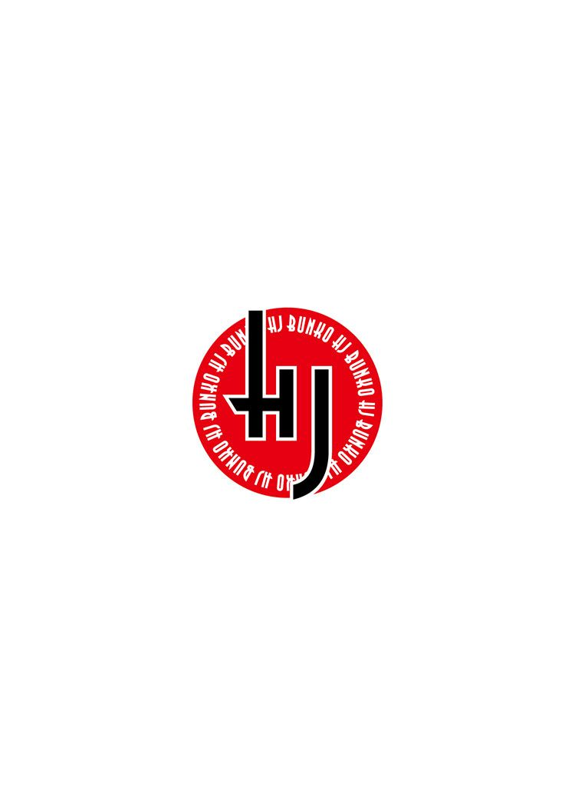
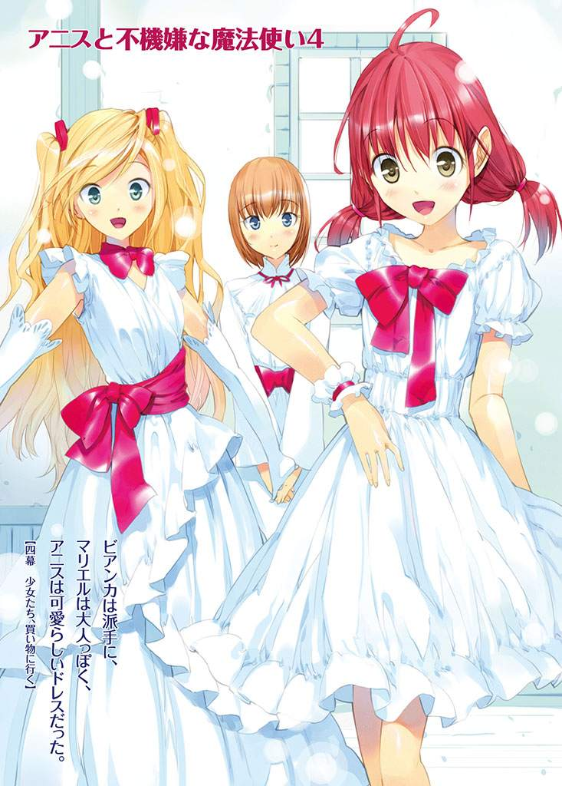
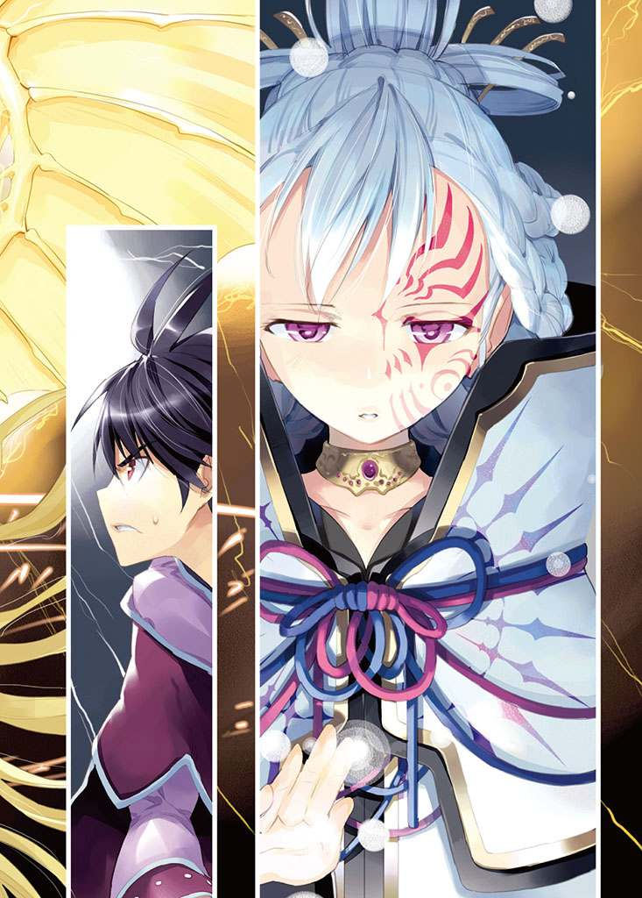
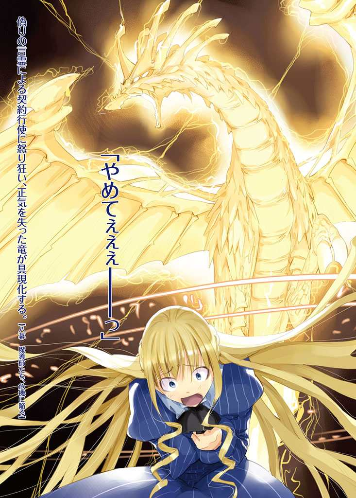
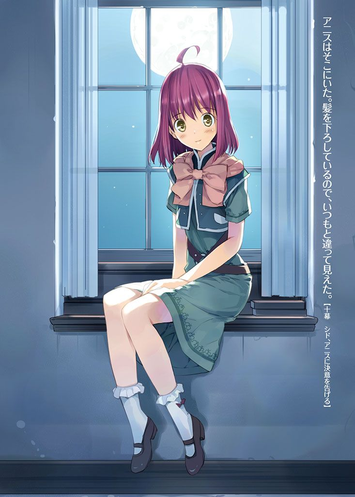
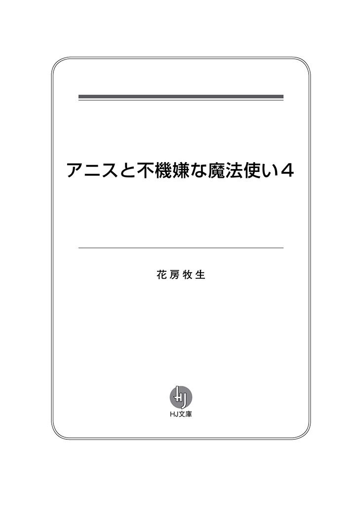
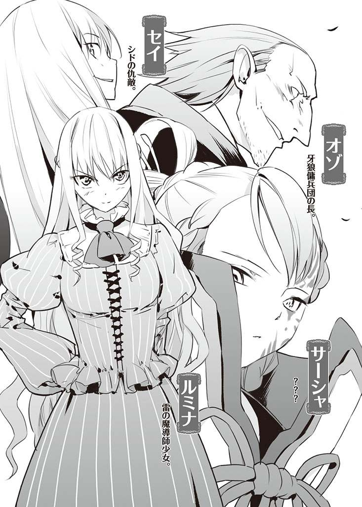
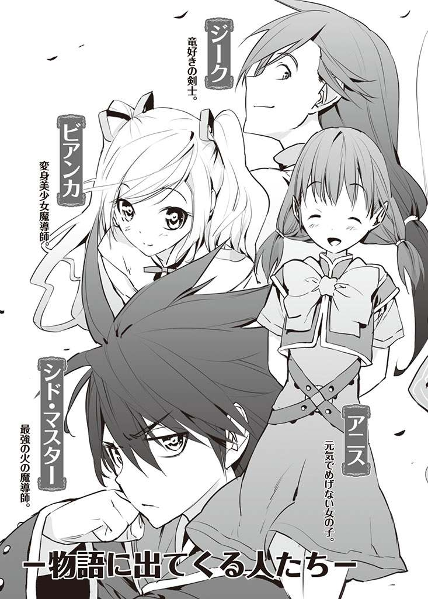

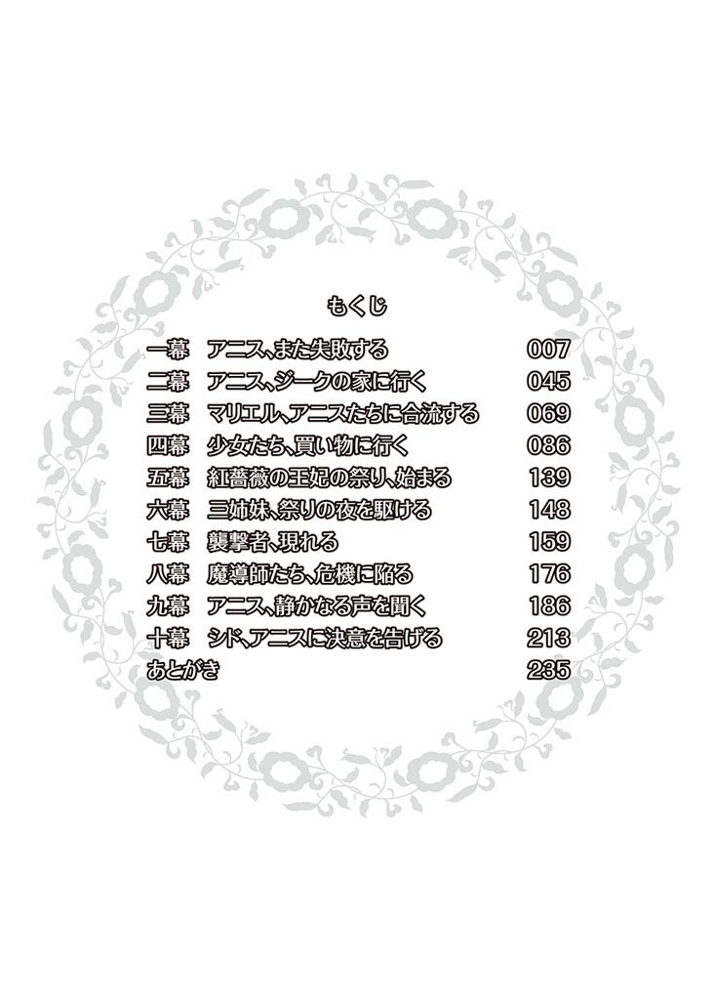
「三秒......」
と言いかけてシドは、言葉を止めた。
室内は、 酷 い有様だった。アニスは 床 に 座 り込み、青ざめたシドを半泣きで見上げている。テーブルの上は動物が転げ回ったようにしっちゃかめっちゃかで、食器は 全 て欠けたり粉みじんになっている。
アニスのお気に入りの真っ白なテーブルクロスは、思い切りひっぱられたらしく情けなく垂れており、ところどころ 無 惨 に破れている。 花 瓶 も横に 倒 れ、床にできた水たまりの上には花が散らばっている。
どこを見回しても 惨 状 だった。
元気に室内を走り回っているのは、とても 可愛 らしい顔をした三 匹 の小さな 愛 玩 竜 だ。 鱗 ではなく、ふさふさの白い毛に包まれたその身体は、小さな犬にそっくりだ。しかし長くのびた黒い 爪 、口からのぞく 鋭 い 牙 は 間 違 いなく竜のものだった。アニスに 召 喚 されてすぐ部屋を 壊 しにかかったその性質は、「元気」や「やんちゃ」という領域を 余 裕 で 超 えている。
大きな目をきらきらと 輝 かせ、走り回りつつもこちらをうかがっているかれらを、アニスは必死になって追いかけたのだが、 捕 まえることはできなかった。 頼 んでもなだめても 怒 っても、三匹の愛玩竜は知らんぷりで乱暴に転げ回り、 食 卓 を 崩 壊 させたのだった。
「......三十秒やる。始末をつけろ」
「シド、あのね、私......その」
「言い訳はいいから、さっさとしろ───ッ！」
シドは 一 切 手伝わずに、室内の様子を見ていた。アニスは必死になって三匹を捕まえようとするものの、人の足と手では、それは不可能だった。竜たちはテーブルの下をくぐり、 壁 を走り、時には 天 井 まで 駆 けている。
「アニス様、 我 が 輩 の言うとおりにしてください、これはアニス様の召喚を、次の段階に進めるために必要なことなのですよ！」
壁の近くに置いてあった 樽 の上で演説しているのは、白ウナギ、ではなく白竜のクールデール 卿 である。アニスの 腕 ほどの長さの身体をぴんと立て、演説するようにアニスに呼びかけている。
「で、でもクーちゃん。この子たち、全然私の言うことを聞いてくれない......」
「聞かせるのですっ。アニス様にはそれだけの力と 魅 力 があるのです！ そもそもあなたには厳しさが足りません。召喚した竜は友達？ いいえ、 圧 倒 的 な支配力でもって、仕えさせねばならないときがあります。それがまさしく今現在ッ！ さあ、アニス様、 魔 力 を放出するのです。我を 崇 めよ、と命じるのです！」
「きゃあーっ」
愛玩竜の名前は、チッチとルリとラースといった。 彼 らは愛くるしい外見に反して、中身は 強 盗 のようだった。 無 邪 気 に 破 壊 を楽しみ、アニスの制止など意に 介 する様子もない。壁をかき、床を転がり、テーブルの周りを走り、 競 うように物をひっくり返す。
部屋の中のものを破壊し 尽 くした後に三匹が関心を持ったのは、アニスだった。
「あ......あ、ちょっと......きゃあっ！」
三匹はくるくる 入 れ 替 わりながら、アニスの身体に 突 撃 してきた。スカートを、 髪 の 毛 を引っぱられてアニスは悲鳴を上げる。もちろん三匹に悪気はない。完全に遊んでいるだけだった。
「あと十秒！」
シドが 残 酷 に告げる。アニスは 涙 目でシドに何か言おうとしたが、その背後からのぞいた顔を見て 凍 りつき、
「来ちゃダメ、ビアンカ！」
と絶望的な気持ちで 叫 んだ。
よりにもよってこのタイミングで帰ってきたビアンカは、
「ただいまーっ......てこれ、どういう......」
と不思議そうに首をかしげる。
するとビアンカに三匹が突撃していった。彼らは 何 故 か、シドのことは完全に無視した。あれは 関 わったらマズイ、と本能が 訴 えたのかもしれない。
そしてビアンカは三匹の 襲 撃 に悲鳴を上げた。
長い 金 髪 を引っ張られ、スカートや 袖 を引かれ、 驚 きのあまりビアンカは真っ白なアヒルに変身してしまった。それを見た三匹は大喜びで宝石のように美しい目をきらきら輝かせ、なおのことちょっかいをかけ始めた。
尾 羽 を 抜 かれながら、ばさばさと飛び回り 逃 げようとするアヒルに、三匹は 猛 然 と突撃する。羽が 舞 い飛ぶ。
「きゃーっ、きゃーっ、やめてぇぇーっ！ 殺されるぅぅ」
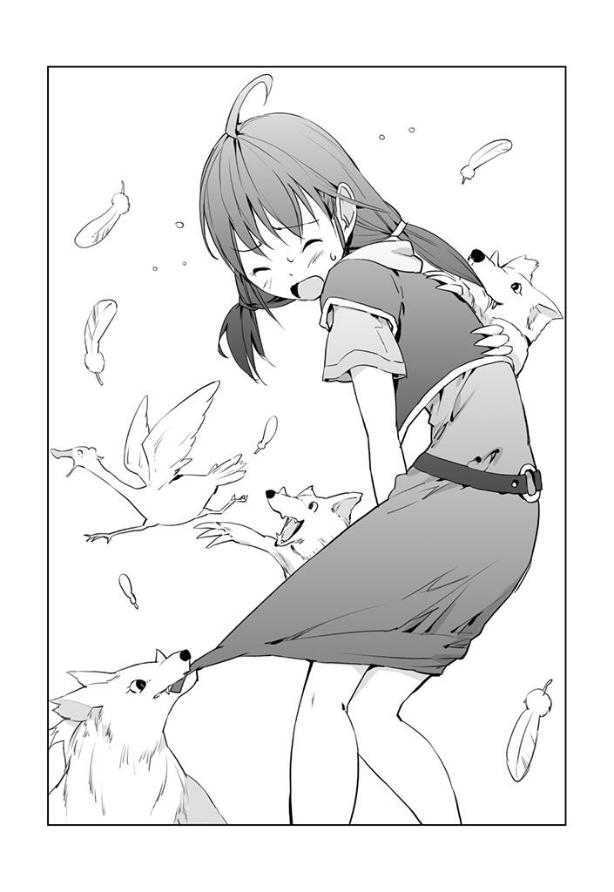
「ビアンカ、こっちに来て！」
アニスは必死になって空中のビアンカを 抱 き 留 めた。腕の中でアヒルはぷるぷる 震 えていた。アニスは申し訳ない気持ちで一 杯 になり、次に三匹に向き直った。
「なんてことするのっ！ あなたたち、私の言うことをき......きゃああっ」
三匹はアニスの 怒 鳴 り 声 など全く意に介さず、飛びついた。なんとかして腕の中のアヒルで遊びたいらしく、「キューン！」と 甘 い鳴き声をあげながらアニスの腕を 引 っ 掻 こうとする。アニスは全力でビアンカを抱きしめつつ、座り込んだ。
無 茶 苦 茶 な状態だった。
「アニス様ー、魔力の解放って言ってるのに......アニス様ー。いつまでたってもそいつらは言うことを聞きませんぞー」
「おい。念のために訊いておくが、こいつらを焼いたら、召喚主であるアニスはどうなるんだ？」
クールデール卿の近くに寄っていったシドが質問する。
「乱暴にもほどがありますぞ、いくらアニス様のニセモノで 仮 初 めの父親とはいえ！」
きりっとして文句を言おうとしたクールデール卿だったが、シドの手が自分の首を 狙 っていることに気づき、居住まいを正した。
「......えー、召喚した竜が傷ついてもアニス様の身体には 影 響 はありませんが、多大な魔力を消失することになります。数日は目覚めることができないかもしれないですな」
クールデール卿にしてはやや親切に答えた。それからシドはいくつかの質問を重ね、部屋を出て行くと、すぐに 戻 ってきた。
部屋の中はよりひどい有様になっている。逃げようとしたアニスは床の上に落ちていた皿を 踏 んで、前のめりに転んだらしい。 靴 が片方 脱 げている。それでも必死にビアンカを 庇 っていた。
「ビアンカ、私が、私が守るからっ」
「ありがとうアニスちゃんっ............でも私がジュリになってこいつらを倒したらいいんじゃあ......」
「 頑 張 るから......っ」
シドの手には、 大 粒 の 真 珠 の 首 飾 りがあった。
何十回となく突撃を受けて息も絶え絶えのアニスだったが、シドが無言のまま糸を引きちぎり、真珠をばらまくのを 呆 然 として見ていた。
大粒の白い球がいくつも転がっていく。もちろんシドは 錯 乱 したわけではない。行動の意味は、すぐに分かった。
「キュイィーッ！」
チッチとルリとラースは、ぽとぽと床に転がった真珠を 奪 い 合 うように突撃した。
それまで 興 味 津 々 だったアヒルには全く関心を失ってしまい、白い球を夢中になって 舐 めている。 恍 惚 とした表情で幸せそうに 寝 そべっている姿は可愛らしいといえば可愛らしいが、しかしあまりにも部屋の有様がひどすぎた。
「彼らの種族は、宝石を好物としています。宝石を体内にため込むのが大好きなのです。特にエメラルドが好物です。あれほど大きな真珠でしたら......まあ数時間はルンルンで舐め続けるでしょうなぁ」
とくとくと説明するクールデール卿だったが、それを聞くアニスはぼさぼさの髪で、まばたきすら忘れてしまっている。そして、白竜の身体は元気よくぴんと立ち上がった。
「さあアニス様、彼らを支配下に置く訓練を再開しましょう！ 召喚した竜が、いつでも言うことを聞いてくれるとは限りませんぞ。忠誠度の低い竜には魔力をぶつけ、どっちが 偉 いのかを教えてやるのです！ 圧倒的な支配力！ これからの召喚はコレです。さささ、魔力を解放なさってください」
アニスはしばらく放心していた。かたわらのアヒルも同様だった。
やいのやいの言うクールデール卿に従い、あやつり人形のようにのろのろ動き、なんとか魔力を放出させる。何度も 繰 り 返 すことによって、最終的には三匹も言うことを聞いてくれた。しかしそれは、
「お 腹 いっぱいだし、帰れっていうならそろそろ帰ろっかなあ」
という、非常に相手の気分にたよったものだった。
転がった真珠を全て腹に収めた三匹が消えた後、アニスは 怖 々 とシドを見上げた。
とっくに三十秒は、過ぎていた。
「とても......とっても絶望的な気持ちよ。悲しくってたまらないわ。シドが怒るのも当然だわ。何度でも許してくれるまで 謝 りたいんだけど、でも今回はシド本気で怒っちゃって、話を聞いてくれないの。ご飯だって言っても返事もしてくれないし。そもそもあの真珠の首飾りを 無 駄 にしてしまったことはどう 詫 びればいいのかしら。私の力じゃあ、 弁 償 することなんてできそうにないし。シドはいらないって言うかもしれないけど、これは私の......その、気持ちの問題だわ。問われているのは誠意だもの！ でも、どうしていいか分からないの。今日はパンを焼くのも失敗してしまったし。真っ黒なパンって、そりゃもう悲しいものよ。口の中に 焦 げた味が広がるんですもの、切なくって胸がきゅんとするわ。そんな私を見てジークが『そんなに腹が減ってるのか？ 焦げたパンなんて食べるほど？』って言ったの。私は単に真っ黒になった 可哀 想 なパンの末路を、どうにかしてマシなものにしてあげたかっただけなのに。実際、お腹なんてそれほど空いてなかったわ、ほんとよ！ ジークって、時折とても失礼なことを言うのよ。でも今問題とするべきはジークじゃないの。どうやったらシドに怒られないように......」
延々とノートに書き続けていたアニスだったが、ため息をついてペンを置いた。魔力のこもった 革 表 紙 のノートは、親友であるマリエル・ヴェルダのもとにあるノートと 対 になっており、片方に書いた文章はもう片方にも現れる。アニスとマリエルのやりとりは、始まったときから 途 切 れることなく、ほぼ毎日続いている。
マリエルの方でも、父である代理公がこんなことを言った、あんなことをやった、信じられない許せないどうしてくれよう、と毎日毎日新たなる 悩 みを重ねている。二人は父親に悩まされているという点において、ほとんど同じ 境 遇 にあるのだった。
しかし悩まされている内容は全く 違 う。
マリエルは大人びた、 淑 やかな少女である。アニスのように失敗をして怒られているわけではない。不注意、うっかり、ぼーっとしすぎ、などの 指 摘 を受けることは 彼 女 には一生無いだろう。アニスは悲しくなって一度書いた文章を消そうとしたが、
『 大 丈 夫 ？』
という 丁 寧 な文字に気づいて背筋を 伸 ばした。
「大丈夫よ！ 元気。でもちょっと、落ち込んでるの」
『会って話したいわ。ごめんなさい、お父様が呼んでるから行くわね』
時折、ノートに向かう時間が重なり、会話するように文章を書けるときがある。アニスは喜んだものの、残念ながらマリエルは行ってしまったらしい。待っていても文字が増えることはなかった。
「アニスちゃん、入ってもいいー？」
そのとき聞こえたノックの音は、アニスには天使の足音のように聞こえた。
愛玩竜に 襲 われた後は無惨な様子だったが、お 風 呂 に入ってさっぱりしたらしい。ビアンカはいつもの通りのきらきらした金髪で、白いワンピースも 綺 麗 になっていた。
アニスは立ち上がり、 笑 顔 でビアンカに近づいていく。
「さっきは言いそびれたけど、ただいま、アニスちゃん！ シドに怒られなかった？」
「おかえりなさい、ビアンカ。さっきはごめんなさい、またひどい目に 遭 わせてしまったわ。あの...... 怪 我 はない？」
「大丈夫よ、なんともないわ。ちょっとだけ羽が抜けたけど」
ビアンカはぽふっとベッドの上に 腰 掛 けた。足を伸ばして一度後ろに倒れたが、すぐに起きあがる。アニスは 隣 に座った。
「シドは怒ってたけど、でも今回は怒るというより 呆 れていたみたい。お説教もいつもより短くて、それがなんだか悲しかったわ。もっと怒ってくれた方がマシ、みたいに思えたのよ......怒られるのって 辛 いけど、怒られない方がもっと辛いわね。しみじみ感じたわ」
二人の会話はぽんぽん 投 げ 渡 されるボールのようだった。
「これ、おみやげ。シドはいつだって怒ってるじゃない！ たまにはあいつも 疲 れるのかもよ。あるいは芸風を変えてるんじゃない？ その方がアニスちゃんにはダメージだって、計算ずくで。悪党なのよ。気にしちゃダメよ」
アニスは悪党、という言葉に反応した。 膝 の上におみやげを乗せたまま、うーんと考え込む。
「父親が悪党だっていうのは、ちょっとロマンチックね......なんだか物語を感じさせるわ。そうね、こういうのってどうかしら？ とある 娘 が、父親と二人で住んでいるの。その娘は、とても父親のことを愛しているんだけど、父親は犯罪に手を染めているの。娘は父を必死に止めようとするんだけど、父親は『お前のためだ』と言ってとりあわない。日常は 淡 々 と過ぎていくんだけど、でもどこか 破 滅 を予想させるの......。娘は笑っていても、いつも父親のことを気にかけていて、ふと 浮 かべる表情がとても 憂 鬱 なの。きっとラストでは父親のために死んでしまうのよ」
アニスはうっとりと目を閉じ、両手を組む。
「『お父様......どうか、どうか悲しまないで。私は幸せでした』なんて。父親は娘の死に顔を見て初めて 己 の生き方を 悔 いるんだわ。......なんて悲劇的なドラマなのかしら、マリエルに提案してみようかな。悪党っていっても、 盗 みや殺人ではないの。たとえば......どんな犯罪が良いかしら。シドだったら...... 詐 欺 かしらね？」
「むかついたら家を焼きまくる、 破 壊 者 で良いと思うわ」
「そうねぇ。確かに、そんな感じね。あ、これ、おみやげありがとう。開けても良い？」
ビアンカはもちろん！ と 微笑 んだ。
アニスは渡された包みから丁寧にリボンを外す。赤いリボンは花の形になるように結ばれている。アニスの手つきは外すのがとても 惜 しそうな、ゆっくりしたものだった。
「わぁ......！」
それは、新しいワンピースだった。アニスは目を輝かせる。その表情を見たビアンカはとても満足そうだった。
「ギルドに 依 頼 された仕事が 完 了 したから、収入があったのよね。で、アニスちゃんにプレゼントっ。フリフリなレースのついた 豪 華 なやつと、ちょっと色っぽいのとどっちがいいかなあって悩んだんだけど......」
色っぽいのにしたわ！ とビアンカは満面の 笑 みで告げた。
アニスは両手で服を持ちあげた。自分で買うことはまず一生無いような、大人っぽいワンピースだった。その 繊 細 なレース模様は、着た者の 肌 をとても色っぽく見せるだろう。ぱっと見は可愛らしく見えるが、その実かなり大人っぽい。女性らしさを強調するためか、胸のところが結構あいている。身体に巻き付ける形のスカートはかなり短いようだ。アニスは今まで、このような服を着たことがない。
細かい 飾 りが多く、一人で着るのは難しそうだった。
「着てみていいかしら？」
「ぜひ、着て。見せて！」
ビアンカはわくわくしている。アニスはビアンカに後ろを向いてもらい、服を 着 替 えた。どう着ればいいか迷いつつ、繊細なつくりの布地を破らないように丁寧に腕を通す。
「............あの、ビアンカ」
「どうっ？ ............」
振 り返ったビアンカは、アニスが情けなくうなだれているのを見て 動 揺 した。それから、絶句した。
その服は、アニスに似合っていなかった。いかにも 冒 険 しすぎという感じがした。洋服の方向性と本人の持ち味が、完全にすれ違っている。いかにも「他人の服を借りてきました」という 風 情 。それよりなにより、 胸 元 の 寂 しさがただごとではなかった。アクセサリで 誤 魔 化 せる領域を 遙 かに 超 えていた。
「あの......ちょっと、イマイチよね？」
「ごめんね、見立て失敗しちゃったみたい。これ、アニスちゃんには合わなかったわ。お店で見たときはこれだって思ったんだけど。今にして思えばなんだか色気 過 剰 ......」
ビアンカは似合わない服を似合うと言い張るような少女ではなかった。とりあえず腕のリボンをくるくる巻きつつ、着衣を完成させる。
壁にかかっている円鏡に己の姿を映し、アニスは呆然とした。似合ってないというより、いっそ無惨と言った方が良かった。悲しくなるより、笑いたくなる姿だった。アニスはくるりと回って自分の姿を 確 認 した。
「なんだか、ポーラ様に見られたら、不良と言われてしまいそうね。でも、一度こういう服を着てみたいなって思ってたの。あんまり似合わないけど、一応、夢は 叶 ったわ！ ありがとう、ビアンカ」
「私、次はもっと......」
そのとき聞こえてきたノックの音は、アニスには悪党の足音に聞こえた。ビアンカが 慌 てて、 隠 れてぇ！ と叫んだところ、
「お前はまた召喚しようと......！」
と 扉 が開けられた。
シドは、派手な服を着たアニスを見て 押 し 黙 った。
実に 含 蓄 にあふれた 沈 黙 だった。
それから片 眉 を上げ、意地悪そうにせせら笑う。アニスの 頬 は、髪の色のように赤くなった。しかしシドは服について特に 言 及 しなかった。ビアンカに視線をやると、
「後で 俺 の部屋に来い」
と告げてそのまま扉を閉じようとする。
しかし閉まる直前に、
「アニス。外には出ない方がいいぞ、残り少ない 名 誉 を失わないためにもな」
という言葉が置きみやげとして残された。
アニスは何を言われたか分からずしばらくぽかんとしていたが、理解したときには 既 にシドはいなかったのだった。
「あの......アニスちゃん、 怒 ってたんだけど」
ビアンカに言われても、シドは 肩 をすくめただけだった。
「あの服を買ってきたのはお前だろう？ ということは 元 凶 は、お前だということだ。謝りたければ好きなだけ謝っておけ」
「そんなわけ......っ、あれ、そうなのかな？ あれ？」
シドの室内は雑多なものであふれている。机の上にはたくさんの書類が置かれており、ビアンカが入ってきたときはシドはなにか書いている最中だった。
「それはともかく。で、なんの用なの」
「半年前からの食費の 徴 収 を忘れていた」
「............っ」
「 冗 談 だ。お前、ギルドに行ったときに 巫 女 姫 に会っただろう。......ジュリ・メイガス」
かすかに頬を赤らめていたビアンカは、息を 吐 き、そばにある 椅 子 に腰掛けた。 腕 組 みしながら足を組むその姿は、ビアンカのものではなく、彼女のもうひとつの姿、ジュリ・メイガスのものだった。
妖 艶 な 黒 髪 の美女の姿で 腕 を組み、視線を遠くにさまよわせる。
「えらく情報が早いのね？ シド・マスター。説明しようと思ってたけど、もしかしてその必要はないかしら」
「いや、 詳 しい話を聞きたい。お前の口から」
いいけど、とジュリは形の良い眉をひそめた。
「巫女姫は 突 然 やって来たらしくて、ギルドはてんやわんやだったわ。お 陰 で任務完了から入金までの事務処理がとっても 素 早 かったわね。いつもはだらだらだらだら文句つけて延ばすくせにさ」
「話したか？」
「ギルド長がぺったり張り付いてたんだけど。私がいることを知って、風の始原魔導師には 挨 拶 をさせておくべきだ、と思ったみたいでね。少しだけ話したわよ」
巫女姫は「魔導を 統 べる者」と呼ばれ、 全 ての魔導師の頂点に立つ存在である。
魔導師というものがこの世に現れた、古代王朝の時代から巫女姫は存在していた。彼女たちの歴史は何代も続いている。
彼女は未来、そして過去を見通す 紫 の 瞳 をもっており、また顔の左半分には 特 徴 ある 魔 導 紋 が刻まれている。巫女姫の魔導紋は、魔導紋の中で最も 特 殊 とされ、「 氷薔薇紋 」といわれている。
普 通 、魔導師が絶命したときは、魔導紋はこの世から消えてしまう。しかし氷薔薇紋だけは違う。次の主を特定の血筋の女の中から選び出し、宿るのである。
選ばれた少女は、その日から全ての魔導師の頂点に立つものとして、何百人もの巫女が住む場所、氷 薔 薇 の 神 殿 に主として 迎 えられる。巫女姫は、氷の大陸に千年の昔から生きている、一つ目の古代竜の声をきくという。 孤 独 な古代竜の 魂 を 慰 め、 謎 めいた言葉に耳を 傾 ける。
巫女姫の力が全ての魔導師よりも 優 れているというわけではない。力の大きさでいえば始原魔導師、火の魔導師であるシド・マスターや風の魔導師であるジュリ・メイガスに 劣 るだろう。
しかし彼女を 倒 すことのできるものはいない。その実力があったとしても、実行できる者はいない。全ての魔導師は 髪 一筋分の傷すら彼女につけることを 恐 れる。また巫女姫を襲う者がいたとすれば、必死に彼女を守るだろう。
三百年前、巫女姫の命を奪った者がいた。そのとき彼女の命が果てるのと同時に、大量の魔導師が同時に絶命したのである。原因不明の現象だった。まるで天災に巻き込まれたように、大量死は起こり、 一 瞬 にして終わった。全ての魔導師が死んだわけではなく、死んだものと死ななかったものの差は不明確だったが、そのことは全ての魔導師に 恐 怖 の 記 憶 として伝えられている。
ただしそれは他人による死に限るとされている。自然死では、そんな現象は起こらないからだ。古代竜による祝福、あるいは 呪 いであるとされている。
「挨拶だけだったけど。今回の巫女姫は、まだ地位についてから数年しかたってないみたいね......会ったことある？」
「ああ。一度だけ。顔を拝んだ程度だが」
「アニスちゃんとそう年は変わらないかしら？ すごい美少女よね、びっくりしたわ。顔の 紋 様 さえなければ、国をひとつ傾けるくらい、簡単かも......それはともかく。彼女がなんでギルドに来たかは、よく分からなかった。けど、なんかいやな感じだったわ」
ジュリは遠い目をした。巫女姫の言葉が 蘇 る。
『ジュリ・メイガス。あなたは不思議な魂を持っているのですね。風の力よりも、わたくしにはあなたの変身能力の方が気になります。知っていますか？ あなたは決して竜にだけは変じてはなりません』
なぜです、と聞かずにおれなかった。
『......戻れなくなるのです。変身能力者は、己の 来 たるところを知らない。あなたは生まれた場所も、自分の本当の名前も知らないはずです。ですが、心配する必要はありません。いつか遠い未来......あなたはきっとそれを 見 出 します。 間 違 わずに道を選び取ることができたなら、きっと』
不思議な 紫 色 の目を見ていると、ぞっとさせられた。まるでなにも映っていないかのような、感情の宿らない宝石のような目だった。
『あなたは、火の魔導師と水の魔導師のことを知っていますね。わたくしは、 彼 らに会い、話をしたい。彼らの運命をのぞくことができたなら......わたくしの探しているものにたどり着くことができるかもしれないから』
探しているもの......？ と口の中で繰り返すジュリに、巫女姫は不思議な笑みをみせた。あまりの 美 貌 に、息をのんだ。繊細で、 儚 く、それでいて 奥 底 が計り知れない。この人に普通の感情はあるのだろうか、いや、普通の人間とかけ 離 れているのでは......と、考えずにはいられなかった。
「具体的に言え。なにがイヤな感じだったんだ？」
ぼんやりしていたことに気づき、ジュリは 瞬 きした。視線をさまよわせ、どう伝えるべきか迷っているようだった。
「巫女姫は探しているって言っていたわ。なにをかは言わなかったけど......あくまでもカンよ。 証拠 も何もないんだけど。なんとなく...... 召 喚 者のことを調べに来たような気がしたのよ。ちょっと調べれば、 牙狼傭兵団 が今召喚者を探していることも、分かるでしょうね」
シドは、そのことは予測、あるいは知っていたらしい。 驚 きもせずにジュリの言葉を聞いていた。
「まさか巫女姫が牙狼傭兵団なんかと手を結ぶとは思えないけどさ」
「氷薔薇の神殿は混乱しているそうだ。当然だ、巫女姫が単身外に出たんだからな。彼女なら、自分の居城にギルド長を呼ぶことも簡単だったはずだ。それがわざわざ、自ら足を運ぶとは。普通の関心じゃない」
ジュリは、赤い 唇 をきゅっと引き結んだ。
「......アニスちゃんのことは、ばれてないわよね」
「おかしな動きがあれば、分かるように 網 を張ってるさ。ただし、もし、セイ・ノーマンが巫女姫になんらかの働きかけを行っていれば、ばれている可能性はあるが......しかし、やつは先代の巫女姫と 一 悶 着 やらかしてから、あちらとは 関 わり 合 いを持たないようにしていたはずだ」
ジュリはいやそうに 眉 根 を寄せた。セイ・ノーマンとはこの間戦ったばかりだ。そのときにはセイ率いる不死者の群れと、楽しいダンスを繰り 広 げる羽目になった。
「もしかして、セイの 奴 の 無 茶 苦 茶 さによって救われてたりする？ あいつが牙狼傭兵団と仲良しだったり、巫女姫と親友だったりしたら、ものすごーく危険だったんじゃ......」
シドは皮肉げな笑みを浮かべた。
「そうだな。......あいつはあいつでろくでもないことを考えているのは確かだが。この前アニスが 誘 拐 されたときに、わざわざあいつを助けに来たらしいからな。恩を売りたい、なんて言ってたらしいが」
ジュリはセイ・ノーマンに恩を売られたときのことを想像した。返礼として、脳だの心臓だの 毛 髪 だの血液だの、危なっかしいものばかり要求されるに決まっている。セイ・ノーマンという魔導師は、性格や 根 性 と同じく、 性 癖 まで 歪 んでいるのだ。
「巫女姫って未来予知の力があるらしいわね？ 本当なのかしら、あれ」
「そんなものが本当にあれば、わざわざギルドまで来る必要はなかっただろうさ。おそらく、今代の巫女姫にはその力はないだろう」
「そう？ ......ならいいけど。でも、全身に 魔 法 の力を帯びた布だの、宝石だのを身につけてるし、普通じゃない力を感じたわよ」
「未来視や過去視は、生まれ持った素質の上に、非常に大きな 魔 力 を必要とする。生まれながらにして魔導師数百人分の魔力を持った者でなければ、使えない。アニスくらいの魔力は必要なはずだ。今代の巫女姫は見かけは絶世の美女だが、魔力に関しては大したことがないという 噂 だ。もちろん、巫女姫は巫女姫にだけ伝えられる、特有の魔法をいくつかもっている。戦う相手としては、油断ならない相手だがな」
「やめてよ、巫女姫と戦うなんて。冗談にしても笑えないわ」
シドは肩をすくめた。ジュリは無言のままのシドをじろりとにらみつけ、言葉を続けた。
「もしかしたら巫女姫がアニスちゃんをさらいに来るかも知れないけど......そのときはどうするの？ シド」
「決まってるだろう」
シドはそれ以降の言葉を口に 出 さなかった。
ふと、シドが 緋 色 の目をまっすぐにジュリに向ける。
「お前は......いつまであいつの味方でいるんだ？」
問われたジュリは意外そうに目を見開いた。すぐには答えを口にせず、腕組みして首をかしげた。
「それも......決まってるわよね？」
「大変な事態が発生してしまったのよ。どうすればいいか、分からないわ......というか、シドがなんていうかは分かり切ってるんだけど、それをどうやって打破すればいいか、 悩 んでいるの。ねえ、ジーク。どう思う？」
「えーと、どう思うもこう思うも、何が起こってるやらさっぱり......」
ノアの 寝 床 を調えるジークは、明らかにアニスの話を適当に聞いていた。器用に農具を 操 って、シドの 塔 の 玄 関 広場に、ふかふかの 藁 の 寝 台 をつくっている。ジークは額に 汗 を浮かべつつ愛する竜のために労働している。その様子は 献 身 的 と言えた。
しかしノアは特にジークに感謝する様子もなく、「キューン」と 甘 えるように鳴きながらアニスに頭をくっつけている。甘えている様子を見て、ジークは切なそうな表情を浮かべた。自分には全くあんな風にしてくれない。 面 倒 を見るだけ見させて、あとは無視である。悪女のノアだった。
アニスは片手に 革 表 紙 のノートを 抱 きながら、ノアの頭を 撫 でている。ノアのアニスに対する振る 舞 いは 仔 猫 のもののようだ。すっかり安心して甘えている。一応、 卵 を産んだのだから母親であるはずなのに、ノアは卵の存在すら忘れているように見える。
ノアの卵は寝床のそばに作られた、飾り台のような場所に置かれている。もちろんジークが用意したものだ。早く生まれないかなあと毎日念入りに 磨 かれている卵だが、現在のところそんな 兆 しはない。風竜はほとんど卵の面倒をみないものらしい。ノアはアニスやジークが卵に 触 れても、怒らないどころか、あくびしている。
「マリエルが、パーティがあるって言ってるの。なんでも若い女の子たちが気軽に参加できるような、規模の小さいものらしいんだけど、ロッテはまだ小さいから行けないんですって。マリエルは一人で行くのはつまらないから、私とビアンカと 一 緒 に行けたら 嬉 しいって言ってるの」
「パーティ......」
ジークは藁をかき集めていた道具を手に、しばらく考え込んだ。 絢 爛 豪 華 な城の中で微笑む、色とりどりのドレスで 着 飾 った貴族 令 嬢 たち。きらめく宝石、 咲 き 乱 れる大輪の花々。 華 麗 な音楽。その中に、アニス。
ぶほっと 吹 きだしたジークを、アニスは不思議そうに見つめた。
「どうしたの？」
「いや、パーティに参加なんて、ちょっと大変じゃないかなと。そんなの一度も行ったことないだろう？」
「そうよ。もちろん、行ったことなんてあるわけないわ。恐ろしい......だって、貴族たちのパーティなのよ？ 想像でなら何度か行ったことがあるけど、でもやっぱりそんなの参加経験に 含 まれないわよね」
「ない......な。普通は」
「ねぇ、どうかしら。行っても良いと思う？ 最初から 諦 めておいた方が無難かしら。もちろん、 奇 跡 が起きて行くことが許されたなら、目立たないようにすみっこの 壁 の方にいるつもりよ。そういうのって、壁の花っていうらしいわ。私なんて花というかツタみたいなものかもしれないけど......どうしたのジーク」
笑い出すのをこらえるため、腹を押さえたジークに、アニスは心配そうに問いかけた。だがジークは無言で手を振って気にするなとこたえた。
「もしかしたら貴族令嬢の中に、意地悪な娘さんがいるかもしれないわね。『そこでなにをしていらっしゃるの？ 退 屈 なら、真ん中で 踊 られたらいかが？ 少しでも素養がおありなら、難なくできるはずですわよね？』って。『イーデンの薔薇』に出てくる、意地悪なレイティアならやりそうなことよ！」
アニスの視界には、意地悪そうに 高 慢 に笑っているレイティアが 浮 かんでいる。それは牙狼傭兵団の一味として出会った少女の顔をしていた。
「私、アストリッドみたいに華麗にステップを 踏 んで踊ることなんてできないわ。レイティアをぎゃふんと言わせるどころか、大喜びさせちゃうわ。だからたっぷりダンスの練習をしなきゃいけないと思うの......きっとマリエルが教えてくれるわ。でもその前に、シドにパーティに参加していいって、許可をもらわないといけないわよね。許してもらわなきゃ、出られないわ。それを思うともう、胸がどんよりしてしまって。絶望的な気持ちなの。最近、シドを怒らせてばっかりだったの。普通にしてても許してもらえないかもしれないのに、こんな状態じゃ、一万回 頼 んでも一万回断られるわ。絶対に許してくれっこないわ。たぶん、私たちには 信 頼 ってものが欠けているように思うの」
「欠けてるのは信頼じゃなくて......」
アニスはジークの言葉を聞いていなかった。
「マリエルが、自分からもシドにお願いするって言ってくれてるの。でもマリエルとシドが対決することを思うと、なんだか恐ろしくって。絶対に 喧 嘩 させてはならない二人だと思うのよ。しかも私のせいで、なんて考えただけで気持ちが 痩 せてしまうわ。でもそうすると、本当にどうしたらいいか分からないの。ジークはどうしたらいいと思う？」
「うーん」
ジークはふかふかに空気を含ませ、最高の 寝 心地 に仕上がった寝床を満足げに 見 渡 すと、とろとろまぶたのノアに、「入って良いぞー！」と声をかけた。ノアはのしのしと寝台に入っていく。アニスは踏まれないように慌ててどいた。
「諦めた方がいいと思うけどな。それよりアニス、頼もう頼もうと思ってたんだ。お願いだからアルファレスをもう一回 喚 んでもらえないかな......？」
頬を赤らめるジークを見て、アニスはやや後退した。
アルファレスとは、ジークが激しく気に入っている、全身鋼のような筋肉に包まれた 稲 妻 竜である。王都のレースで不敗を 誇 っている伝説の競争竜の兄貴分に当たるらしい、 素 晴 らしい 脚 力 を誇る竜だ。
この間ジークは彼の背に乗せてもらったはいいものの、あえなく振り 落 とされてしまい、気絶してしまった。苦い経験はジークを少しだけ大人にしてくれた。
「話を聞いてた？ ジーク。そんなのできるわけないわ。勝手に召喚なんかしたら、どんなに怒られるか......」
「アルファレスを喚んでくれたら、俺からも一緒に頼んでやるよ。アニスをなんとしてでもパーティに行かせてやって 欲 しいって。最近俺、シドとは信頼関係があるように思うんだよな。あいつが何考えてるか分かるし。これでも長いつきあいだしさ」
「でも」
「必死に！ 命がけで！ なんとしてでも許可がもらえるように、 頑 張 るよ！ 任せろって、アニス。信じてくれよ！」
「うー......それなら......」
そのとき頭上から、
「ほう」
という声が聞こえ、アニスは 硬 直 した。聞き覚えのあるこの声は、もしかしなくても、聞き間違いようがないくらい、彼のものだった。
ジークはニセモノ 臭 い 笑 みをたたえつつ 冷 や汗をかいている。
ゆっくり 振 り 返 るアニスの視界で、シドはゆっくり階段を下りてくるところだった。
目の前にシドが立つ。ジークは 逃 げたそうに足を小刻みに動かしている。アニスは逃げようとしても逃げられなかった。
とうの昔に頭を 掴 まれていた。
「ジーク。お前が必死に命がけで頼んだとして、それを俺がきいてやるとでも思ってるのか？」
シドの 迫 力 に、ジークは数歩下がった。
「......ですよね！ 俺も、竜が見たいからってお調子に乗っちゃってたみたいで。は、ははは」
シドの 怒 りに当てられ、ジークは 妙 な敬語になっていた。アニスはすっかり縮こまり、目を閉じている。
「何か言いたいことは」
アニスの頭を 握 ったまま、シドが問う。
「あの......その、やっぱり、ダメ......よね？」
「なにが」
「マリエルと一緒にパーティに行ったり......お 泊 まりしたり......あいたたたたたっ」
ぎゅうう、と力をこめられアニスは悲鳴を上げた。 容 赦 ない力だった。解放された 瞬 間 、身を 翻 すようにしてシドから 距 離 を取った。
気づいたときにはジークは姿を消していた。もう絶対にジークなんて信用しないわ、とアニスはひそかに決意した。
ノアは心配そうにキュウ、と鳴いている。
「お前の生活態度のどこをどう 切 り 抜 いたら、少しでも 褒 めても良いと思えるような部分が出てくるんだ？ お前は俺をなめてるのか？ あるいは、人生をなめてるのか？ とぼけた頭は生まれつきか？」
「 違 うわっ！ 私、いつだって本気だもの！」
ぎりっ、とシドの 眉 間 のしわが 濃 くなった。
「だったら本気で 馬 鹿 だってことか。パーティ？ 詐 欺 にあったり誘拐されたりする奴をどうして放流できると思うんだ、この 間 抜 け！」
「わっ、私だって！ 私だって......っ」
アニスの言葉は続かなかった。両目に浮かんだ 涙 が瞬きするたびにぼろぼろとこぼれ出す。ぎゅう、とスカートを握りしめる。何か言おうとするが、言葉は出てこない。アニスも、自分が悪いことはよく分かっていた。 一 縷 の望みに 賭 けようとしたのだが、残念ながら一縷の望みすら存在しなかったのだった。
シドはアニスを置いてさっさと行ってしまった。その背中が階段の向こうに消えていったのを見てから、アニスはわあ、と泣きだした。ノアが 優 しく鼻をくっつけてくる。身も世もなく泣いているアニスを、心配してくれているのだった。
「私、今、世界で一番みじめなんじゃないかしら......」
泣きに泣いてから、アニスは頭を上げた。まぶたは真っ赤に 腫 れ 上 がっている。
「......一番なんて、 図 々 しいかしらね。ねえノア、私はいつだって 誰 かに守ってもらえてるんですもの。みじめだなんていったら、 罰 が当たるわ......パーティは本当のところどっちでも良かったの。マリエルの部屋でお泊まりして、一晩語り明かしたり秘密でお 菓 子 を食べたり、新作のお話を読ませてもらったり、そういうことがしたかったんだけど......私、こんなんじゃ一生お泊まりなんてできそうにないわ、失敗ばかりなんですもの。わざとじゃないのよ、これでも努力してるの！」
再びアニスは泣きだした。おいおいと泣いているうちに、涙が止まらなくなった。
ノアは 喉 を鳴らしてアニスの身体を鼻で 押 す。するとアニスは転がりそうになってしまった。後ろに倒れそうになりつつ、バランスを取る。台につかまった 拍 子 に上に 載 っていたノアの卵が転がってしまった。 慌 てて追いかけ、拾う。
「ごめんなさいノア！ 卵が転がっちゃった。赤ちゃんが目を回してるかも」
ノアは心配する様子もない。竜の卵の 殻 はとても固いので、落とした程度では割れる心配はない。だからといって転がしても良いわけではないが。
アニスは卵を大事に台に載せた。ノアはキューンと鳴きながら、この子もアニスに会いたがっています、と言った。もちろん言葉でではない。アニスにはノアの考えていることがだいたい分かるのである。
「私も会いたいわ。竜の赤ちゃんって、見たことないの。ノアの子供ですもの、きっと 綺 麗 な 漆 黒 の目をした 可愛 い子だと思うわ。え、私が名前をつけてもいいの？ わあ、私名付け親なんて初めて。もちろん 一 生 懸 命 考えるわ！ ロマンティックで、綺麗で、またとない名前をつけたいわ」
アニスははっと、 己 が泣いていたことを思い出した。手の 甲 で目をこすり、ノアの頭にぎゅっと抱きついた。
「分かったわ、元気、出すわね。いつまでも泣いていたら、ダメよね。ポーラ様が、自分を 哀 れんではいけませんって言っていたわ。 孤 児 だったりすると、普通より自分が 可哀 想 に思えたりするんだけど、でも哀れんでいるより楽しいことを考えてる方がいいもの......それに自分が悲劇的な 環 境 にいたとしても、物語のヒロインみたいだって思えば、なんだかやる気が出てくるわ。そうだ、白 薔 薇 姫 の 台詞 に、今の私にぴったりのがあったわ。確か、こんな感じだったかしら......」
アニスは両手を組み、しばらく 祈 りの姿勢を取った。
そして立ち上がり、ゆっくりと片手を宙にさしのべる。
「ああ、 我 が人生に 襲 い来る逆境ども、恐ろしい運命よ。わたくしはこの身、この心をもってそなたに立ち向かう！」
抑 揚 たっぷりに 叫 ばれた台詞は、 天 井 まで届いた。悲劇と言うより喜劇に 相応 しい、すっとんきょうな大きな声だった。
アニスはたっぷりと台詞の余韻に 浸 っていた。
「......しばらくやってないと、台詞、忘れちゃうわね。せっかく全部覚えてたのにな。でもやっぱりじーんとするわ。白薔薇姫ってやっぱり高貴ね。私も高貴な女性になりたいと思うわ......」
アニスは気づかなかった。アニスと仲直りさせようと 無 理 矢 理 連れてこられたシドと、連れてきたジークが階段の上でアニスを 眺 めていたことに。
アニスの悲しみ一人劇場を見物することになったジークは腹を 抱 えている。それは、笑い出すのを 阻 止 するために、シドがみぞおちに 拳 を入れたからだった。
「アニスちゃん、なんだか目が真っ赤よ」
次の日、四人そろった 食 卓 で、不思議そうにビアンカが問うた。テーブルの上には焼きたてパンと、ぷりぷりの卵焼き、 玉 葱 スープが並んでいる。アニスがつくった果実ジャムは、色といい味といい見事なできばえだった。
「まさか。玉葱を切ったときに、目を痛めたの？」
「違うの、その、昨日なんだか盛り上がってしまって。涙が止まらなくなったの」
「盛り上がる......？」
不思議な表現にビアンカが首をかしげる。その 隣 でジークがスープを勢いよく飲み干していた。
「決意を固めていたの。このままだと一生お泊まりなんてできそうにないけど、それはそれで無理もないことだから、 我 慢 しようって」
次はシドが吹く番だった。
「お」
前は一生外に出ない方面で決意を固めてどうするんだこのボケが、後ろ向きなのか前向きなのか分からないだろうが、せめて自分の生活態度を改めるようにしたらどうなんだ 阿 呆 ！ という言葉はジークによる、
「提案があるんだけど！」
という叫びによって、飲み込まされた。
「えーと、実は俺、このままだと学校をクビになることが判明した」
ええ！ とビアンカが声を上げる。
「休みすぎたの？ 試験で 零 点 取ったの？」
「いや、書かないといけない書類を書き忘れてた。昨日、クライスから 連 絡 が来て、学校の 掲 示 板 にずーっと俺への連絡書類が 貼 り 付 けられていたらしい......間抜けだから早く手続きをしろと」
クライスというのはジークの同級生であり、マリエルの兄、代理公の長男である。アニスは直接口をきいたことがほとんどないが、代理公は「アニスと 婚 約 させてはどうか」とシドに 打 診 したことがある。
「というわけで、ついでに家に顔出そうかなと。で、アニスとビアンカ、一緒に来ないか？ 来たがってたよな、たしか」
アニスとビアンカは顔を見合わせた。二人とも笑みを押し殺せないまま、シドを見つめる。ジークはたたみかけるように、
「もちろんシドも一緒に来るよな？」
と言った。
全員の注目を浴び、シドは 渋 面 を作ったが。最終的に、
「......いいだろう」
と言った。
空の旅は快適だった。アニスもようやくノアの背中に慣れたのだった。
浮き上がるときに背筋が 凍 るような感覚がするのは仕方がないことだが、四人 座 ることができる大型の座席であれば、胃が浮き上がるような不快感も少しはマシに感じられた。
大きな入道雲が西に泳いでいく。王都が 徐 々 に近づいてくる光景を見るのはこれで二度目だった。ジークの家は、王都の外れにある。
「なんであんな提案したのー？」
とジークに 訊 いたのはビアンカだったが、
「なんか、そうした方が良いと思ったからさ」
という答えを聞いて、ふーん？ と首をかしげていた。
「ジークのお姉さんたちに、 挨 拶 してもいいの？ それとも、私隠れてた方がいいかしら？」
アニスに問われ、ジークは、
「ああ、それはもう好きにしてくれ......」
「なんでそんなに諦め口調なの？」
後ろではシドに掴まれて、 尻尾 をピチピチさせて 反 抗 しているクールデール 卿 が文句を言っている。
「 離 しなさい、少年。これは命令だ。分からないのかね、このトントンチキ」
「てめぇがうかつにあいつに 召 喚 させるのをやめるまでは、お前は 磔 の 刑 だ」
「このウスラトンカチ。アンポンタン。目つき悪い目つき悪い性格悪い 根 性 悪い。さっさと離さないと我が 輩 、 儚 くなってしまうぞ。色あせてしまうぞ。アニス様、アニス様、早く我が輩を貴き手元に 戻 してください」
「ごめんね、クーちゃん！」
軽く 謝 られて見捨てられてしまったクールデール卿の首の辺りがくにょ、と元気なく曲がる。 髭 も元気なく垂れた。
「......我が輩は、アニス様に次の段階に上っていただきたいのです。このままでは従順でおとなしい竜しか喚ぶことができません。これから先、強大な竜を喚ぶためには、今のままではいけません。無理にでも言うことをきかせるだけの、 圧 倒 的 な支配力がなければ、強い竜は喚べないのです。アニス様の...... 些 細 なものでありますが欠点は、絶対にいうことをきかせてやるぞこの 奴 隷 め、と見下す目線に欠けているところであります」
「あいつにそんな大層なものが身に付くと思うか？」
とシドが視線をやる。クールデール卿もアニスの幸せそうなまんまる 笑 顔 を見てしばらくシーンとした。
「ええい、いつかきっと、アニス様にも身に付くはず、そう......まさに今、我が輩が浴びせかけられている 冷 徹 な 眼 差 しみたいな......この目つきの悪い少年め！ お前に 睨 まれたからって我が 輩 怖 くなんかありませんぞーっ」
「......あいつを、次の段階に行かせるな。分かったな、白ウナギ」
ぽとりと下に落とされたクールデール卿は、人間でいえば手の位置にあるウロコをふわっと開いて見せた。 威 嚇 体勢らしい。
「そんなことを言っても、お前がずっとアニス様を守ることができるわけでもない。それに、アニス様はいつか再び、あの方を喚ばなければならんのだ！ 分かったか 愚 かな少年よ！ アニス様 肩 を貸してくださーい」
再びシドの手に掴まれる前に、クールデール卿はにょろにょろと去っていく。器用にアニスの 腕 を上っていくのを、シドは無言で睨んでいた。
アニスはマリエルとの 交 換 日記に、
「やっぱり許してもらえなかったの......残念ながら、今回は諦めなければならないわ。ごめんなさいね、マリエル。どうかパーティを楽しんできて。私の方は、ジークの家に遊びに行けることになったの。この前話した、 素 敵 なお姉さんたちに会えるかも」
と書いた。すると返事は、
『ああ、アニス！ 私、今とても 惨 めな気持ちなの。父親って本当に最低よ。 真 剣 に、心の底から 狂 おしいほどの 憎 悪 がわいてくるわ。できれば世の中の父という父を 滅 ぼしたいくらい。ねえアニス、図々しいお願いなのは承知してるんだけど、どうかお願い。私も一緒にそちらにうかがうのは、だめかしら......？』
というものだった。
アニスはおそるおそる 尋 ねたが、シドは特に反対しなかった。
シドは代理公とマリエルの間に新たに 勃 発 した喧嘩について、アニスよりも先に連絡を受けていたらしかった。代理公の 愚 痴 、と言う形で。二人はアニスの知らない通話手段をもっているようだ。
マリエルは 素 早 く段取りをつけ、代理公の城から竜車で王都まで来ることになった。アニスたちより少し 遅 れて 到 着 するだろう、とのことだった。
空はすっかり夕暮れ色に染まっている。マリエルが到着するのは夜か、あるいは明日の朝かもしれない。楽しみだわ、と一日前にはものすごく悲劇的な気持ちだったことも忘れ、アニスは 微笑 んだ。
ノアに取り付けられた車はそのままで、ジークが 綱 を引いている。ノアの 脇 の部分には 頑 丈 な 籠 が取り付けてあり、その中にはノアの 卵 が入っている。
紫 水 晶 通りに行ったときとは逆の道を進んでいく。ジークの 屋 敷 は王都の外側、西部にある。ジークの家があるのは貴族の 邸 宅 の並ぶ区域ではなく、下町とされる場所である。下町は通りによっていくつかの区域に分かれているが、屋敷があるあたりはちょうど人家が少ない高台にある。
アニスは、ビアンカからジークの家はかなり大きいときいていた。その言葉通り、見えてきた家はかなり大きいようだった。
「あれがジークの家ね！」
アニスが指さすが、ジークは何かに気を取られていた。目を細め、一心に門を眺めている。何度目をこすっても、門のあたりには人はいなかった。
「何 怯 えてるのぅ」
ジークが怯えている理由をいち早く察したビアンカが、からかい口調で問うと、ジークは「うう、うるさい！」と大声を 出 した。
アニスはどきどきしながら、「こっちだ」と先導するジークについていった。その後ろに続くシドに振り返り、問う。
「シドはジークのおじいさんとお友達なのよね。ムルタン様みたいな人かしら」
「いや......ジジイという点以外に共通しているものはない」
アニスはジジイという表現に気になるものを感じてシドをじっと見た。シドは不快そうに眉間のしわを深くする。
「なんだ」
「いえ......その、同い年なのかしら、と思って......」
返事はなかった。
ジークの家からたくさんの子供たちが 駆 けだしていく。晩ご飯時も近いので、道場に通う子供たちが家に戻っていくところだった。 彼 らを見てビアンカが「フギャッ」と悲鳴を上げてジークの背中に隠れた。
「アヒルになっちゃダメ、アヒルになっちゃダメ、アヒルになっちゃダメ」
「なに 呟 いてるんだビアンカ」
「気合いを入れてるの！ 今日は絶対に 捕 まらないわっ」
前回ジークの家にやってきたときは、ジークと離ればなれになった上、アヒル姿で子供たちに取り囲まれ、ひどい目に 遭 わされたビアンカだった。
最後の子供を見送るため、門のところまで出てきた老人の姿があった。ジークが「じいさん」と呼びかけると、彼は振り 向 いた。
背の高い、眼光の 鋭 い老人だった。ぎろりとジークを見つめる目つきに、いかにも元軍人という 雰 囲 気 がある。アニスは少し怯えたようにシドの 袖 をつかんだが、ジークは祖父に対しては怯えなかった。
「母さんいる？」
「挨拶もなしか、 馬 鹿 者 が！」
雷 を思わせる大声だった。ジークは慣れているらしく全く動じなかったが、アニスは飛び上がりそうになった。
ジークと似ているが、もっと 凛 々 しく、厳しい顔立ちをした老人だった。額から左 頬 にかけて、目立つ傷がある。筋肉の発達したがっしりとした体つきだ。 模 擬 刀を 腰 に差している。
そしてその 鳶 色 の目が、
「久しぶりだな、オレグ」
シドを見つけたとき、とても 嬉 しそうに細められた。笑うと顔つきの厳しさが 一 掃 され、人好きのする顔になった。
他国の兵による 侵 略 をその 剣 一本で防いでみせたという、 緋色の女神軍 の 英 雄 といわれた男、オレグ・クロイデル老だった。
老 剣 士 はシドと 握 手 した。
「 遠 慮 せず入るといい、お 嬢 さんがたも遠慮無く。我が 家 はうちの子もよその子も区別しない」
そしてアニスは門の向こうを見て「うわあ」と声を上げた。ジークの家は、大変古いものだったが、 壊 そうとしても壊れないくらい頑丈そうな石造りだった。
おかえりなさい、ジークさん！ と寄ってきた少年たちが、ジークからノアの綱を預かった。小屋に運び、車を取り外ししますと 請 け 負 っている。
「卵もあるから、気をつけてくれ」
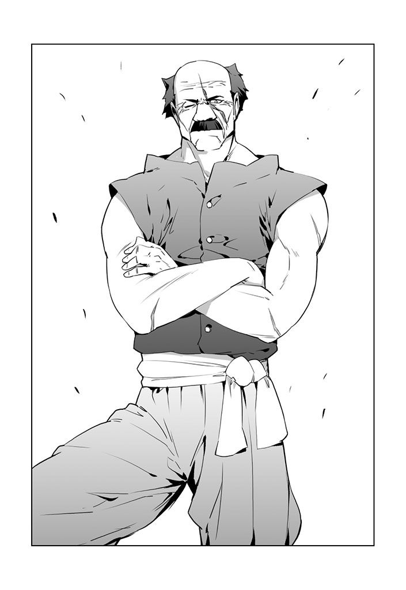
とジークが言うと、少年たちは「竜の卵！」と目を 輝 かせた。
目の前には家屋、左手には道場、そして 柵 で区切られた広場がある。
先ほど帰って行ったのは、 年 齢 が下の方の子供たちだったらしい。広場では剣を持った少年たちが 素 振 りをしている。別の場所では、木でできた人形が立っていて、少年たちの剣の 一 撃 を受け止めている。
軍を引退したオレグが、剣の道場を開いているのだった。
一歩 踏 み入ったその家は、人と物が多い印象だった。形のそろっていない 椅 子 がたくさん並んでおり、雑然としている。しかし 掃 除 が行き届いており、雰囲気が良かった。
中にもまた、子供たちがたくさんいた。口いっぱいにパイをほおばった赤毛の男の子が涙目の 黒 髪 の少年に追いかけられていたり、テーブルの上で 腕 相撲 をしている少年たちがいたり、しっちゃかめっちゃかだった。
女の子はいないのかしら、とアニスはきょろきょろした。すると、
「あーっ、ジーク発見っ！ なにあんた帰ってくるの早いじゃない」
と叫ぶやいなや、階段の上から現れた 影 が目の前に下りてきたかと思うと、 柔 らかな動作でジークの腕を取り、関節を 締 め上げていた。
「いでえぇぇぇーっ！」
とジークが悲鳴を上げるのが遅れるほどの、 一 瞬 の出来事だった。
「おじいちゃん、ジークまた何かしたの？」
「何もしとらん。今はまだ」
あっそう、つまんない。とジークを解放したのは、ジークの三番目の姉、ディーナだった。きらきらした目の、快活そうな少女である。 驚 いたアニスは挨拶どころではなく、ジークへの手痛い 歓 迎 を見守ることしかできなかった。 無 惨 な目にあったジークは、「ノアを見てくるっ」と家を飛び出して行った。
「もうすぐ他の孫も帰ってくる、挨拶はそのときにしよう」
「お客様っ？」
オレグ老の腕を取り、ディーナはアニスたちを見た。その視線はアニスとビアンカをあっさり通り過ぎ、シドのところで止まった。ディーナは目を見開いたまま止まっている。シドはそんな眼差しなどどこ 吹 く風とばかりに、オレグに「とりあえずこいつらを部屋に案内してくれ」と言った。
「なんだかものすごくたくさんの人がいたわね。どの人が家族で、どの人がよその人なのか、よく分からなかったわ」
「たくさんの人が下宿してるの。裏に、下宿してる人たちが 寝 起 きしてる建物があるのよ。家族の人たちは、 母 屋 ね。ジークのおじいさまと、お母様と、お姉様が三人。さっきのディーナさんは、三番目のお姉様。お父様は軍の 偉 い人みたいだけど、今は遠いところにいるみたいよ。私が前来たときにも、見かけなかったわ」
ビアンカが簡単に説明する。
二人が通された部屋には、ベッドが四つ並んでいた。色や 柄 は 不 揃 いだが、清潔に整えられた 布 団 である。アニスはポーラの教会を思い出した。あの 頃 も、たくさんの同年代の子供たちと 一 緒 に寝起きしたものだ。
しかし今回はビアンカに、マリエルが一緒である。わくわくしすぎないよう、アニスは己を 戒 めたが、しかしそれは無理というものだった。
「......でも、マリエルってお城育ちよね。小さな部屋でも、 大 丈 夫 かなあ？」
ビアンカの言葉に、アニスはうーん、と首をかしげた。
「もしかしたら、慣れてなくて 戸 惑 うかも知れないわね。でも、みんなと一緒に 寝 るのってとても楽しいわよ！ きっと大丈夫よ」
「そうね、マリエルだったら、文句なんて言わないわよね。ロッテだったらきっと、『こんな小さな部屋じゃ 窒 息 してしまいますわ！』なーんて言いそうだけど」
ビアンカによるロッテの物まねは結構似ていた。二人は笑いながら持ってきたものをベッドの上に広げた。
アニスは、ビアンカのおみやげの色っぽいワンピースを持ってきていた。
「それ、持ってきたの？」
「マリエルが見たいって言ってたの、日記で。もしかしたらこれ、マリエルだったら着こなせるかもしれないわ。そのときは 譲 っても、気を悪くしない？」
「もちろんいいけど......マリエルには、合わない気が......」
「アニス様、我が輩のことを忘れてません？」
突 然 クールデール卿がぽとりとベッドの上に落ちてきた。
「きゃあ！ 驚いた、クーちゃん、どこにいたの」
白竜はするすると布団の上を 滑 り、アニスのそばに寄っていく。二度と離れない 覚 悟 できゅっと腕に巻き付く。
「なにやら我が輩、非常にイヤな予感がするのです」
「そうなの？ どうして？ 私は楽しい予感で一 杯 だけどなあ」
「髭がぴくぴくするのです。そういうときは、 大 抵 イヤなことが起こるのです」
アニスは首をかしげた。
二人が連れだって階段を下りていくと、 途 中 で出会った子供たちに 団 欒 部屋に連れてこられた。大きな 円 卓 にいくつか椅子が並んでいる。客を 迎 える場所だが、この家の気質か、 堅 苦 しさの感じられない部屋だった。
オレグがシドに家族を 紹 介 している最中だった。二人は慌ててシドの後ろに立った。ビアンカはジークの姿を捜したが、まだノアのところにいるのか、不在だった。
「シド様。お 噂 はかねがね 伺 っております。緋色の女神軍、副団長をつとめております、エリンです」
と微笑むのは、ジークの 長 姉 エリンだった。
先日の古城における戦いで、 牙狼傭兵団 の面々を 捕 らえたのはエリン率いる緋色の女神軍だった。三下たちを捕らえて 縄 を 掛 ける作業は 完 璧 に 成 し 遂 げられたため、 逃 亡 できた傭兵はいなかったらしい......ただ一人をのぞいて。
アニスは目をぱちぱちさせた。エリンはそんなアニスに気づくと、にっこりと微笑んだ。 凛 として勇ましい雰囲気を 漂 わせているが、微笑むと非常に 優 しげに見えた。
ジークからはひどい噂をきいているが、ジークが話すような 猛 烈 な女性にはとても見えない。男性のような軍装姿ではあるが、それによって逆に女性らしさが 際 だっている。戦女神のような 風 貌 をした女性だった。
「同じく緋色の女神軍、ユーリです。 魔 導 師 様」
次女ユーリは、まっすぐに 伸 ばされた美しい黒髪が印象的な美女だった。口元にたたえている 微 笑 が 謎 めいていて、エリンが 陽 の美だとしたらこちらは 陰 の美だった。
しみ一つない白い 肌 に、くっきりと 描 かれたような 瞳 が不思議な色をたたえている。 占 星 術 師ってこんな感じかしら、とアニスは 密 かに考えた。 水 晶 や、カードがとても似合いそうだ。
「で、私がディーナよ。さっき自己 紹 介 は終わったけど！」
と、人なつっこい 笑 みを 浮 かべながらシドの腕を取ったのは、三女ディーナだった。どこか少年っぽさのただよう、明るい笑顔が印象的な少女である。ディーナはシドの腕にきゅっと 抱 きついたので、エリンとユーリの目が丸くなった。
「ね、かたっくるしいのはそろそろ終わりにして、晩ご飯にしない？ うちのお母さんの作るパイって、絶品なのよ。私は 林 檎 のパイが好きなんだけど、シド君はなにが好き？」
とぐいぐい引っ張っていく。
隣の部屋からは 美 味 しそうな 匂 いが届いている。夕食の準備が進んでいるのだろう。
「こら、ディーナ。はしたない」
オレグがたしなめるが、ディーナはいっこうに気にする様子もない。腕を取られたままシドがアニスたちに、
「挨拶」
と命じる。アニスは 慌 ててオレグと三姉妹に向き直って背筋を伸ばした。ビアンカも後に続く。ビアンカはこの前来たときにはきちんと自己紹介ができなかったため、今回はきっちり名を名乗るわ！ と密かに決意していた。
アニスはかちこちになって、
「アニスです！」
と叫んだ。頭の中では 絢 爛 豪 華 な自己紹介の文句をいくらでも思いつくのに、いざとなるとそんな言葉しか出てこなかった。そしてそれはビアンカも同様で、
「ビアンカです！」
と儚くも短い自己紹介を遂げたのだった。
ディーナはシドに話しかけるのに夢中でこちらを見ていないが、エリンとユーリは優しい表情で二人を見守っている。
「いつもジークがお世話になっています。あの子、 筆 舌 に 尽 くしがたいほど 馬 鹿 だから、きっとご 迷 惑 をかけていると思うのだけど......」
と、言われている途中に現れたのがジークだった。 髪 はぼさぼさと乱れており、やや 疲 れた感じがする。ジークは部屋の中の面々を 眺 めると、
「なんだ、自己紹介してるのか。独裁の姉一、冷血の姉二、乱暴な姉三で十分だよな。 趣 味 は弟イジメですっと」
と 和 やかな雰囲気をこっぱみじんにする 台詞 を放った。
アニスとビアンカは空気が帯電するのを実感することができた。
エリンが 口 の 端 に笑みをたたえ、髪をかき上げる。
「あらジーク。相変わらずの 間 抜 け面。頭の血の 巡 りが悪そうで、いつも可哀想になってくるわね。で、今回はどうして帰ってきたの？」
言葉を受け止めたのはすぐそばにいるユーリだった。
「そういえば姉様、最近、 普 通 ならば落第することなど絶対にありえない軍学校で、こともあろうに放校されるところだった愚かで情けない大馬鹿者の話を小耳に 挟 んだのですが、その話はご存じですか？」
あわわわ、と腕を 振 って会話を打ち切ろうとするジークを完璧に無視し、エリンはわざとらしく右手で口を 押 さえ、痛ましげな表情を作った。
「え？ まさか、実在するの？ そんな馬鹿が。まあ、それほどまでに輝かしい馬鹿がこの世に存在したのねえ。どんな顔をしているのか、じっくり見てやりたいわね」
二人の姉はにこにこ微笑みながらジークに視線をやる。
連 携 で 畳 みかけられたジークが言い返す言葉もなく 沈 黙 している。何を言っても 恥 と馬鹿の 上 塗 りだった。そして姉たちは手ぐすね引いてジークの言葉を待っている。もちろん、 叩 きのめし否定しつくし罵倒するためだ。ビアンカが「なんていう 墓 穴 」と、おののいている。
そのとき天使の呼び声のように、 鈴 が鳴る音がした。
ディーナはけらけら笑いつつ、
「母さんが呼んでるわ。食卓に行きましょっ」
とシドの腕を引いていった。
ジークの家の食卓は、中央にどんと大皿が置かれていた。 載 っているのは 揚 げたてのうまそうな 香 りを放つ、 鶏 の 唐 揚 げである。揚げ 物 に包み焼き、ミートパイに 炒 め物、と 半 端 な量ではない。ジークの家では、とにかく肉料理が中心であるらしい。大皿にてんこもりのおかずが載っている。どれもこれもできたてで、非常に美味しそうだった。
「さぁ、好きなだけ食べて 頂 戴 ！」
と大 盆 に鶏の丸焼きを載せて運んできた女性は、ジークの母、アンナだった。
アンナは意外なほど 小 柄 で、年よりも若く見えた。一日中 洗 濯 、料理、掃除と休むことなくかけずり回っているので、 彼 女 が止まっているのを見るものはいないという。まるで少女のようなあどけなさすら感じさせる顔立ちだが、その中身は 豪 快 そのもので、 細 腕 に家族と 居 候 と近所の子供たちの 面 倒 を 抱 えているらしい。
「好きなものはさっさと食べないと、うちでは食いっぱぐれるからね！」
とアニスとビアンカの肩を叩いて行ってしまった。
それからの食卓の有様は、さながら 嵐 だった。食卓には、居候だという青年たち、少年たちが一緒に座っている。彼らを合わせ、ジークの一家は 皆 いずれもかなりの健啖家であるようだった。食べる量も速さもすさまじく、アニスからしてみればフォークを伸ばそうとしたら 狙 ったおかずが消えている有様だった。
切り分けられた鶏も、あっという間に姿を消していく。
「えへへ。シド君の分取ってきてあげたからね」
とシドはかいがいしくディーナが面倒を見ている。お皿の上には湯気の立つエビが 何 匹 も載っている。
オレグはほとんど動いていないように見えるが狙ったおかずは 逃 さないし、エリンも同様だった。上品そうに見えるユーリも戸惑うようなことは 一 切 なく、手の動きが的確で素早い。
のんびり構えていると、本当におかずが口に入らない。アニスは死ぬ気で 獲 得 したパンを食べているが、ビアンカは「あ、ああ」とフォークを手にしたまま絶望的なうめきをもらしている。
「馬鹿だな、まだ食べてないのかビアンカ」
「ジーク......なんなのこれ、戦争っ？」
「そうだぜ。負けた 奴 は空腹で寝ることになる。敵の手にナイフを 突 き 刺 してでも、 欲 しいおかずは守りきれ......って 俺 の手を刺してどうする！」
「だって、だって全然食べられないんだもん！」
涙 目のビアンカにジークが唐揚げをとってやる。
「あっ......でもこれをビアンカが食うってのは、もしかしたら共食いにあたるんじゃないか？ ほら、お前アヒルだし......やめといた方が」
「ううううーっ」
真剣に 恨 みがましい目で睨まれたジークが、皿を差し出す。
パンを食べてから次の食べ物を口にしていないアニスは、ぼんやりと 食 卓 を眺めた。すでに手の届く 範 囲 にはおかずは存在していない。
ふとシドを見やると、いつもの 愛 想 のない顔で、ディーナのもてなしを受けている。いやがってるような、そんなにいやがってないような、 微 妙 なところだった。しかしシドが迷惑であると感じたならば、相手が友人の孫だろうが、命の恩人だろうが、 残 酷 なまでに明快な断定口調でそう言うに決まっている。
言わないということは、つまり迷惑ではないということなのだ。
「あら、どうして 怒 っているの？」
投げかけられた言葉に、アニスは視線をあげた。エリンがお皿を持って、そばに立っている。お皿の上には、スパイスのきいた鶏の揚げ物や、エビのサラダ、魚の包み焼きなど、美味しそうなおかずがたっぷり並べられている。それだけではなく、今日は三つしか並んでいなかったらしい、ジーク母得意料理の林檎パイが 添 えられている。競争の中の競争に 勝 ち 抜 いた 猛 者 しか口にできない 逸 品 だった。
エリンはアニスの前にその勝者の皿を置いた。
「お食べなさいな。足りなければ、もっと持ってきてあげるわ」
「あ......あの、ありがとうございます」
アニスのお礼に笑みでこたえると、エリンは席に戻っていった。おかずを口にしたアニスは感動の余り目を輝かせた。美味しい。自家製パンもかなり美味しかったが、おかずもものすごく美味しかった。代理公の城で 厨 房 を任されているニウラに並ぶ 腕 前 ではないだろうか。もちろん貴族の食卓に並ぶような高級な料理というわけではないのだが、当たり前の具材を絶品に仕立て上げている。感激のあまり、フォークの勢いが止まらない。
その様子を遠い席からエリンが楽しそうに見ていた。
「もうすぐ、お祭りがあるのよ。シド君、知ってる？ 紅 薔 薇 の 王 妃 といわれたラウラ・ラッソの花祭りなの。私、シド君と一緒に行きたいなぁ」
と、ディーナの声がきこえる。お祭り、とアニスはビアンカと目配せしあった。
紅薔薇の王妃の花祭り、と言う言葉が素敵だ。これは絶対に行かなければならない。
大丈夫かしら、とアニスが目で問うと、ビアンカは、作戦を練るのよ！ と目で答えた。
そうこうしているうちに、ディーナの 熱 烈 さにたまりかねたシドがとうとう、
「いい加減にしろ、パンくらい自分で食べられる。祭りには興味がない。行きたければ別の奴を 誘 え！」
と 舌 鋒 をふるいだした。しかしディーナは全くへこたれなかった。それどころか、
「ええーっ、そんなあ。行こうよ、絶対楽しいよ！」
と再び 突 撃 を開始した。
アニスたちが食事を終えて席を立つときにも、ディーナの 攻 勢 は続いていた。
部屋を出て行く前にアニスはエリンにお礼を言おうとしたが、エリンは 弟 子 の一人である青年と話をしていた。椅子に座り足を組んでいるエリンのそばに立つと、男はまるで側仕え、女神の家来のように見えた。
「一緒に祭りに行って欲しいんだ......その、二人で」
「無理」
と一言ではねつけているが、エリンの 苛 々 した空気がこちらまで伝わってくるようだった。迷惑そうなエリンに構わず、男は誘いの言葉を 繰 り 返 している。
「今年警備の任務につくのは、緋色の女神軍じゃないんだろ？ だったら少しくらい時間をくれても......」
「マルス。私はね、この前あんたの母親にいきなり 怒 鳴 られたのよ。 息子 に手を出すなって。出してないといくら言っても聞いてくださらなかったわね。お母様、黒 咳 病だって話を聞いたけれど、あまり心配をかけない方がいいんじゃないかしら？」
「黒咳病なんかじゃない！ 母は単に 風 邪 を引いただけだよ。俺だって毎日看病なんてしてられない、たまには気晴らしがしたいじゃないか。なあ、エリン......」
「ごめんなさいね、その日は私、風邪を引く予定なの」
二人の会話は終わりそうにない上、お礼を言うために割り込むこともはばかられた。
アニスはお礼は後で言うことにし、ビアンカとともに部屋を出た。出て行く前にシドとディーナに視線をやると、シドが 機 嫌 の悪い顔でアニスを見送っていた。なんとなく、手を振ってみたアニスだった。
なにやらアニスは、エリンに猛烈に気に入られたらしかった。
「私のことは、エリンと呼んでちょうだい」
と言いながらエリンはアニスをぎゅっと抱きしめた。アニスは腕の中で目を丸くしていた。
驚いたのはアニスだけではなく、周囲も同様だった。
「趣味に文句をつける気はありませんが、お客様が驚かれてますわ、姉様」
ユーリがたしなめる。エリンはアニスから腕を放すことができないまま、
「いや、 違 う。ごめんなさいね、なんだかあなたを見ているとつい、抱きしめたくなって......なにかしら、思わず 貢 ぎたくなるというか、忠誠を 誓 いたくなるというか、見てるだけで幸せになれるというか......なんなのかしらこの気持ち」
周囲が戸惑うのを置いてけぼりにして、的確に 指 摘 したのはユーリだ。
「 恋 では？」
「え。そ、そうなの？ そうなのかしら。恋って。恋なのこれは？」
エリン自身すら 己 の気持ちに戸惑っているようだった。
そんな彼女の状態について、解説をしたのはクールデール卿だった。
「あの女性、竜が宿ってますな。時折いるのです、生まれついて竜の 魂 を宿した人間が。魔導師とはちょっと違います。魔導師は違う世界にいる竜から力を借りるのですが、彼らの身体には竜の魂が宿っています。魂が 溶 け 合 って、ひとつになっているのです。別に人間として生きていくのになんの支障もないのですがね。で、アニス様は 全 ての竜にモッテモテの存在です。そういう人間の中の竜の魂まで 魅 了 してしまうわけですな......むしろ竜そのものよりもああいった人間の方が、強い 影 響 を受けるようです」
「竜だって？ なんだよそれ。竜だっつーのに全然 有 り 難 みもなにもない。ていうかエリン姉が 剣 持ったらすげえ強さをみせるのって、まさかそれが関連してるのか？」
ジークがひそひそ声で文句をつけた。
「竜が宿った人間が、異能を見せることもしばしばです。多くは身体能力が人間 離 れします。非常に早く駆けたり、力持ちだったり。耳が良かったり目が良かったりカンが鋭かったり、歯が鋭かったり」
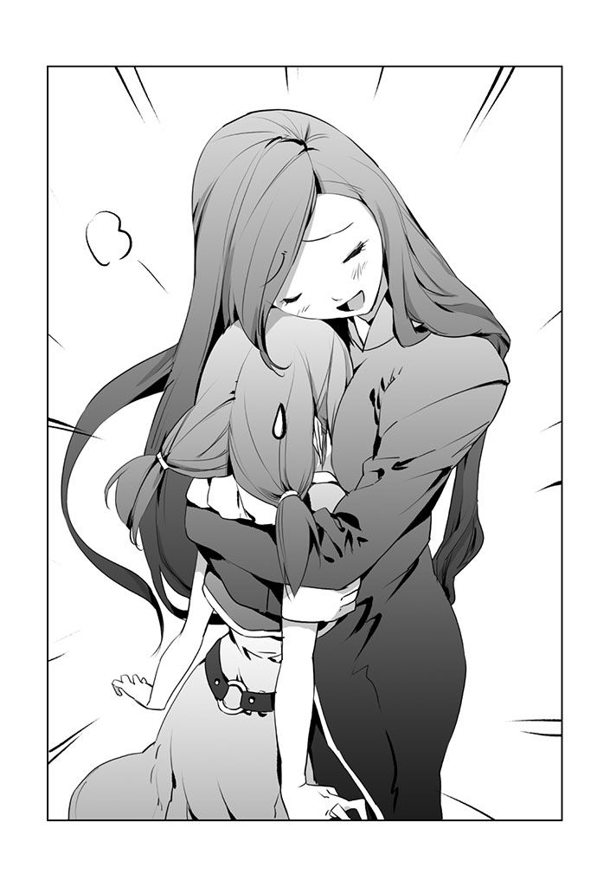
顔をしかめていたジークだったが、不意に己の両手を見つめた。
「お、俺の中にはいないかな？ 竜」
「お前の中に宿るのなんて、ミミズで十分だ」
ばっさりと一言で 斬 って 捨 てられたジークは、胸を押さえて 座 り込んだのだった。
エリンはアニスのそばにいたがったのだが、ユーリが「仕事です」と彼女を連れて行ってしまった。そしてユーリは外に出て行く前に、アニスの 肩 に乗っているクールデール卿をそっとつかみ、
「 可愛 い子ね。借りてもいいかしら？」
と 尋 ねた。氷の女神とも呼ばれているユーリの願いを断ることができる者はいないとされている。そして彼女の 容 貌 に、水色の目をした白竜は、とてもよく似合った。アニスは親切に「はい！」と答え、クールデール卿は「そ、そ、そんなァァ～、アニスしゃま～」と 語 尾 を伸ばしながら連れ去られていったのだった。
「ジーク、花祭りってどんなのなの？」
ジークの家の 厩 舎 はかなり大きなものだった。
厩舎の中には 幾 匹 かの竜がいる。いずれもノアに比べて小さな馬竜であるが、きめ細かく手入れされているらしく皆健康そうで、のほほんとしていた。
ノアもまた厩舎の 奥 で、のんびり寝そべっていた。少年たちが競争しながら 汚 れた 藁 を外に出している。ジークはノアの面倒は俺が見ると言い張り、藁をかきだす道具を手にしている。
ノアの 卵 はすみっこに置かれている。
「女の好きそうな祭りだなあ。紅薔薇の王妃ってのがおせっかいな女で、好きな奴に告白できない 侍 女 のために祭りを 開 催 したらしい。道を花で 飾 ったり、お面を 被 ったり、男女で 踊 ったりするな。俺は興味ないけど......んでも女たちはみんな本気で 着 飾 って参加するみたいだぜ」
それをきいたビアンカがきらりと目を輝かせた。
「それはもう、本気の本気で準備しなくっちゃね。アニスちゃん、ひとまずシドの 財 布 を手に入れないと。それから外出許可。ジーク、買い物に行きたいんだけど、洋服とか売ってるお店まで案内してくれる？」
「俺は学校に行......」
そのとき厩舎の中を掃除していた少年が、
「ジークさーん。すんげぇ 豪 華 な竜車がきたよー。あれ貴族？ 車に 彫 刻 ついてんの！」
と大声で知らせてくれた。
竜車から降り立ったマリエルは、視線をさまよわせ、すぐにアニスとビアンカを見つけた。三人はきゃーっと手を取り合うと、無事の再会を喜び合った。
竜車を操縦してきたのは代理公の使用人であり、彼は竜車からマリエルを降ろした次に、小さな少女を降ろした。
それは招待されていなかったはずの、マリエルの妹ロッテだった。
「ごめんなさい、来ると言って聞かなくて......。父がシド様に 連 絡 しようとしたんだけど、すれ違ってしまったみたいで」
「わたくし、口をきかずにおとなしくしていますわ。人形みたいに。ですから、どうか一緒にいさせてもらえませんこと？」
ロッテは 殊 勝 そうにそう口にした。竜車の中で、マリエルに命じられてお願いの言葉を練習していたのだろう。アニスはビアンカを見、ビアンカはジークを見た。ジークは頭をかきながら、
「別に構わないと思うけど......」
と答えた。
案内されながら、ロッテは、
「私、 庶 民 の家に来るなんて、初めて」
などと 呟 いている。特に悪気のない、 純 粋 な驚きから来る言葉だった。ジークは苦笑いしつつ、
「ほら、あれが庶民の家の応接間だ。 狭 すぎて、三人しか入れない」
などと説明している。
「まあっ、そんな。もしもっとたくさんのお客様が来たらどうしますの？」
「庭だよ。順番待ちをしてもらうんだ。腹が減ったら畑の野菜をとって、食べても良いことになってる」
「まああ......不便ですけど、ちょっと 面 白 いですわね」
ロッテは 真 剣 に信じて話を聞いている。ほらあっちが庶民の家の 風 呂 だぜ、などとジークは説明を続ける。
「やっぱり 図 々 しかったかしら......申し訳ないわ。ごめんなさい、やっぱり置いてきたら良かったわね」
アニスとビアンカの微妙な空気を感じ取ったのだろう、マリエルが小声で 謝 った。
「ううん、その点は心配しなくても平気よ。ジークの家にはいっぱい近所の子供たちがいるし、ロッテ一人増えたところで全然構わないと思うわ」
ビアンカがひそひそ声で説明する。
「......でも、そういうのとは違う問題があったりして......」
と開けられた 扉 の先に、まさにアニスとビアンカが 憂 慮 する事態があった。
ディーナは今日も朝からシドにべったり張り付いていた。都を案内すると言われたシドはきっぱり断っている。しかしディーナは 無 理 矢 理 シドの 腕 を取り、美味しいお 菓 子 を 奢 るから、と誘っていた。
マリエルはアニスとビアンカの心配していたことを全て 悟 った。説明など一言も不要であり、この情景さえあれば十分だった。
アニスが、ビアンカが、マリエルが視線をやる。
ロッテは 笑 顔 のまま固まっていた。それまで、
「シド様はどこ？ 私、シド様に一番にお会いしたかったのよ。でも、髪の 毛 を 綺 麗 に巻いていたのに、すっかり竜車のせいで 崩 れちゃったから......」
などと話していたのに、ぴったりと舌の動きが止まっている。そしてロッテを見たディーナが、
「あっれぇ？ 珍 しいわね、うちに小さい女の子がいるなんて」
と、ロッテの 淑 女 としての自尊心をはなはだ傷つける一言を放った。
「ちっ......小さくなんてありませんわーっ」
ロッテは 爆 発 した。アニスたちは仲良く耳を 塞 いでいる。
「なんですのシド様！ どうしてですのシド様！ その庶民の 小 娘 はなんなんですの──っ！ 小娘というか大 娘 ですけどっ」
ディーナはぎょっとしてロッテが涙目で言いつのるのを見ていたが、すぐに事態を 把 握 した。 獲 物 を見つけた 猫 のようにきらきらと目を輝かせる。この家に生まれた女たちはいずれも 虐 められる側ではなく、虐める側の人間だった。
「あれぇ、小さな子がなにか言ってるけどシド君、もしかして知り合い？ 恋 人 じゃないわよね、ま・さ・かっ。そっか、近所の幼児かな？」
「幼児ですってぇぇぇっ？」
ロッテの 怒 りは最高潮に達した。
「いいからシド様から離れなさいっ、じょ、女性から 殿 方 の腕を取るなんて、ふしだらにもほどがありますわっ。うらやましくなんてないものっ、いいからその手を 離 しなさいよ！ そうしなければ代理公の名において 訴 訟 を起こしてやるわ。教会から 異 端 審 問 官 がやってきて、あんたなんて 拷 問 されてしまうんだからぁーっ」
「危険なことを言わないの」
ため息をつきながらマリエルがロッテの頭をはたいた。ロッテは自尊心と身体に 衝 撃 を受け、ぶわっと涙を浮かべた。敵に涙を見せるのが 悔 しかったのか、くるりと振り返ってマリエルに抱きつき、おなかに顔を押しつけた。マリエルはその頭を 撫 でつつ、シドに向き直った。
「シド様、お久しぶりです。今日は図々しいお願いだったにもかかわらず、 我 が 儘 を聞いていただいてありがとうございます。その、申し訳ありません。勝手にロッテも連れてきてしまったのですが......」
「ああ、久しぶりだなマリエル、ロッテ」
シドは何気なくディーナの腕を振り 払 った。マリエルの 淡 々 とした口調には、部屋の中の 浮 ついた空気を 一 掃 するだけの力があった。
「ご主人に 是 非 、ご 挨 拶 をさせていただきたいのですが。父から、お礼の品としておみやげも持参しております」
代理公の使用人は、竜車から苦労して大きな箱を部屋まで運び込んでいた。中には代理公からの心づくしの品々が 詰 め込まれていた。肉の 塊 やチーズ、外国の珍しいお茶、数本の 酒 瓶 、お菓子や他にもたくさん入っている。
オレグ老はマリエルの 丁 寧 な挨拶を喜び、お 土産 の酒瓶を見て目を 輝 かせた。そしてマリエルを連れてきたシドの腕をつかんでいるディーナを見、 渋 面 をつくった。
「なにを堂々とさぼっておるんだ。さっさと姉たちのところに行け！」
ディーナは「はーい」としぶしぶ 頷 き、仕事に出かけた姉たちを追いかけて外出した。
ジークの姉たちはいずれも軍人である。本来ならば軍の宿舎で 寝 起 きしなければならないのだが、彼女たちは許可を取り、実家に帰ってきていた。
王国にはおよそ二十の軍団がある。
緋 色 の 女 神 軍は主に王都の防衛任務に 就 いており、ほとんど都を離れることはない。もし他国との戦争になるようなことがあればその限りではないだろうが、 双 子 王戦争末期に 隣 国 からのちょっかいをはねつけて以来、国境では火遊びすら起こっていない。
副団長であるエリンの上に、老女でありながら鉄の 鎧 を身に 纏 い、大 剣 でもって丸太をたたき割ると 恐 れられている 女 傑 が君臨している。彼女は元々オレグの二番弟子だった。彼女が軍団長の座を 引 き 継 いでから、女性の任官率が高まった。
ユーリが弓兵たちのまとめ役をしており、ディーナは気ままな 傭 兵 のような立場で姉たちを手伝っている。本来ならとっくの昔に出勤しなければならない立場なのだった。
マリエルも挨拶を終えると、淡々とした態度で部屋を出て行った。
青いスカートが扉の向こうに消えるのを、老人はしばらく見守っていた。
「すまんな、シド。あれは少々 甘 やかしすぎたらしい。怒ってもなかなか言うことをきかんのだ、我が儘でな。なにやらお前が気に入ったようだが......もしお前が望むなら、 嫁 にやっても構わないが？」
そう言われたシドの表情を見てオレグは 吹 きだし、声を上げて笑った。
「女っ気のないお前のことだ、たまにはよかろう？」
「女というより、大きな犬に 懐 かれたようにしか思えないんだが......」
的確な例えにオレグは歯を見せて笑った。そして代理公からの土産の酒瓶をひとつ取ると、こりゃあお宝だと呟いて 素 手 で 蓋 を開けた。常人ならば専用の道具が必要である。
「すまん。いや、息子の嫁は家のことが得意なんだが、なぜか 孫 娘 たちは料理のひとつもできんのが 揃 っていてな。俺の血が悪かったのかな」
オレグの部屋には 華 美 な要素が全くない。軍にあって兵たちに指令を出していた 頃 の司令室のように、必要最小限のものだけが揃っている。もちろん酒を注ぎ込む 器 は、老人には必要不可欠なものだった。無造作にシドの分も注ぎ、器を 手 渡 す。
「お前は相変わらず、あのときのままだなあ。 猊 下 の命令だといって、子供が俺の司令室に来たときは、何をふざけたことをとはらわたが 煮 えくりかえったものだが」
オレグは花の 匂 いをかぐように酒の香りをかいだ。
「その子供が三ツ目王の兵どもを一掃したときは、心底 驚 いたよ。いまだにはっきりと思い出せる......」
「昔の話はするな。お前も年を取ったな、オレグ」
「年を取ったら昔のことばかりはっきりと思い出せるんだ。しかしお前があのときのままなのが悪いぞ、シド。お前に、ポーラ......懐かしいな。ポーラは元気か？」
「ああ......たぶんな。俺に、赤毛の娘を預けたのはあいつだ」
「ほう。お前に子供を押しつけるとは、さすが、相変わらずやるじゃないか、ポーラは。......いや、お前、 誰 と誰の子だ。 年 齢 がおかしくないか......うむ？」
「一言では説明できない事情を抱えた娘だ」
「では言葉を尽くして説明してもらおうじゃないか」
オレグの笑みはなんとも人好きのするもので、シドすらつられてかすかな笑みを浮かべた。しかし、
「俺の父親が」
その一言で、オレグの笑みが消える。
「 滅 ぼそうとしていた、 召 喚 者の血筋。その一族の娘だ。本人はなにも覚えていないが......昔、俺が 蛇 どもの残党を捜していたとき、北方の森の中で殺されそうになっていたところを助けた。それをポーラに預けていたんだが、俺が引き取ることになった」
「確かにややこしい事情のようだ。しかし、あの赤毛の娘が？ なんだかのんびりした娘だったが...... 金 髪 の娘の 間 違 いじゃないか」
「いや、間違いじゃない。あいつには、狙われるだけの力がある。オレグ。信じるか？ 今また召喚者 狩 りが行われている。 牙狼傭兵団 の名を名乗ってな」
オレグはシドを見つめた。そして迷いつつ、手元の器の中の 琥 珀 色 の液体を飲み干した。そして空の器を 卓 に置き、まるで代理公 推 薦 の高級酒が 不 味 かったかのように顔をしかめた。
「ビルダの古城の件、報告はきいていた。しかし、奴らは本物なのか？ 狂 信 者 どもが、また活動を始めたのか」
「ああ、本物だ」
シドは断言した。
「かつての勢力は失っているにせよ......な。少し前、組織の人間を 捕 らえた。ユージェスの元で 尋 問 を受けているが、自白しない。殺されても 本 拠 地 は教えない 覚 悟 らしい。まあ、三下の持っている情報の質など、たかが知れているがな」
老人は無言でシドの話を聞いている。
「ユージェスが調べた。奴らの長の名前は、オゾ・ガルドレッド。通り名は、血まみれオゾと言うらしい。刀身の赤い剣を使う、 薄 気 味 悪 い 髭 面 の男で、 魔 導 師 殺しとも呼ばれているようだ」
「たかが傭兵団の 首 魁 ごときに、大げさな名をつけおって。相変わらず、おかしな集団だ。俺はいまだに奴らのことが理解できん。この剣で処断することを気味悪く思ったのは、あれが初めてだった。......奴らが復活したと。そして狙われているのは、あの娘だと？」
「いや、まだアニスが召喚者だと知られたわけではない。しかし時間の問題かも知れない。打てる手は全て打っておきたいんだ。オレグ、俺はセイ・ノーマンを倒すことにした」
オレグはその名前も知っていた。悪い思い出でもあるようで、髭をしごきながら 唸 った。
「セイ・ノーマン......懐かしい名前だが、まだ生きていたのか」
「ああ。奴が何を考えているか知れないが......アニスのことも、知っている。いつどのように最悪のことをしでかすか分からない。それに個人的な恨みも積み重なっているしな」
「しかしお前、ギルドにセイ・ノーマンと 関 わることを止められているとか言ってなかったか」
「知るか。ギルドが敵に回ろうが、 巫 女 姫 が 襲 ってこようが、俺は決めた。奴がいる限り、安心できない。ハエにたかられるのも 飽 きたんだよ。だから」
シドは 椅 子 に深く 腰 掛 けたまま、足を組んだ。
「手伝ってくれ。俺はまだ、お前以上の 剣 士 を知らない」
「む......。もう、昔の俺ではないぞ」
「その分経験を積んでいる。ジークも腕は確かだが、場数が少ない。それに、あいつを連れて行くわけにはいかないし......な」
「悲しむ女性がいるわけじゃなし、と言いたいところだが」
オレグは 鋭 い眼光で刺すようにシドを見た。この少年は、相変わらずの 傲 岸 不 遜 だ。ものを 頼 む態度ではない。しかしそれが、
「 愉 快 だな。俺を選んでくれて礼を言うよ、シド。じゃあ行くか」
まるで近所に買い物に行くような気軽さで、オレグは立ち上がった。高級酒のことも忘れたように置きっぱなしである。
シドは苦笑した。 執 着 しないオレグの生き様が 垣 間 見 えるふるまいだった。
「悪いが、オレグ。まだ待って欲しい。......もう少しだけ、家族ごっこをさせてくれ」
「シド、なんだか顔色が悪いのね」
アニスに言われ、シドは「そうか？」と右手で額を押さえた。
「オレグに酒を飲まされたから、そのせいかもな」
「まあシド、お酒を飲んだの？ ............」
一 般 的 にアニスくらいの年齢では飲酒は望ましくないとされている。教会育ちのアニスからしたら飲酒は不良のすることだった。祭りで 振 る 舞 われる酒などはその限りではなかったが、「子供には 相応 しくありません」と許してもらえなかった。
その「何」には相応しくない、と言おうとしてアニスはぴったりと口の動きを止めた。シドは飲酒をしても構わないのか、どうか。見かけからしたらもちろん相応しくないが、中身は本人いわく何倍も年を取っているのだ、構わないかも知れない。しかし。
「お前、下らないことで 悩 んでるだろう？」
シドは何もかもを 見 抜 いているらしく、アニスの髪を引っ張った。
「痛いったら！ いいわ、とりあえずそのことに関してはおいておくわ。あのねシド、実はお願いがあるの」
「なんだ」
「有り金全部もらいたいの」
アニスは今度は 頬 を引っ張られる羽目に 陥 った。
「お前はものの頼み方が分からないのか？ 盗 賊 にでもなるつもりか？」
「ひがう、ひがう～」
アニスは必死にシドの手から 逃 れる。 容 赦 ない力でつかまれた頬が 伸 びてしまうのを恐れるように撫でつつ、
「えっとね、まずね、食卓でディーナさんがお話ししてたでしょ？ 紅薔薇の王妃のお祭りって。 素 敵 よね......内気な侍女のために、祭りをひらくことを考えつくなんて。とってもお 洒落 で、気の 利 いた女性だわ。花祭りというのも、しびれるわ。シドは行ってみたいと思わない？」
「思わない」
「そうかしら？ 興味がないの？ それって、とても不幸なことだと思うわ。ディーナさんがせっかく誘ってくれてたんだから、 一 緒 に行っても良いんじゃないかしら」
「..................」
すっぱいものが口の中いっぱいに広がったような顔をしたシドだったが、
「もちろん私とビアンカとマリエルも一緒に行くわ」
と言われて、目を閉じた。アニスはシドの 脱 力 について、全く関知しなかった。
「そのお祭りでは、みんな花をつかった衣装を身につけるんですって。頭にも、飾り 付 けるのよ。紅薔薇の王妃様への感謝の念をこめて、身体のどこかに赤い色をした何かを身につけるのが習わしなんですって。小さなルビーでも良いし、赤い花でも良いし、リボンでも良いの。で、今からみんなでお祭り用の衣装を買いに行きたいの！ 通りではお祭り用のお菓子も売り出されてるんですって。今からわくわくが止まらないわ、でもシド、問題はね、私、 塔 におこづかいを全部忘れてきてしまったの」
ほとんど 脇 道 にそれていたが、アニスの話が元のところに着地した。シドは 腕 組 みし、はぁ......と 雄 弁 なため息をついた。
「お前は一度、人に説明するときの話の順序を勉強しろ。まずは結論を言え！ 不必要な 妄 想 はからめるな！」
「え。でも、でも、言ったわよね？ 私」
「なにをだ」
「有り金を全部もらいたいって」
シドの 沈 黙 はかつてない絶望を溶かし込んだ深く長いものだったが、アニスはにこにこして返事を待っていた。シドは懐から布袋を取り出すと、中から 紙 幣 と 硬 貨 を抜き、アニスに手渡した。
「あ、そうだ」
「今度は何だ」
「私、お祭りに行ってもいいかしら？」
アニスはシドの顔が思いっきり渋面になるのを間近で見た。そして勝手にしろ！ と怒鳴ると、シドは行ってしまった。
「シドがまた怒ってたぁ？ いつものことじゃない、気にすることないわよアニスちゃん」
ビアンカがけらけら笑いながら片手を振る。
ジークの家から出て通りを西に進んで行くと、店の建ち並ぶ通りに出た。王都の中央通りには比すべくもない規模だったが、 田舎 町 の商店や、街道町の商店通り、あるいは怪しげな 魔 法 使 いの住む通りしか見たことのないアニスには、
「都会だわ！」
という勢いがあるように思えた。通りの大きさが違う。馬車の道が二列、人のための道が二列。西地区中央に建てられた 巨 大 な聖堂から放射状に延びる道は、とても広くまっすぐだった。歩いている人の数が違う。都の住人だけでなく、旅人もたくさん歩いている。
この西地区であれば、王都中央に比べて物価が安い。財布の中身が少々心細くても、安い木賃宿が何百もある。
マリエルもアニスと同様、興味深げにきょろきょろと視線をさまよわせている。ロッテは連れてこず、自分たちだけで買い物に来た三人だった。
「ヴェルグリアの町より、大きいわね。都会だわ」
「アニスはうちの城下町に行ったことなかったわね。そっちも結構大きいわよ。この前は旅芸人の一座が来てたわ」
「旅芸人！ 素敵な 響 きだわ。そう、私も一度旅芸人になりたいなって昔夢見たことがあるのよ。現実的に考えてみたらちょっと難しいかなって思って、 諦 めたんだけど。でも一芸を身につけて町から町へ旅をするのって素敵に思えるわ。教会でこの話をすると、あんた 馬 鹿 じゃないのって言われたんだけど」
「何を言うの。馬鹿なんかじゃないわ。私だって、貴族 令 嬢 であることから逃れて、旅に出たいと思うわ。アニスとビアンカがいればきっと楽しいわよね」
「私の変身があれば、ちょっとは 稼 げると思うわ」
三人はしばらく旅に出る計画について話し合った。しかしすぐに仮定の未来よりも今を楽しんだ方がよいと気づき、その話は保留になったのだった。
通りは前夜祭で盛り上がっているようだ。赤い花を模した 飴 がただで配られており、三人はそれをもらったのだが、甘い味のするそれを 舐 めているとまるで紅をさしたように 唇 が赤くなり、三人は 互 いの顔を見て声を上げて笑った。
そしてビアンカがお洒落そうな服屋の目星をつけ、突撃していく。カランコロンと軽い音の 鈴 が鳴り、扉の向こうにはお洒落な服がたくさんつるされていた。綺麗に着飾った若い女性が三人を見て「いらっしゃいませ！」と声を上げる。
マリエルは「完成した服が並んでいるのね？」と驚いていた。貴族であるマリエルは、 既 製 服 など見たことも聞いたこともなかった。
ビアンカがあれもこれもと選び、二人に試着をすすめる。一度着たものは買わねばならないと思っていたマリエルは、ビアンカが「これは 戻 すわね」と店員に服を返すのを見て 仰 天 したのだった。
祭り用に仕立てられた服はあちこちの店で売っていた。その基本的な形は、赤いものをあしらった、白い巻きスカートのワンピースである。各店によってリボンのあしらい方が違っていたり、スカートの 丈 が違っていたり、色々と特色が出ていて面白かった。
アニスとマリエルは、ビアンカの指示通りにくるくるとドレスからドレスに 着 替 えていく。
「アニスちゃんはこの可愛い感じのが良いと思うわ！ 色みも 髪 の色に合ってるし、ぴったり！ マリエルはこっちの丈の長いの。でも 袖 が無い形だから、ちょっと色っぽさもあるのよね。細いし背が高いから着こなせるわ」
「私とアニスだけじゃなくて、ビアンカも着てちょうだい。このドレスを着て見せて 欲 しいわ！ 普 通 の子だったら服に負けちゃうかも知れないけど、ビアンカなら、勝てるわ」
「このリボン素敵ねえ。花の形をしているの。三人で、おそろいでつけるのはどうかしら。ちょっとずつ形を変えればいけると思うの！」
楽しくきゃあきゃあ 騒 ぎつつ、三人は目当てのドレスを買った。アニス提案の、おそろいのリボンもしっかり買い上げたのだった。
この通りはとある聖女の名前を取って、アイリーン通りと名付けられているらしい。祭りのため、飾り付けがそこかしこで行われている。紅 薔 薇 を模した紙の花が柱や家屋に飾られている。
アイリーン通りの下をななめに横切る形で人工川が流れている。そのそばで 洗 濯 をしている女たちが見られた。
三人は水量が増えれば水の下に 沈 む、 沈 下 橋のそばのベンチでお菓子を食べていた。川の流れを見ながら、 木 陰 でお菓子を食べるのである。素敵な午後だった。
しかし、お菓子の 選 択 には失敗したようだった。仮装した少年が売っていたそれは「竜の卵」の形をしたお菓子で、 殻 を割って出てきた中身を必ず食べなければならないというルールだった。
「 辛 いっ！ だめこれ、口が曲がるわ」
「これ、なんだか変だわ、苦いけど 薄 味 ......」
アニスはそのお菓子をおっかなびっくり口にし、
「......甘くて 美 味 しい！」
と 叫 んだ。他の二人からずるいずるいと言われ、仲良く三人で分ける。
袋 の中につめられた小さな竜の卵の群れは、もちろん本物ではない。中身はほとんどが美味しくなかったが、三人で食べればなんでも楽しかった。
「アニスったら、これ本物の卵？ なんて言うんですもの、驚いたわ」
「だって、もしかしたらって思って」
「竜の卵は珍しいのよ。あんな風に売っているわけがないわ。それに、ノアの卵のことは簡単に話さない方が良いのよ。竜の卵が万病に効く薬だって、信じてる人は多いから。中には 盗 んででも手に入れたいって人がいるのよ」
アニスは、お菓子を売っていた少年に、ノアの卵のことを話すところだった。何気なく口を 挟 み、マリエルが止めたのだった。
「確かにマリエルの言う通りよ。魔導師の間でも竜の卵は貴重で、みんな欲しがっているわ。 魔 力 を 増 幅 させることができるって言われてるの」
「そっかあ......ありがとう二人とも。気をつけるわ。今後は気軽にノアの卵のことを口にしたりしないわ」
アニスは少し落ち込んだようだが、すぐに他の二人が話題を変えた。
「そういえばビアンカ、私もあなたの塔に行きたいわ」
「えっと！ その！ あのね、来るのは構わないんだけど、まだ無断下宿してる馬鹿犬の追い出しに成功してないのよ。この前仕事で帰った時なんて、階段から落ちてきたのよ！ 私、つぶされるところだったんだから」
二つの頭を持つ犬、ギルフォイのことはマリエルも話に聞いて知っていた。くすくすと笑いつつ「元気だったの？ その犬」と 尋 ねる。
ビアンカは 拳 を 握 った。その手の中で、竜の卵菓子がぱきりと音を立てて割れた。
「元気も元気で、むかつくったらないわ。この前、
『はばかりながら、食事が欲しい』
なんて言ってきたの。勝手に住まわれた上にエサまでたかられたんじゃ、たまったもんじゃないじゃない。もちろん文句言って断ったわ。そしたらあいつら、
『恩返しはする。しかしもう、腹が減ってたまらない。 痩 せたアヒルでも構わないから』
なんて言いやがったのよ！ もう、もうほんとに腹が立ってね。あんたたち私がアヒルだって知っててそう言うのって 怒 鳴 ったの。そしたら、
『ビアンカ 殿 は......やはりアヒルなのか、ほんとは』
『しっ、兄者。それはビアンカ殿の秘密だ。で、アヒルなんだろうかビアンカ殿』
『アヒル殿』
呼び方変えるなあぁーって怒鳴ったわ。思わず 魔 法 を 炸 裂 させちゃったわ。んでもあいつら、かわしたのよ！ ひらりと！ んで、
『ビアンカ殿の秘密が知りたいなあ』
『おっと兄者、 尾 を振りすぎだ』
なんて言うからジュリになって 腐 れ 縁 ごと魔法でたたっ切ろうとしたんだけど、失敗したの。もうどうやったらあいつら出て行くのか、分からないわよ......」
マリエルはよしよし、とビアンカの頭を撫でた。
食べ終わった三人は立ち上がった。そろそろ帰らなければならない時間だ。沈下橋の上を 渡 っていく。
アイリーン通りから一段下がったところにあるこの橋は、知る人ぞ知る場所のようだった。ほとんど誰もここまでは下りてこないようだ。
奥 には古びた聖堂がある。今では誰も出入りしていないようだが、この沈下橋は聖堂に行くために作られたものだった。ベンチは、閉じられた門のそばに置いてある。アニスが通りからめざとく見つけ、あそこでお菓子を食べようと提案したのだった。
古さといい、たたずまいといい、聖堂はアニスを 惹 きつけずにおかなかった。古い建物は、物語を感じさせる。
ふとカーテンのかけられたままの窓のところに、誰かの視線を感じた気がして、アニスはじっとそちらを見た。しかし、こんな場所に誰もいるはずはない。中はおそらくぼろぼろで、 床 も腐っているかも知れない。それほど古そうな建物だった。
窓のところに垂れ下がっているのは、大層な時を 経 てきたらしいカーテンだ。破れた布地が、 何 故 か風を受けてひらめいた。そのとき、その向こうに顔色の悪い男の顔が見えた......。
「きゃあああああっ、ふ、二人ともっ」
悲鳴を上げてアニスは二人に飛びついていった。勢いで前につんのめりそうになった二人は、アニスの泣き声を聞いて聖堂に視線をやったが、そこには 静 寂 があるばかり。アニスの言う、気味の悪い死人のような顔色の男など、見つけることはできなかった。
「気のせいじゃない？ だいたいあそこ閉めきってると思うわ。カーテンが風でひらめくなんて、ありえないわよ」
「私もなにもないと思うわ。行きましょう、アニス」
でも、と 納 得 いかないものを感じたアニスだが、ではここで聖堂を 探 索 して男がいることを証明しよう、と提案する気にはとてもなれなかった。そんなものの存在が判明しても、なにひとつ 嬉 しくない。
アニスは立ち去ろうとする二人を 慌 てて追いかけた。
三人は買い物をした荷物を順番に回していた。次に大箱を持つのはアニスだった。その中身は、大きなケーキである。アニスは 揺 らさないよう、注意深く箱を 抱 え 上 げる。
「これ、ロッテ喜んでくれるかしら」
「 今 頃 きっと、置いてけぼりにしたって 怒 ってるわね」
「でも、起こしたのに全然起きなかったんですもの。あの子が 寝 ぼすけなのが悪いのよ。二人は気にしないで」
「でも......」
ビアンカは視界が 陰 ったことに驚き、視線をあげた。
知らない男が前、そして後ろに立っていた。少し酒が入っているらしく、鼻の下を伸ばしながら三人に話しかけてくる。
「可愛いねぇ、どこから来たのかな」
前のビアンカは 酒 臭 さにうっと口を 押 さえ、後ろのマリエルは手を取られそうになる。真ん中の、大きな箱を手にしているアニスは、前を気にし後ろを気にしつつどうすればいいか 困 惑 していた。
「お兄さんたちと一緒にご飯食べようぜ。 奢 るからさ」
「酒をついでくれるだけでもいいし。 美 味 い店知ってるんだ......」
と、マリエルの手を 無 理 矢 理 取ろうとした男がふと 硬 直 した。
栗 色 の髪の娘は、大人しそうに見えた。実際声を上げることもなかった。ただ、 半 端 なく 冷 徹 な 眼 差 しで男を 睨 みつけていた。父である代理公は常にこの眼光にさらされているのに「マリエルは 無 邪 気 なところがあって」と口にできるのだから、相当 鈍 感 なのか、娘に対して夢見がちなのか、どちらかだろう。
そしてマリエルは眼光が声になったかのような冷えに冷えた口調で、
「お下がりなさい」
と命じた。不良ぶっていても、 所 詮 は都育ちのお 坊 ちゃんだったらしい。男はマリエルの言葉に 戸 惑 い、身を引いた。
魔法で解決することもないと判断したビアンカも、
「可愛いって言葉だけ受け取っておくわね～。でも私、実は」
とにやりと笑い、少しだけ間を取ると、
「男なんだ」
とジークの姿に変身した。男は目をまん丸くし、よろめいた。驚きのあまり身体の 平 衡 を失い、すぐそばの川に転落していったのだった。仲間の男はうわああーっと悲鳴を上げて、川をのぞき込む。
通りから水の流れまではかなりの高低差がある。しかし水の深さはさほど大したことがないので、大の男であればおぼれる心配はないだろう。落ちた友達を追って通りを 駆 けていく男とは反対側に、アニスたちは走ったのだった。
ジークの家の近くまで走り続けた三人は、大きな木の側でようやく足を止めた。
「 大 丈 夫 かしら、あの男......」
「あは、はは、大丈夫っ！ たぶんね」
実はマリエルの身を守るために、竜車で共にやってきた護衛がついてきていたのだが、アニスは気がついていなかった。ビアンカは気づいていたが、特に 彼 の手を借りようとは思わなかった。
「大丈夫だったかしら......ケーキ。揺れちゃったと思うの。 崩 れてたらどうしよう」
アニスが手にしていた箱を持ち上げ、 眉 根 を寄せる。しかし心配してもケーキが元に戻るわけではない。三人はジークの家に戻ることにした。
「あうう、うう、うう、お姉様が、お姉様が私のこと置いていった。あうう、ううう」
少年たちの乱暴によって 壊 れかけているソファで、ロッテが泣いていた。置いて行かれたと気づいてからこちら、ずっと泣き続けていたのだった。
「なんだよウサギ頭、まーだ泣いてやんの」
同年代の少年たちは、ロッテの 繊 細 な心になど全く 配 慮 してはくれなかった。それどころか 面 白 がって髪を引っ張り、ウサギウサギとはやし立て、「泣きウサギー」などとからかってくれるのだった。
「うううううるさぁぁぁぁぁいっ！ この、ばか！ 無神経！ 淑 女 が泣いていたらそっと知らんふりをするのが当然じゃない、なんでそんなことも分かんないのっ？」
突 然 の 爆 発 に少年たちは戸惑ったが、今度は面白がって余計にからかいだした。髪がぼさぼさだの、真っ赤な顔が面白いだのと言われたロッテは怒りのあまり真っ赤になる。
そして、実力行使に出た。
普 段 の大人ぶりっこをかなぐり捨てた捨て身の 攻 撃 に、少年たちは驚き慌てた。ロッテは手段を選ばないという点において、少年たちを数段上回った。平手打ち、 頭 突 き、 蹴 り、 噛 みつき、髪の毛引っ張り、ロッテ本人はそうと知らぬままの急所攻撃。
最後には少年たちはロッテのもとに 降 伏 したのだった。
ロッテは 乱 れ 髪 のまま 腰 に手を当て、高笑いした。
「ふんっ、口だけなのね。馬鹿な 奴 らっ！ それであなたたち剣を習ってる、なんて言えるのかしら？ いいこと、私はね、あんたたちみたいな剣士が守らなきゃいけない、貴族なのよ。その私に負けてどうするのよ、弱虫っ！」
罵 られても、少年たちには返す言葉もなかった。ロッテはふん、と鼻息も 荒 く、
「いいこと、あんたたち私に負けたんだから、ドレイとして仕えるのよ。なんでも言うことをきくの。分かったら返事なさいっ！」
「はいっ、分かりましたぁ！」
「ロッテ様と呼ぶのよ！」
「分かりましたロッテ様っ！」
少年二人はうなだれていたが、最終的にはドレイの身分に落ち着いた。ロッテは腕組みし、よろしいと重々しく 頷 いた。
「なにかしら、最近の男どもって。弱っちいのね。ばっかみたい。そういえばこの家のお姉様方もとっても強そうよね」
「ああ、エリンさんとかマジ強いよ。オレグ先生との試合とか、すげぇもん。剣一本で建物一つ壊せるよ。ユーリさんも、弓で的外すの見たことないし。ディーナさんも男の二三人 放 り 投 げるんだぜ」
馴 れ馴れしい口調にロッテは文句を言おうとしたが、 庶 民 の子供に敬語などという技術を要求するのが間違いだと思い直した。
「そこまで強いと、心配になるわね。あの方たち、ちゃんとお 嫁 に行けるのかしら......」
「マルス兄ちゃんが、エリンさんに告白してたけど、あっさりふられてたよな。マルス兄ちゃんも強いけど、でも全然エリンさんには 敵 わないんだぜ。祭りに一緒に行きたかったみたいだけど、仕方ねぇよな」
「なっ。マルス兄ちゃんは最近髪の毛も 薄 くなったしな。エリンさんに敵うわけねぇよ」
「そうそう。エリンさんは竜くらいなら 倒 せると思う」
「 余 裕 だよな！」
「竜に勝てるわけないでしょ？ 土 竜 程度ならいざ知らず」
「そんなことねぇってば。それに、盗賊が何十人襲ってきても倒すよな」
「みじん切りだぜ！」
「そうだ、竜見に行こうぜ、ロッテ様。あいつ 卵 持ってただろ？ 俺 たち卵が見たいんだ。 珍 しいんだろ？ 薬になるって聞いたぜ」
少年二人に腕を引かれ、ロッテは首を振った。
「やあよっ、 厩 舎 なんて 臭 いしほこりまみれだし。私行きたくない......って言ってるのにーっ！ 聞きなさいよあんたたちっ」
少年たちはいやがるロッテを無理に引いていった。
厩舎の中には 何 匹 も竜が入れられている。少年たちが話しているのは、シドたちが乗ってきた竜のことだろう、とロッテにも分かった。厩舎の中はロッテが想像していたほど 臭 くはなく、空気は 乾 いていた。
確か、アニスが「卵から赤ちゃんが生まれるのよ。楽しみだわ、ノアが名前を付けて欲しいって言ってくれたの。私、今からいくつも案を練っているの。今のところルヴィアソネッタ・ヴィリアースという名前が一番いいかなって......」などと話していた。
子供だけで厩舎に入るのは危険なので、本当は禁止されている。しかし少年たちは堂々と中に入り込んだ。竜の 面 倒 を見ている男たちは、ちょうど席を外しているらしい。中の竜たちは決まった場所で 睡 眠 を取っている。
一番奥、ジークの言う「特等席」でノアは 眠 っていた。
そしてロッテたちは、ジークの作った卵のための 祭 壇 ......ではなく台のそばに、男が 座 り込んでいるのを見た。
「あれ、マルス兄ちゃん。なにやってるんだよ、さっき訓練再開してたよ」
「おっと......なんだ君たちも来たのか」
マルスは鼻の丸い、 穏 やかそうな垂れ目をした男だった。子供好きのする 優 しそうな 容 貌 に反し、 剣 の 腕 はかなりのもので、訓練場では生徒を任されている。
しかしロッテはどこかおどおどした態度で自分たちを見ているマルスに、思い切り不審感 漂 う眼差しを向けた。
「なにしてらっしゃいましたの？ こんなところで、一人きりで。なんだか卵を見ていたようですけど」
「ああ、そうなんだ。竜の卵に興味があってね......後学のためにちょっと見物させてもらってたんだ」
「なんだか持ち上げていたように見えましたわ？」
「それは......その、重さを量ってたんだよ」
マルスはロッテの厳しい 追 及 にたじたじになっている。そのとき厩舎に、世話役の男たちが戻ってきた。彼らはロッテたちをみると、「子供は入ってくるな！」とあっさり追い出したのだった。
少年たちはマルスと共に訓練場に行ってしまった。
そしてソファのところに戻ってきたロッテは、
「ロッテ、どこに行っていたの？」
とたずねるマリエルの姿を見つけて飛びついていったのだった。
マリエルたちはロッテを置いていったことを 謝 り、お 土産 だと言ってテーブルの上に巨大なケーキを置いた。
たくさんの赤い果物が乗り、薔薇の形に整えられた白いクリームが何十 箇 所 にもおかれた、 素 晴 らしいケーキだった。あまりの 可愛 らしさにロッテは感激の悲鳴を上げた。
「紅薔薇の王妃をイメージしたケーキなんですって。おうちのみなさんにも 召 し上がっていただこうと思って、一番大きいのを買ってきたの。だから食べるのは晩ご飯の後よ、ロッテ」
「なんだか食べるのがもったいなくなるようなケーキですわね！」
ジークの母が「まあ、可愛らしい。ありがとう」とお礼を言いつつ、
「でもこれだけで足りるかしら......そうだ、ケーキをあと五つくらいつくればいいわね。今からだと間に合うわ」
と言ったため、マリエルが「五つ？」と首をかしげた。ビアンカが、ご飯になったら分かるわよ、と笑った。
その日の夕食においても、昨日のような戦いが 繰 り 広 げられた。マリエルとロッテはあ然とし、しばらく様子を 眺 めていた。三姉妹とジークは戻って来れなかったらしい。
四人は協力体制になった。アニスは死ぬ気でパンを確保し、ビアンカがスープを、マリエルが肉料理を 獲 得 した。マリエルは意外と勝負強く、なぜかメイン料理を持ってくることができたのだった。ロッテは 挽 肉 のパイを目の前でかっさらわれて文句を言うも、パイが少年の口の中に収まってしまってはそれ以上文句を言う元気もなかった。
「庶民の 食 卓 ってどうしてああ下品なのかしら。高貴さというものがどこにも感じられないわ。やっぱり 飢 えているのかしら」
「でも楽しいと思うわ。ああいう大家族って、素敵よね。みんな楽しそうで...... 喧 嘩 しても仲が良いってああいうのをいうのね。『山の上の大家族』って物語を思い 出 したわ。クマのお父さんが山にシカを 捕 りに行くの。お母さんが料理して、兄弟みんなで仲良く食べるんだけど、長男グマが裏切ったりして。クマの家族なのに人間を思わせて、ほろりとしたわ。ジークの家でもパンを前に 殴 り合ったり、肉を前にフォークで 刺 し合ったりするけど、でもやっぱり 信 頼 ってものが根底にあるのよ、それって家族だってことよね」
「アニス、あなた目が腐ってませんこと？ それに長男グマの裏切りが気になりますわ」
デザートは女の子たちだけ別の部屋で準備してくれるとのことだった。
ジークの母に言われて入った小さな応接間には、アニスたちの買ってきたケーキ、マリエルの持参したお 菓 子 、そして 淹 れたてのお茶が置かれていた。
「ねえねえ、今日買ってきたお洋服を着て、お茶会にしない？」
アニスの提案は各方面から 拍 手 喝 采 で受け入れられた。そして四人で 寝 室 に戻り、買ってきた洋服に着替えたのだった。ロッテの分はマリエルが買ってきていた。少しぶかっとしたデザインの、赤いリボンがいくつもあしらわれたそのドレスは、ロッテによく似合っていた。
四人が着ているものは「赤い 飾 りの付いた白のワンピース」である点では同じだった。まるでお 揃 いのように見えて、 華 やかだった。ビアンカは派手に、マリエルは大人っぽく、アニスは可愛らしいドレスだった。
「おなかいっぱいになると、ちょっと苦しいかも......」
「リボンをゆるめたらいいんじゃない？」
ケーキは大変美味だった。たくさんの果物の味が口の中で広がり、それを薔薇の形のクリームが見事受け止めている。口の中で 溶 けていく食感に、少女たちは大感動だった。スポンジも 柔 らかく、いくらでも食べられそうだった。
「そういえばマリエル、お父様と喧嘩した理由はなんだったの？」
アニスの問いに、マリエルの表情が氷結した。
部屋の空気の温度が下がっていく。
「あの......言いたくなかったら、言わなくても......」
「秘密の計画だったんだけど、話すわ。あのね、『イーデンの薔薇』を印刷してもらおうと思ったの。今は私の手書きのノートだけど、きちんと製本したのを作って、あなたたちにプレゼントしたくて。世界に三冊しかない本を作ろうとしたの」
アニスの目が 光 り 輝 いた。
「どうしてマリエル、どうしてそんな素敵なことを思いつくの！ 世界に三冊しかない本なんて......！」
「量が多いから、全七巻くらいになりそうなんだけど。とりあえずは一巻目だけ作ろうとしたの。もちろんお金がかかる話だけど、今までに 貯 めたおこづかいがあったから。足りなかったらあいつにもらったアクセサリを売り飛ばそうと思ったんだけど」
「あいつ？」
「......一応、父親と分類される存在のことよ」
マリエルの 舌 鋒 は、もしここに代理公がいれば胸を押さえただろうほど、冷たく 凍 りついたナイフのようだった。
「それはさておき。お城の出入りの業者に頼んで、見積もりを出してもらったのよ。結構高かったけど、 交 渉 したの。 頑 張 ったわ。で、なんとか本をつくってもらえることになったんだけど」
マリエルは果物をフォークで 突 き刺した。
「代理公の家からの発注で、三冊は少なすぎるんじゃないかって、問い合わせがあったの。ちょうど私は留守にしてたから、その話を聞いたのは、あいつだったのよ。......で、やりやがったのよ......」
ビアンカがおびえつつ、「なにを......？」と問う。
「『私の 娘 が三冊だなんてしょぼい発注をするわけがないよ、これはきっと間違いだ。そうだ、三千冊にしなさい』って、発注をし直したのよ」
「さ、三千っ？」
マリエルの周囲には 怒 気 が立ち上っていた。それは、冷たく青い 怒 りの 炎 だった。 紺 青 の目には代理公が映っているかのように、マリエルは 残 酷 にケーキを突き刺した。
「びっくりしたわ。できあがった本が、荷台に積み上がってるんですもの。使用人たちが苦労して運び下ろしてるのは、世界で三冊だけだったはずの、私の本なのよっ！」
ロッテだけはマリエルの怒りを浴びても平然とお茶を飲んでいる。アニスとビアンカはおびえつつ食べる手を止めていた。
「ぶちぎれたわ。そのときの 記 憶 はさだかじゃないけど。父は......ちょっと 驚 いていたわね。謝られたけど、許すもんですか」
代理公が驚くというのはただごとではない。城が天変地異でまっぷたつに割れても、冷静に対策を練るタイプの男だ。
「本は、とりあえず空いてる倉につめてもらったの。本当は火を放ちたいところだったけど、 一 生 懸 命 作ってくれたものだもの、それは 我 慢 したわ。悪いのはあのくそ 親 父 ただ一人なんですものね......残酷だろうと非道だろうと、私、絶対に仕返しするわ。どうしたら許してくれるんだい、なんて薄ら 甘 いことを言ってきたけど。『じゃあヴィシュラ金山の 採 掘 権 と、オーラム地方の 徴 税 権をください』って答えたら、無言になってたわ」
「父親に徴税権ねだる娘なんて見たことないわよ......」
「ここにいるわ。悪いなんて思わないわ。あいつには、血を 吐 くまで 後 悔 してもらうの。もっともっと報復の手段を練るつもりよ。二人とも、何か思いついたら言ってね。なにもかも 全 て実行するから」
マリエルは一緒に持ってきていた袋を開けた。 革 表 紙 に金色の文字で『イーデンの薔薇』と書かれた本が取り出される。
「というわけで、ちょっとケチはついたけど。二人とも、受け取って 頂 戴 」
「きゃああああ......信じられない。手書きのノートが、こんな素晴らしい本になったの？ 文字が金色だわっ」
「すごく 趣 味 が良いのね、 綺 麗 な本だわ。マリエル、ありがとう」
ヒロイン役で寸劇に参加させられるのを 恥 ずかしがっていたビアンカだが、今では熱心な『イーデンの薔薇』読者だった。マリエルの物語を作る力は、 素人 ばなれしている。 起 伏 の激しい筋立てと個性的な登場人物は、読み手を引きつけて 離 さない。少女に対しては 猛 烈 な吸引力を持っているようだ。特にアニスは、とりこだった。
「二冊目も三冊目も、こんな本になったら嬉しいんだけどなぁ......っ！ 全部揃ったりしたら、ああ、夢みたい。 素 敵 すぎるわ」
生まれて初めてお菓子を口にする子供のように、ページをめくる。
「一巻、 懐 かしいわ。『お前を殺すのが、私の運命だ！』って 台詞 ！ アストリッドの 数 奇 な運命がこの巻に 凝 縮 されていたわね。それにナルシムに、アルバーン......ああ、彼らがああいう運命をたどるなんて、予想だにしなかったけど。でも悪役のレイティアはまだ登場してなかったわね。アストリッドと同じ 金 髪 の持ち主で、貴族の中の貴族。 誇 り 高 いけれど意地悪なレイティア。アストリッドが 牢 屋 に閉じこめられているのに、水門の 鍵 を開けるところでは、ぞくっとしたわよね......」
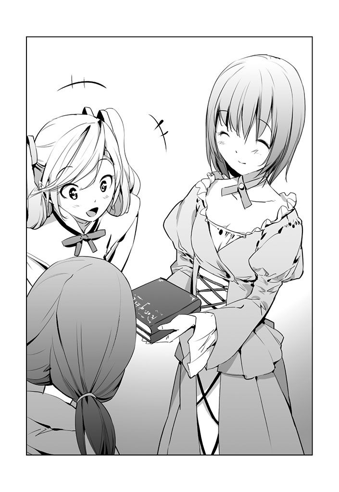
アニスは頬を染めてぎゅっと本を 抱 きしめた。
「そうだ、この前レイティアそっくりの子を見たのよ。いえ、そっくりっていうか、そのものだったの。ビアンカは喧嘩してたんだけど、だから余計レイティアらしく見えたわ。 蜂 蜜 みたいな 濃 い色の金髪でね、気が強そうでね、背が高いの」
ビアンカはルミナとの 因 縁 を思い出したらしく、しかめっ 面 になった。
「ああ、日記で話してくれたわね。えーと......確か、ルミナ・エルガフレッサ。シド様に頼まれて、父が調べていたはずよ。私もちょっと調べてみたんだけど。貴族名 鑑 にも 載 っていたわ。元々は 公 爵 家にも連なる、 由 緒 正しい家系だったんだけど......事件を起こして、家がとりつぶされたの」
「事件って？」
マリエルは少し言いよどんだ。
「王族の一人と、エルガフレッサ家の長男が、 恋 仲 になったの。でも、その女性には夫がいたのよ。つまり 不 倫 ね。長男は駆け 落 ちを考えて、女性を連れ出そうとしたんだけど、 捕 まって 投 獄 されたの」
「すごいのね。貴族名鑑って、そんなことまで載っているの」
と 呟 くアニスにマリエルが慌てて首を 振 る。
「こういう話は、結局みんなが言いふらすのよ。で、 真 剣 な 恋 だと思ってたのはその長男だけで、女性にとっては単なる火遊びだったみたいね。なんとか 醜 聞 をもみ消そうとした父親のエルガフレッサ 伯 爵 は、馬車から 謎 の転落死。母親もなんとか 息子 を助けようとしたんだけど......彼は 獄 中 で 亡 くなったの。そのせいで、母親は気がふれたらしいわ。......長男は手を出してはならない人に 関 わってしまったみたいね」
アニスは目を見開き、ごくりと 喉 をならした。マリエルの 淡 々 とした口調で言われると、話の 凄 みが数倍に増すのだった。
「ルミナは......その長男の、妹なのね？」
「ええ。兄と妹、二人だけのきょうだいだったみたい」
「家の復興のためにあんなことをしてるって聞いたけど、そんなんじゃ、復興しようがないじゃない」
ビアンカが小さく呟いた。
「まあ、 可哀 想 とか考えるにはちょっと......痛い目に 遭 わされたけどね」
そのとき 扉 が 叩 かれ、アニスたちはびくっと 肩 を上げた。
入ってきたのは三姉妹だった。エリンはアニスを見つけると満面の 笑 みで、
「調子はどう？ おなかは空いていない？ なんなら 厨 房 からパイをもってくるけど」
と尋ねた。アニスはぶんぶん首を振った。ケーキは、まだ半分も減っていない。
「なによぉ、シド君いないじゃないっ」
ディーナはぷんぷんしながらケーキに手を出した。水を飲むようなペースでケーキがなくなっていく。
「祭りの衣装ね。みんなとても可愛らしい。準備は 万 全 みたいね」
エリンにそばに寄られると、アニスはやや落ち着かない気持ちになった。まるで大きく強い 猛 獣 に懐かれているような 心地 だ。決していやな気はしない。ケーキのそばに行き、エリンの分を取り分けて戻ってくると、エリンはとても嬉しそうにお礼を言って皿を受け取った。
「エリンさんはお祭り、出ないんですか？」
「私は、 誘 いが 鬱 陶 しいから。子供の時から何回も行ってるしね」
アニスはユーリの手元にいる白い 蛇 、いや竜を見てぎょっとした。クールデール 卿 は、ユーリの手元でぐんにゃりしている。元気なく尾を垂らしているが、その尾には 恐 ろしく 凝 った花の形をしたリボンが巻き付けてある。
「クーちゃん？ 生きてる？」
「の......の......っ、ほ──っ！」
返事は言葉にならなかった。クールデール卿はアニスの声を聞くとすぐさま目を見開き、 跳 躍 した。ユーリは驚いて手を離す。そしてクールデール卿はぺたりとアニスの肩に着地した。
「ア、ア、アニス様っ、黄金の輝き！ 砂 漠 の薔薇！ 古代からの約束、夢見る 姫 君 と 墜 ちた星々！ 我 が 輩 は常にあなたのそばに───っ！」
「意味が分からないわ、クーちゃん」
「まあ......やっぱり飼い主が良いのね」
ユーリは 優 雅 に首をかしげた。そして一日貸してくれてありがとうと 微笑 むと、ケーキのもとに行った。意外なほど 巨 大 な量を皿に載せている。一人で食べる量には見えないが、食べるらしい。
「アニス様！ 召 喚 ！ 召喚ですぞ！」
「クーちゃん、それはまた後で」
「あら。その蛇、難しい言葉を知ってるのね。召喚なんて」
エリンは指についたクリームを無造作に舐めた。
「私は今日初めて聞いたわ。魔法の一種らしいわね。えーと、召喚する者のことを、ディルミータ......とか言ったかしら？」
ビアンカがぺち、とアニスの口を手で 塞 いだ。そしてクールデール卿の首をぎゅっとつかむ。
ビアンカの目配せを受けたのはマリエルだった。マリエルはかすかに頷くと、紺青の目を三姉妹に向けた。
「そういえばうちの領地でも、召喚者のことで 騒 ぎが起きていました。小さなものですが、 戦 闘 も起きたみたいで......こちらでも、なにか起きたのですか？」
答えたのは 口 の 端 に白いクリームを付けた、ディーナだった。
「なんでも、教皇が召喚者を探してるんですってぇ。見つかったら 丁 重 に連れてこいって、我々に命令が下されたの。 緋 色 の 女 神 軍はテメェのご用聞きじゃないって、シャーロット閣下がご立腹だったけどね」
エリンは口の軽い妹を睨みつけたが、少女たちが 怯 えているのを良いように誤解し、微笑んだ。
「心配しなくても、ここでは戦いなど起こらないわ。この西地区は我々緋色の女神軍が守っているわ。それに、この 依 頼 は王都の全ての地区に回されているの。実際、片耳で聞いておけばいい、その程度の命令よ」
「国のどこにいるか分かんないんでしょ？ 今頃きっと、どこかに 隠 れ 住 んでるのよ。んでも、意外と近くにいたりしてねっ」
あはははは、と笑いながらディーナはケーキをおかわりする。食べる量に驚くべきか、その言葉に驚くべきか、アニスはひそかに迷った。
「 皆 、ディルミータという言葉が分からずに戸惑っていたわね。今頃第三部隊が召喚者を探しているでしょうけど、どんな姿形をしているかも分からないのだから、探しようもないわ。アニス？ 顔が青いけれど......部屋まで連れて行きましょうか」
アニスは断ったが、エリンは心配し、無理矢理アニスを抱え上げて連れて行ったのだった。慌ててビアンカとマリエルが続く。
ロッテは続かなかった。ディーナと口げんか......というより「 仔 猫 による近所のボス 猫 への 無 謀 な 突 撃 」を開始していた。
エリンはアニスをベッドに寝かせても、全く安心しなかった。
「私だったら気分が悪いとか 風 邪 気味のときは、食べれば治るんだけど......肉でも魚でも野菜でもなんでも好きなものを言ってちょうだい。持ってくるわ」
「姉様にとっては、食料を 貢 ぐことが愛情表現なんですか？」
ユーリの 指 摘 にエリンはぐっと胸を押さえた。ユーリはそんな姉を困った 末 娘 でも見るような目で見つめ、提案した。
「温かい飲み物を持ってくるのはどうですか？ 果 汁 とか」
「はい、あの......お茶をもらえたら嬉しいんですけど」
アニスの言葉に分かったわ！ と立ち上がり、エリンは足早に去っていった。ユーリはあらあら、と 頬 に手を当て、
「ごめんなさいね。姉様はあなたのこと、とても気に入ったみたい。驚きましたわ。告白してくる 輩 にも、あんなことはなかったのに。とても珍しい現象です」
「アニス様はすべての竜にモッテモテー」
とむくりと起きあがったクールデール卿は、ユーリの視線を浴びて「ひいい」とまたアニスの肩にぺったり 貼 りついた。 怖 いらしい。
ユーリはそっとクールデール卿を 撫 でて硬直させると、戻ってきたエリンからお茶の載ったお 盆 を受け取って 卓 の上に置き、そのまま看病を続けようとしたエリンを引っ張って部屋を出て行ってしまった。
「え、ちょっ、そんな、アニスー！ ......」
と 伸 びたエリンの声の 尾 は、扉によって 無 惨 に一刀両断されてしまった。
「竜はアニス様と 一 緒 にいるだけで幸せ。楽しくて貢ぎたくて仕方なくなるのです。しかもそれは時間経過と共により強くなっていく 魔 性 の 魅 力 。しかし 依 存 性 はないので安心」
アニスは 布 団 の上に着地したクールデール卿の頭をつんつんつついた。
心配そうにそばにいるビアンカとマリエルにも、アニスは微笑んで見せた。
「二人とも、私は大丈夫よ。身体もなんともないわ。ちょっとびっくりしただけ」
「でも顔色は良くないわ、しばらく休んでた方が良いわ、アニスちゃん。......でも確かにびっくりしたわよね。軍への指示ってどういうことかしら。教皇って」
アニスはきゅっと 唇 を引き結んだ。教皇という言葉は最近耳にした。ビルダの古城で、あの真っ暗な階段で、セイ・ノーマンは確かに言った。シドの父は、教皇だったと。反逆教皇と言われた男で、召喚者 狩 りを行ったと。
牙狼傭兵団 、召喚者狩り、教皇の命令。全てはつながっているのだろうか。
「教皇って......ポーラ様の教会にいたとき、一番 偉 い人だってきいたわ」
「そうね。教会勢力のトップに立つ人よ。どうしてそんな人が召喚者を探すのかしら......」
国王は政治、教皇は宗教、そして 巫 女 姫 が魔法。彼らは各勢力の頂点である。
三人からすれば、「いることは知っているが......」という程度の 認 識 だった。少女たちの生活には、教皇などほぼ関係がない。
ビアンカはマリエルの言葉にしばらく考え込んだ。牙狼傭兵団は、単に 殺 戮 の対象として召喚者を見ている、とシドから聞いている。しかしエリンから聞いた話はそれとは 違 う。丁重に 迎 え 入 れろ、と言っていた。つまり、召喚者というものが、なんらかの取引や力関係の 天 秤 を 傾 けるための、道具として使われようとしている......？
いまでもどこかでアニスを捕らえ、都合良く使おうという勢力が 暗 躍 している。その構図を 思 い 浮 かべてビアンカは親指の爪を噛んだ。アニスが召喚者であることは、絶対に知られてはならない。それが明らかになった 途 端 、今のような生活は遠ざかるだろう。 逃 げ隠れる日々。恐れ、不安に怯える生活が始まるのだ。そうなれば、アニスはアニスのままではいられなくなる。この無邪気、この快活さを永遠に失うのだ。
ビアンカは 涙 を浮かべてベッドの上に座り込むアニスの頭を抱きしめた。
「ビアンカ......」
「守るからね。シドと一緒に私も、アニスちゃんのこと守るからね」
「私も。なにがあってもアニスを守るわ。父の財産全部放り投げても」
アニスは泣きそうな顔をし、ビアンカとマリエルの手を取った。
「ありがとう......」
ディーナは 完 膚 無 きまでにロッテをからかいたおしたらしい。こまっしゃくれてはいても根のところで純情なロッテは、ディーナの言葉に 耐 えきれずに部屋を飛び出し、泣きながら 戻 ってきた。
ロッテが 寝 付 くまで話を聞いていた三人だが、 寝 息 が聞こえだしてからは違う話に花を 咲 かせた。
アニスはあくびをした。 疲 れが身体に重くのしかかっている。目を閉じると、とても幸せになれる気がする。しかし夜の三人のお 喋 りを楽しみにしていたのだ。マリエルとビアンカはまだまだ元気だ。
「アニスちゃん、ちょっとだけ寝たら？ シドが帰ってきたら起こしてあげるわ」
「そうね。ロッテも起こさないといけないし。お 風 呂 の準備ができたら教えてくれるそうよ。それまで寝てたらいいわ」
「ううん、その......マリエルの次の本の話、ききたいな」
アニスは首を振り、背筋を伸ばして起きようとする。マリエルはそんなアニスを見て優しく目を細め、話し始めた。
「今度の主人公は、男の子にするつもりよ。印象的な青い目をした、金髪の少年なの。敵は父親にするつもり。今一番書きたいのは実は悪役かもしれないわ。派手好きで性格が悪い男が、頂点を 極 めながらも転落していく様を、事細かく書きたいの。テーマは父親への 憎 悪 と 復 讐 よ」
その声の調子に、ビアンカがぶるりと 震 える。
「マリエル、父親が悪役って、まさか名前はユージェスにするつもりじゃないでしょうね」
父親の名前を聞き、マリエルは冷たい表情になった。
「ふん、あんなやつモデルにする価値もないわ。あんなのじゃなくて、もっともっと 圧 倒 的 な魅力をもった悪役にしたいの。 泥 棒 や殺人が平気で起こるような下町で生まれ、成り上がることを夢見た男が、手段を選ばずに頂点を目指すの。あらゆる人を傷つけながら、男は高みにのぼるのよ。 傲 慢 で、自信家で、自分の 歪 みを 完 璧 に押し隠し、世の中を欺いているの。息子である主人公は、疑うことなく父親を愛していたわ。でもある日、自分の父親がとんだ悪党だということに気がつくの。このへんはもっとストーリーを練らないといけないけど」
「なんだかとっても似てるわ......」
「アニス？」
静かにマリエルの話を聞いていたアニスが、一人で頷いている。声はほとんど寝ているもののそれだ。マリエルとビアンカが不思議そうに見つめると、
「ううん、なんでもないわ......マリエル、私その話早く読みたいな......」
とろとろとまぶたが落ちている。ビアンカが、
「悪役は美形にするの？」
と 訊 いた。
「絶世の美形にするつもり。悪役だけど、 一 瞬 読者が『こいついい奴なんじゃあ？』と思うくらいの振る 舞 いをするのよ。息子は父親の 欺 瞞 を 暴 こうとするんだけど、結局のところ父親に利用されてしまうの。ヒロインは身分ある家に生まれた女の子で、剣の名人よ。主人公を守るために、何度も戦うの。その子だけは、主人公の言葉を信じてくれるのよ。あ、ビアンカ。 黒 髪 の 妖 艶 な美女も登場させるつもりなの。もしかしたらあなた、そういう姿になれないかしら」
「......あの、知ってて言ってるんじゃないわよね？」
「なにが？」
二人の会話を聞くともなく聞き、アニスはうとうとしていた。二人は気を 遣 い、ぼそぼそと小さな声で話している。
起きなければ、と思うのに身体は言うことをきかない。水の中に 沈 んでいくように、アニスは眠りに沈み込んでいく。
眠る直前にマリエルの新作の話を聞いたせいか、夢にはシドが出てきた。
そしてもう一人、シドを大きくしたような大人の男性。二人が向かい合い、戦おうとしている。前に見た夢と同じだ、とその情景を見つめながら、他人事のように考えた。
シドの父は自信家らしく、口の端に笑みをたたえて息子を見つめていた。
『世界のための、 犠 牲 を恐れるな。お前の力は私のために存在している』
シドは怒っている。怒り 狂 っている。今にも 魔 法 を放ちそうだ。しかし今回の夢にはクールデール卿は現れず、アニスには手出しができない。
『ふざけるな......お前はなにをした？ 世界のためだと、笑わせる。思い出せないなら、思い出させてやる、てめぇの黒十字は、血まみれだってことをな......！』
大きくなったシドの顔をして、父親は言う。
『 哀 れだな、お前には理解できないのか。世界の意志を。ひとは神に 使 役 される哀れな人形だ、私とて、その運命からは 逃 れられない。聞け、シド。竜を招く娘によって世界は 滅 ぼされようとしている......』
「心ある者は、聞け！ そしてこの忠告を受け止め、 悔 い 改 めよ！ 世界が、滅ぼされようとしている！」
夕暮れのダニエ通りで 叫 んだのは、全身を灰色のマントに 包 んだ男だった。
通りを歩く者たちは声の大きさに驚いて足を止めた。橋の上で、男は 絶 叫 していた。使命感に燃える彼には、 羞 恥 心 など関係がなかった。
「予言はなされた、竜を 喚 ぶ者が、世界を滅ぼすのだ！ お前たちは知らない、今、世界がどれほどの危機の前にあるのかを！」
唾 を飛ばしながら、熱っぽい視線でこの世ならぬものを見すえ、浮かされたように言葉を続ける。熱意にあふれているが、どこか不快を感じさせる有様だった。
女は 眉 をひそめた。早く帰って夕ご飯を作らなければ。今日はあまりに 遅 れてしまった。足の悪い義母は 機 嫌 を悪くして待っているだろう。
男は舌打ちした。 怪 しげな宗教に染まる輩はどこにでもいる。この男はその一人だろうと思った。
老人は、ちらりと目をやったが話の内容に興味を持つことができなかった。世界が滅ぶのならばとっくに滅んでいる。たとえ明日滅ぶのだとしても、それは心配するに足ることだろうか？ 明日の 稼 ぎよりも？
商人は 失 笑 し、そばを歩いていった。騒ぐことで稼げるのならば、いくらでも騒ごう。竜を喚ぶなどと、 世 迷 い 言 にもほどがある。馬竜一 匹 買うのにも苦労するのに、簡単に喚べてたまるものか。
旅人は疲れ 果 てたため息をついた。ようやく門を越えることができたのに、空いている宿が見つからないのだ。これは教会の扉を叩くしかないだろうか。
「召喚者を、捕まえるんだ！ 俺たちのもとに......ふがっ？」
男の身体は小さくはなかった。成人してから持ち上げられた経験など、なかった。
しかし今、男は猫の子のように軽々と持ち上げられている。しかも、 掴 まれているのは首だ。後ろにいる 誰 かは、片手でそれを 成 し 遂 げているようだ。男はばたばたと足を前後させた。しかし何にも当たらない。
地面にも、後ろの誰かにも当たらない。
なおいっそう暴れた。すると、後ろの誰かが口を開いた。
「暴れるな。無意味だ」
「ちくしょう、離せっ......誰だお前は！」
「お前のような 馬 鹿 者 を、三つにたたむのが好きな老人だよ」
「離っ......いてぇぇぇぇーッ」
後ろの老人は、首をつかむ指に猛烈な力を込めた。骨が折れる、と男は狂わんばかりに両手で空を 掻 き、足をばたつかせたが、それでも何にも当たらなかった。
「お前のように立ったまま 寝 言 を言うような輩は、それでなくても不快なんだ。なにが世界が滅びるだ、まともに生きてない者に限ってそんな世迷い言にとらわれる」
「あ、うあ、ああっ」
ぐいと持ち上がった次の 瞬 間 、男の身体は地面に 激 突 していた。顔から 石 畳 にぶつかり鼻血を 吹 いた。しかしそのまま逃げることもできず、男は後ろを振り 返 った。
岩を刻んだような厳しい顔をした老人が立っていた。 鷹 のように 鋭 い眼光が、 容 赦 なく男を 射 抜 く。
「逃げるな小便たれがァァッ！」
「ひっ......」
軍の支配者として、 幾 多 の勇者たちに命令を下していた声である。道で騒ぐことが革命だと信じているような男には、巨大な 棍 棒 で叩きのめされているに等しかった。そして老人は地面に 膝 をつくと、 腰 を 抜 かしている男に顔を近づけた。
「世界が滅びるわけがない。それはお前たちの、歪んだ願望だ」
「............っ」
老人は 獅 子 のような笑みを浮かべた。それは男を安らげるものではなく、より 恐 怖 の頂点に 押 し 上 げるためのものだった。
「さて、質問に答えてもらおうか。お前はどこのものだ？」
「どこって......」
「牙狼傭兵団か？」
男の表情が答えだった。オレグは 髭 をしごき、無造作に言った。
「そうか、ならば......死ぬか」
腰の剣が 引 き抜かれようとし、月光を浴びて 淡 く光った。 鞘 走 る剣の金属音が、男の耳に届く。それはまるで 己 の首が切られる音のように聞こえた。
恐怖と混乱のあまり、男は白目をむいて気絶してしまった。
「あーあ、誰が運ぶんだよこれ」
後ろの青年に、オレグは 顎 を動かして命じた。
「お前だ。 駐 屯 所 まで連れて行け。ドートンが全て承知している。他の奴には 渡 すな」
「なんでそうなるんだよ！ だったらせめて気絶させなきゃ良いのに」
「行け」
単語で命じられると、ぶつぶつ言いながら青年は男の腕を取った。
それはジークだった。軍学校の書類を整え、放校を 免 れたのである。しかし教師たちに長々と説教をされ、気ままに生きていくことの無謀を説かれ、げんなりしていた。しかも迎えに来たのは祖父である。教師たちはオレグを見て最敬礼をした。生きる伝説と呼ばれる老人である。また、 現 役 の将軍たちの中でもオレグに 敵 うものが何人いるか、と言われるほどの 無 双 の強さをいまだ誇っている。
訓練ならばともかく 実 戦 であれば、三姉妹ですら総出でかかっても敵うかどうか不明である。ジークは気絶した男の首を持ち上げていたのが、オレグの 利 き腕ではない左手の、親指と薬指であったのをしっかり見ていた。
怪 力 といえばディーナもそうだが、絶頂期から落ちているはずのオレグの領域にまで至っていない。剣技で言えば、エリンがようやくその域に手が届いたくらいだろうか。しかしエリンもこの平和な世にあって、ほとんど実戦に出ていない。
ジークは 唯 一 の男孫として、早くからオレグの訓練を受けていた。エリンですら十 歳 を超えるまで見てもらえなかったのに、である。ジークの剣技は、もしかしたら祖父のところまで 到 達 するかも知れないと目されていた。しかしジークは剣の道を極めるよりも、竜の面倒を見ていたいという性格だった。たくさんの人間をがっかりさせていることは 間 違 いない。
ジークの変わった趣味を唯一認めているのは、他でもないオレグだった。
祖父の目の前でジークは男を軽々と持ち上げ、走っていった。
「あの様子だと、すぐに戻ってくるだろう」
オレグは後ろにいた少年を向いた。フードで顔を隠しているのは、シドである。白昼堂々と通りを行くには、その黒髪と緋色の目は目立ちすぎた。
「大した情報は得られるまいが」
「ああ、だがここにも奴らがいることは分かった」
水の流れる音が大きくなった。空の上には、丸い月が 昇 っている。満月になったとき、祭りが始まるのだ。
ジークの家に着いたとき、シドを迎えたのはディーナとロッテの突撃だった。ロッテが泣きながらひどい目に遭っていることをシドに 訴 え、ディーナがこんな幼児気にせずに一緒にお話ししましょうと腕を引く。
「シド様を離しなさい、大娘っ！ シド様にご 迷 惑 ですわ！」
「ふん、幼児はよだれ垂らして 寝 てればあ？」
ロッテが 慌 てて顔を 拭 く。もちろん 汚 れてなどいなかった。
「シド君、私が疲れを 癒 してあげるーっ」
「きぃぃぃ、お離しなさいっ、シド様の腕が大変ーっ！」
オレグがディーナを 叱 りつけ、マリエルがロッテを連れて行った。
ようやくのことで一息つくことができたシドのもとにやってきたのは、祭りの衣装を身につけたアニスだった。
「シド、お出かけだったのね。昨日からずっと戻ってこなかったのね」
「ああ。オレグと一緒に、出かけていた。......なにかあったか？」
「帰ってくるの、待ってたの。......あの、ちょっとだけいいかしら」
「どうした。顔が悪......いや、顔色が悪いぞ」
シドの言葉に眉をつり上げたアニスだったが、次の 瞬 間 肩 の上のクールデール卿がシドに 襲 いかかった。
「っぴゃー！ 許し 難 い暴言ッ、アニス様見てて我が輩今輝いておりまーす！」
シドは非常に残念そうな表情を浮かべたまま、飛びかかってきたクールデール卿を空中でつかんだ。そのままぽとりと 床 に落とされ、クールデール卿はぼんやりした。うなだれてしおしおと部屋の 隅 っこに 這 っていき、そこでとぐろを巻いた。輝きはあまりにも 儚 かった。
「あの...... 詳 しくはビアンカから説明するって言ってたんだけど。ちょっとだけ話すわね。エリンさんたちが、召喚者を見つけたらつかまえる、というより丁重にご案内するように命令を受けたんですって」
シドのために用意された部屋は、アニスたちの通された三人部屋とは違い、家具も少し 豪 華 だった。 円 卓 の上には 花 瓶 が置かれている。
「緋色の女神軍が......」
その情報は 既 に知っていた。しかしアニスに教えるつもりはなかった。シドは床を 睨 みつけた。アニスは、このことはシドも知らなかったのだ、と誤解した。
「エリンさんたちは、召喚者なんて探したからって見つかるもんじゃない、姿形も分からないんだからって言っていたけど。まさか自分のうちに召喚者がいるとは思わないでしょうね......召喚者を探しているのは教皇なんですって。今の教皇の名前はカルフォロイって言うんですってね。なんだか悪役みたいな感じがして好きじゃないわ。それはともかく、お祭りに行くなんてちょっと危ないかなって......今回は我慢しようと思うの。ビアンカもマリエルも、一緒にいてくれるっていうけど、でも二人には出かけてもらいたいな。せっかく服も買ったし......そう、この服買ったけど似合う？」
シドに見せようと思ってわざわざ 着 替 えたのだった。くるりと回った 拍 子 に、赤い造花がぽとりと落ちた。 衝 撃 を受けたアニスが悲鳴をあげる。シドは近づいていき、床の花を拾うと元の場所に戻した。ボタンをひっかければ良いだけだった。
「似合うかどうかで言えば、別に悪くないんじゃないか」
「そっかあ、似合わないのね。でもふたりは素敵なのよ、ビアンカは可愛いしマリエルは大人っぽいの」
「............」
「え？ 聞こえないわ」
アニスの目を近くに見て、シドは 戸 惑 った表情を浮かべた。丸い頬はまだ子供っぽく、拾ったときに泣いていた小さな娘が、そのまま大きくなったように見える。シドは、ポーラのことを思い出した。
初めて会ったときは、アニスくらいの 年 頃 だった。 聡 明 そうな、意志の強そうな目をした、 真 面 目 な言葉ばかり口にする娘だった。教師になりたいと言い、そのための勉強をしていた。数年会うことができず、再会したときには、 彼 女 はすっかり大人びていた。 憎 まれ 口 ではなく、 優 しい言葉を口にするようになっていた。
ポーラは決してシドが困ることを口にしなかった。その目に浮かんでいるものに名前を付けるとしたら、それはやはり愛情だったかもしれない。しかしシドには、ポーラを受け止めるだけの力も、資格もありはしなかった。
大人にならない少年を、ポーラはいつでも温かく迎え入れてくれた。
「私の教会が、あなたの帰る場所になれたらいい......」
そんな彼女にアニスを預け、そしてポーラはアニスをまっすぐに育ててくれた。
ポーラのように、アニスも大人になるのだろう。それは動かしがたい事実だ。いや、そうでなければならない。
「似合っている。だから、心配するな」
「え。シド、今似合ってるって言った？ ほんと？ ...... 罠 ？」
「罠じゃねぇよ。祭りは......ビアンカとジークと一緒なら行ってもいい。心配するな、もしものときは移動石がある。それを離さなかったら 大 丈 夫 だ」
アニスは心底びっくりした顔をした。
「ほんと？ 行っても良いの？ でも、でも前みたいなことになったら」
「ならねぇよ。おかしなことに首をつっこまなければな。表通りから外れないようにしろよ。それにおかしなことを考えてぼんやりするのもやめろ」
アニスはシドの説教に 笑 顔 で 頷 いて 応 えたのだった。
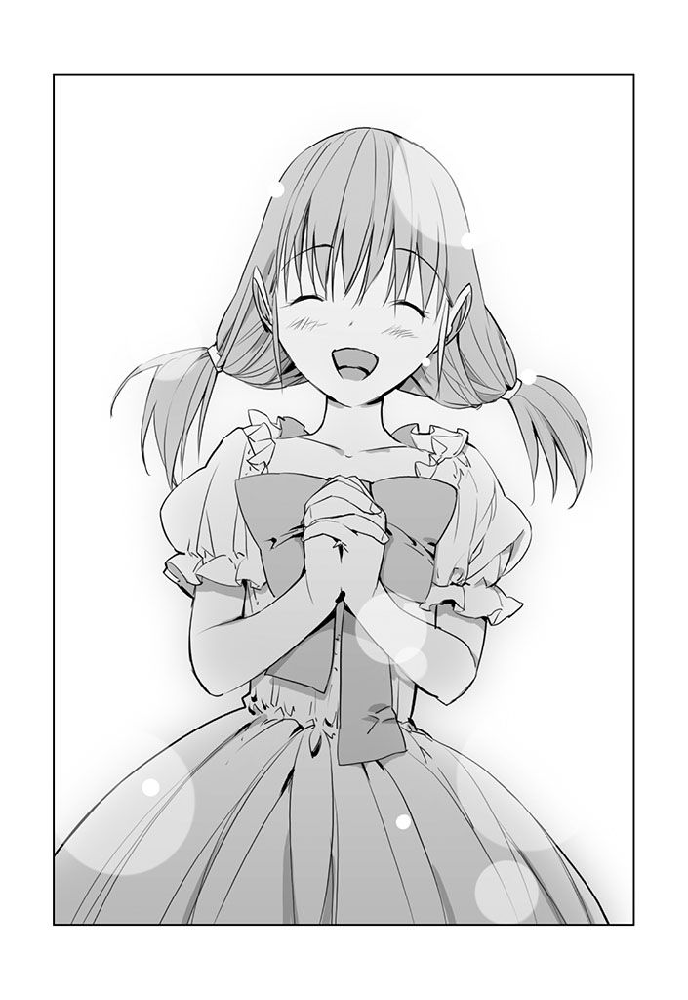
その日は、エリンたちも軍の任務から解放されていた。年ごとに警備の仕事が回ってくるらしいが、今年は彼女たちが属する班は担当ではなかった。エリンには副団長としての任務があったが、数時間は抜けてもいいと団長から特別に許されたらしい。
「シド様がアニスを心配されているなら、私も守ることにするわ。私と、ユーリと、ディーナがいれば、襲える者はこの世にいないわ。一個中隊くらいなら防いでみせる。暴れ竜でも大丈夫よ」
「むしろぺんぺん草も生えな......ぐえっ」
エリンは 鉄 壁 の笑みをたたえたまま、ジークの 鳩尾 に 肘 を叩き込んだ。
「あら 鎧 を 纏 うのを忘れていたわ。残念ね、鉄の肘当てさえあれば、風穴だって空けてあげられたのに」
のたうちまわるジークに、心配そうに手を伸ばすのはビアンカだった。指先でジークの頭をつついている。
「ユーリ姉さん、私の祭りの衣装がないの。去年のやつまだ着れるって思ってたのに、小さかったあ......」
「まあ。あなた、去年からにょきにょき背が伸びてるくせに、どうしてまだ着れるなんて思えたのかしら。そこがまず不思議だわ」
エリンとユーリはいつも通りの格好であり、祭り用の衣装を着るつもりはないらしかった。
「ひどいぃーっ」
「そうだ、お祭り用じゃないけど、ビアンカが買ってくれた服があるわ。あれだったらもしかして着れるかも。白いし。赤い飾りを付ければいいわ」
アニスはぽんと手を叩いた。ビアンカが止めようとするのに気づかずに四人の部屋から持ってきたのは、アニスには色気 過 剰 すぎたワンピースだった。マリエルの顔にもほんの少しだけ衝撃が走る。
笑顔のアニスからそれを受け取ったディーナは、ごくりと喉を鳴らした。
「こ、これ......？」
「ええ！ ちょっとスカートが短いんだけど、ディーナさんなら大丈夫かな。マリエルが着たときは、ちょっと派手すぎたの」
ディーナはマリエルにちらりと目をやる。すまし顔の貴族 令 嬢 がこれを着たとは、にわかには信じられない。
「ディーナ、アニスがこう言ってるんですもの。着てらっしゃいな」
「ええ。好意を 無 駄 にしてはいけません。早く」
姉二人はきらきらした作り笑いを浮かべ、ディーナを 促 した。
断り切れず、ディーナはそれを着て戻ってきた。そして 爆 笑 でもって迎えられたのだった。ちなみに笑っていたのはジークの家の面々だけである。
「姉貴、そりゃひでぇー！」
「色々足りなすぎたわね......」
「ダメよディーナ、前かがみになったら、見えてしまうわ......おへそが」
「へその前に見えるものがあるわよ私だってぇぇ───っ！」
叫んでディーナはジークに襲いかかった。なんで 俺 があ！ と悲鳴を上げながら関節技を決められ、倒れ込んだ背中に座り込まれてジークは降参と叫んだ。しかし怒りのぶつける先を求めていたディーナの耳には届かなかった。
ようやくのことで逃げ出したジークが、びっくり顔のビアンカの背中に隠れる。そしてそこから、
「なんだよ、ディーナ姉の色気のなさが悪いんじゃねぇか！ 特に乳が存在しな」
と言いかけたとき、ビアンカの眼光がオレグ並みに鋭くなり、
「乳とか言うなこの 馬 鹿 ぁぁーっ！」
と 華 麗 な 膝 蹴 りが決まったのだった。ジークはあっさり後ろに 倒 れた。
その後ビアンカは「いい 蹴 りだったわ」「 躊 躇 する必要も、謝罪の必要もないわ」「かかとを顎に入れた方が殺傷力があるわよ」と姉たちに 褒 められたのだった。
外で花火の上がる音がした。ぽん、ぽんと小気味よい音が続く。全員が押し 黙 り、耳を立てた。
「始まったかな」
「今年は少し早いわね、担当が 酔 っぱらっていたのかしら」
火の魔法を使う者が 魔 力 を 機 巧 に込めると、美しい花が空に咲く。日はほとんど西に傾いていたが、まだ夕暮れの内だった。
祭りの中心となるのは、西地区の 目 抜 き通りであるアイリーン通りである。中心に立てられた 飾 り柱に、赤い花が何百と咲いている。王都のあちこちから人々がやってきて、大変な混雑になるらしい。
本来の由来である 恋 の祭りという側面もあるが、飲んだり食べたり騒いだりが一番に来るのは当然だった。今年も王都は平和だった。もちろん、明日もそうだと皆信じているのである。
出かけましょうか、と腰を上げた面々に続こうとしたアニスが、ふと身体の動きを止めた。耳を傾けるような仕草を、ビアンカが不思議そうに見ていた。
「どうしたのアニスちゃん」
「鳴いてる......ノアが、悲鳴を上げてる！」
その言葉を聞いていち早く行動を起こしたのはジークだった。 厩 舎 に向けて全力 疾 走 する。アニスとビアンカがそれに続いた。
厩舎から出てきた男を見て、ジークが走りながら問いかけた。
「マルスさん、中でなんか変なことなかったか！」
「あ、いや。なにもないよ」
ジークはそれ以上会話を続けずに厩舎の中に飛び込んだ。マルスが 何 故 か走り去っていくのにも気づかず。
「ノア、大丈夫か......！」
ジークの最悪の予想が、現実として目の前に広がっていた。
一番 奥 にいるノアが、いつもと違う格好で寝ていた。口から 泡 を 出 している。尾も手足もだらりと力を失っている。ジークは慌ててノアに飛びついた。眼球を見、腹の 鼓 動 を確かめる。
「ノア、どうしちゃったの！」
アニスも泣きながら飛びついた。
「大丈夫だ、息がある！ ビアンカ、あいつら呼んできてくれ！」
ビアンカがスカートを 翻 らせ、世話役の青年を呼びに走った。 彼 は異常に全く気づいておらず、ノアの姿を見てようやく飛び上がった。
「な、なんで！ なんだよジークさんこれ......」
「医者を呼んでこい、こんな状態見たことねぇよ！」
世話役の青年は 弾 かれたように厩舎を飛び出していった。アニスは必死にノアに語りかける。
「ノア、どうしちゃったの。しっかりして、お願い、口をきいて！」
「薬ですな。怪しげな草の 臭 いがします」
クールデール卿がにょろりと這い 出 た。
「無理に飲まされていますな。青年、ノア 殿 の口を開けなさい」
ジークは混乱しつつもノアの口を開けようとした。しかし顎は重く、なかなか思うとおりにいかない。ビアンカとアニスが反対側を手伝うと、ゆっくりと開けることができた。 牙 の並ぶ口の中、舌の上に 紫 色 の実がいくつか残っていた。
「 腕 を喉の奥に。そう、その器官をつかんで、思い切り引っ張りなさい。一度だけ、全力で！」
ジークは必死に言うことをきいた。ビアンカとアニスも、自分たちが力を抜けば、ジークの腕がノアの口で一刀両断されてしまう、と必死になった。そしてジークは喉の奥の器官をつかみ、引っ張った。
ごぽっ、と音がした。
慌ててジークは腕を引く。「離れて！」と指示を飛ばすクールデール卿の声のままに三人は離れた。ノアの口から、胃の中にあったものが流れ出た。 与 えられた 食 餌 の溶けたものの中に、紫色の実がいくつも混じっていた。
「ぐ、る、うぅぅ......」
吐いたことでひとまず楽になったらしい。ノアが目を開けた。
良かった、とアニスが飛びつく。
「なんだよこれ。おい、白ウナギのおっさん！」
「誰がおっさんであるかこの人間の 雛 めが！ ぺっぺっぺ！ はさておき、これは竜を 眠 らせる薬ですな。北方の森の中でしか採れない植物です。しかし量が多すぎる、 吐 かせなければ命が危険だったでしょう」
「誰がこんなことをしたの！」
怒 りの声を聞きながら、ビアンカは目を見開いた。
嘘 、と首を振る。そんなことがあってはならない。しかし目の前の現実は動かしようがなかった。
「みんな......、見て。ノアの 卵 が無い......」
座 り込んでいたジークがそちらを見る。台の上に 鎮 座 していたはずのノアの卵は、そこには無かった。転がってどこかに行ったのかと捜してみるが、見つからない。
「ノア。聞こえてるわ。無理しないで。そう、男が卵を 盗 んだのね？」
「まさか。さっきの、マルスさんが？」
ビアンカの言葉に、ジークが反応する。
「まさか。あの人がそんなことするわけが......」
首を振り、ビアンカはジークの言葉を否定した。
「でもあの人、大きな 袋 を背中に 抱 えてたわ。走っていくところ、みたもの。あのとき追いかければ良かった......！」
報告を聞いたエリンは、 腕 組 みしたまま 渋 面 になった。
「竜の卵は高く売れますからね......そういえば最近、竜の卵を探している商人をよく見かけましたわ。卵ひとつにつき、金貨十枚渡すとか」
「そういえばマルスさん、母親が病気だって言ってたよね......」
隣 に 寄 り 添 う妹たちの言葉を聞き、エリンは大声を出した。
「何を 愚 かしい！ 客人のものに手をつけるなんて、我が 家 の 恥 よ！ アニス、申し訳ない。恥はすすがせていただきたい。絶対にやつを見つけ、 八 つ 裂 きにしてやる」
軍での男性口調が、ことさら似合った。そして火を 噴 くような 迫 力 だった。
二階から戻ってきたマリエルが、
「シド様は、いないわ。オレグ様と一緒に出て行かれたみたい」
と言った。
三姉妹は 即 座 に家を出て行った。少年たち、子供たちがものものしい 雰 囲 気 に 驚 いて道を 譲 る。あの様子では見つかったマルスは八つ裂きの八つ裂きの八つ裂き、五百十二 裂 きになるかもしれない、とジークは恐れずにいられなかった。しかし同情している場合ではない。盗まれたのは、ノアの卵なのだ。
「大丈夫だアニス。マルスさんは悪い人じゃない......持ち出しただけで、きっと戻してくれるよ」
「ええ......あ、クーちゃん。もしかして、マルスさんの居場所、分からない？」
クールデール卿は、一度会った人間がどこにいるか分かるという、異能をもっている。そのことを思い出したビアンカとジークは期待して白竜のもとに集まったが、
「............誰でしたっけ、その、まんまる？」
不思議そうなクールデール卿の物言いに、三人は肩を落とした。
「こんなウナギが役に立つわけないさ、アニス。俺も捜しに行くよ。ビアンカも来るか？」
「もちろんっ」
「ムキ──ッ！ 我が輩が役立たずと申すのであれば、お前だって世界にとっては草一本でありゴミであり姉たちのストレス発散の小道具でしかないのだぞこのたれ目 小 僧 めがああ」
たれ目と言われたジークはがくっと 肩 を落とした。クールデール卿はきっとしてアニスに向き直る。
「我が輩は役立たずじゃありませんぞアニス様！ なんでも分かる 知 恵 袋 、竜のこと召喚のことなんでも聞いてくれれば、知ってる限りおこたえします。そんな貴方のお友達、導きの白い竜、クールデール卿！ 我が輩、まんまるの位置はよく分かりませんが、ノア殿の卵の位置ならばなんとなく察することができますぞーっ」
アニス、ビアンカ、そしてジークの視線が集約した。
「それを早く言え！」「早く言って！」「早く言いなさいよぉ！」
と三つの叫びがひとつになった。
マリエルはロッテの手を取ったまま、三人を見送った。心配を、その静かな 微 笑 の奥に隠しながら。
「行ってらっしゃい。私たちはここで大人しく待ってるわ。気をつけて行ってきて」
「 怪 我 しちゃダメですわ！ 特にアニス、あなたが怪我したらシド様が怒りますからね」
アニスも笑顔でこたえ、三人は家を出た。
三姉妹が通りを駆け抜ける様子は、人目を引かずにおかなかった。王都でも、緋色の 女 神 軍の期待の戦力として知られている彼女たちである。たとえその 戦 闘 力 がなかったとしても美人姉妹として有名だっただろう。エリン、ユーリ、ディーナは 戦 女 神 のような 扱 いを受けている。
「止まりましょう、二人とも。やみくもに走っても解決しませんわ」
通りには人が多すぎる。海に逃げた魚を捜すようなものだった。エリンは 拳 を 握 って 煉 瓦 の 壁 に 叩 きつけた。
「あいつが卵を盗んだのは、私のせいよ。あいつの 求 婚 を断り続けていたから。腹いせなのよ、きっと！」
「姉様......ですが、求婚を受けていれば良かったとか、そういう問題じゃないですわね？ 問題はマルスの 野 郎 の人間性です。姉様が気になさる必要はありません」
ジークが三人に追いついたのはそのときだった。肩で息をしながらジークは、
「マルスがどこにいるかなんとなく分かった」
と 連 絡 した。
エリンは前に出、ジークの額をつかむと、そのまま上に持ち上げた。ジークの足が宙に浮く。何も知らない 酔 漢 がうおっと 歓 声 を上げた。
「お前はそういう適当で 曖 昧 な伝令が、軍にどういう 影 響 を 及 ぼすか分かってるの？ 愚かにもほどがあるわ」
「嘘じゃねぇってば、マルスは、テルムさんの宿屋のあたりから下道に出て、川を上流に向かって走ってる！ ほんとだ、信じてくれぇ！」
エリンが力を抜くと、ジークはぼとりと地面に落ちた。ジークは震えながら両方のこめかみを押さえている。
「本当なの？」
「ああ。本当だ」
「嘘だったらお前は 素 手 、私は 斧 で千本特訓を受けてもらうわ」
言い残してエリンは駆けだしていった。ユーリは無言でジークの頭を撫で、ディーナは「かっわいそー！」と同情の言葉を投げつけて、去っていった。
「ちょ......、これが間違ってたとしたら、それ、嘘に 含 まれるのかぁぁー！」
と彼女たちの背中に向けてジークは叫ばずにおれなかった。
今やジークの命すら 背 負 っているクールデール卿だった。彼はアニスの肩の上で、
「こちらまっすぐです」
と指示を出した。
空にはとうに満月がのぼっていた。かがり火よりも明るい、いやに大きな月は、見ていると人の不安を呼び起こす。しかし祭りの 喧 噪 は 賑 やかだった。通りを行く人たちの楽しげな様子は、一瞬起こっていることを忘れさせる。
この西地区では 幾 本もの通りが 絡 み 合 っている。飾り 付 けが派手で人通りの多い通りもあれば、全く人気のない通りもある。アイリーン通りから放射状に伸びる四本の通り、それ以外は中心から遠ざかるほど静かだった。
そして今走っている道にはほとんど人通りはない。ときどき酔いを 醒 ましに、川のそばにやってくる 酔 狂 な者がいるくらいだ。
人通りはない、と思ったら誰かが立っているのが見えた。アニスは視界の 端 に 人 影 を見て、そちらに顔を向けた。
上の道から階段で下りることができる位置に、誰かがひっそりと立っていた。
一瞬それがシドに見え、アニスは足を止めそうになった。シドぐらいの背の高さだったせいだ。しかし相手はフードで顔を隠しており、アニスを見ても特に反応しなかった。
そのフードの向こうの目が不思議な紫色に見えたが、そんなことを気にしている場合ではなかった。アニスはまた前を向いて走った。
マルスもまた走っていた。走れば走るほどに、自分がなんと情けないことをしたのかと 後 悔 が 募 り、足が重くなっていった。しかし遠くに行かないわけにはいかなかった。 今 頃 はもう、ばれているだろう。エリンは怒りに燃えているはずだ。
竜の卵が母親の病気に効くという話をしたところで、彼女が同情してくれるとは思えない。盗みに手を染めた自分を、ゴミでも見るような 残 酷 な目つきで見下すだろう、あの女神は。
普 段 の無関心ではなく、せめて怒りの対象であったなら......と考えたのだったが。命知らずだったとあのときの自分を責めたくて仕方がない。エリンの怒りを受けたジークがいつもどんな目に 遭 っているか、そばで見ていたのに。あれはジークだから生きながらえているのであって、違うものであれば二日ともたない。よく知っていたのに。
しかし今となっては戻ろうにも戻れない。卵はどうすればいいだろうか。町で、竜の卵を売り買いしているという男を見たことがある。金貨十枚という話に 惹 かれはしたが、怪しげで、できれば一生 関 わりたくない雰囲気を 漂 わせていた。
よくよく考えれば卵を持っていたところで、どう使えば病人に効くのかが分からない。 殻 が効くのか、中身なのか、どう扱えばいいのか。
自分は一体どうなるんだろう、とマルスが胸を痛めたときだった。
「待ちなさいよ！」
後ろから 威 勢 の良い声が届いた。マルスは足を止め、息をつきながら 振 り返った。
金 髪 の 娘 が、両足で地面を 踏 みしめ、マルスを睨みつけている。
「その背中の袋を降ろして！ いい、あんたがやってることは 泥 棒 なんだから！ 観念しなさい！」
「分かってるさ。もちろん、これは泥棒だ。うん......そんなことは分かっているんだよ、もちろん。だからといってほいほい返す気にもなれないな、お 嬢 ちゃん」
金髪の娘の身体が光を帯びた。マルスはその現象を見知っていた。あれは、 魔 導 師 が力を練るときの光だ。身体からあふれ出る力が、光になって現れている。
「ものすごく痛い目に遭わせるわよ、あんた」
「へえ、そりゃ 怖 い。......で、どうなるって？」
「......カーズ！ イリスタ デイ ノース......」
「ははは、魔法か。使うなら使え、後悔するのはそっちだ......っ？」
笑うマルスの身体を 強 襲 したものがいた。 脇 腹 に、足に突撃を受け、マルスは 驚 愕 する。しかし痛みが大したものでないことに気づいたのは次の瞬間だった。見れば、足元に小さな 愛 玩 竜 がからみついていた。キューンと 甘 い声を上げながら、マルスの服を 噛 んでいる。そして後頭部に衝撃を受けてマルスは地面に手をついた。
「チッチ、ルリ、ラース！ 袋を 奪 って！」
命令する声を聞く。マルスは顔を 隠 しながら腕を振る。憎らしいことに目を 狙 ってくるのだ。この愛玩竜どもは、この声の持ち主のいう通り動いているようだった。
驚くべきことだった。愛玩竜は愛くるしいが、知能が低い。人の言うことを聞かない 凶 暴 なものも少なくないと聞く。しかし、こいつらは間違いなく命令に従っている。
「三匹とも、突撃ぃーっ！」
「うわああああーっ」
三匹の体当たりは 猛 烈 だった。袋を引かれ、奪われそうになるそれを必死に 取 り戻そうとする。顔を上げた 途 端 鋭 い 爪 でまぶたをやられた。目を開くことができない。どこから来るか、さっぱり分からない。暴れるマルスの様子は、外から見れば、
「うまい 踊 りね」
と評されても仕方ないものだった。
「情けないですわ」
「 槍 を使う必要もなかったじゃない......」
マルスはとうに三人に囲まれていた。いつの間にか小さな竜どもの突撃はやんでいた。おそるおそる目を開けると、まずはディーナ、そしてユーリ、そしてエリンの姿が見えた。彼の恋する女神の、予想通りの残酷な 眼 差 しが。
「ひ、ひょぇええええっ」
マルスの驚きは無理からぬことだった。三人は、完全に彼を取り囲んでいた。そしてマルスは唯一の逃げ 道 に突撃しようとした。
つまり、水の流れの方面だった。
「あ、こら！」
「ちょっとぉっ」
三人が怒りの声を上げるのを背後に聞きながら、マルスは全力で川に飛び込もうとした。水の中に彼を救う腕が広がっているのだといわんばかりに。三姉妹の 地 獄 の 拷 問 を受けるよりは、泳げなくとも川に飛んだ方が一万倍もマシに決まっていた。
マルスは目を閉じた。全身にまるで 殴 打 を 食 らったような痛みが走る。水しぶきが......水は、彼に全く 触 れていなかった。
彼の身体は空中でつかまれ、引っ張られ、地面に叩きつけられていた。マルスは地面にキスするはめに 陥 った。
「まさか私たちから逃げられるとでも？」
「哀れですわね」
「マルスさんたら 面 白 いなぁ、今の格好」
おそるおそる顔を上げると、視界には三姉妹の 綺 麗 な顔が 揃 っている。もちろん逃げ 切 れるわけはなかった。そうと知っていてもマルスは再び逃げだそうとした。生存本能がそうさせた。地面をかき、立ち上がろうとする。
「この、大馬鹿者！ ミミズになって反省しろ！」
彼の身体を 蹴 飛 ばしたのは、 魅 惑 的 なエリンの足だった。勢いでマルスの身体は一回転した。そして、その勢いで彼の身につけていた袋が、宙を舞った。
「あ、あああああっ」
それは誰の悲鳴だったか。
ノアの卵の入った袋は、着水し、流れに乗って泳いでいく。
「ああっ、ちょっとあんた泳いで取ってきなさい早くッ！」
川の中に叩き込まれたマルスが、哀れにも 沈 んでいく。
彼は、生まれてこの方泳げた 例 しがなかった。
昨日 捕 らえた者が自殺しようとしたという連絡を受け、シドとオレグは慌ててやって来たのだが、男はぴんぴんしていた。首をくくろうと 図 ったのは確かだが、成功はしなかったらしい。
報告を受けながら、オレグは情報統制ができていないことを怒りだし、直立不動の兵たちに説教を開始した。既に退団した身だが、と前置きしてから 繰 り出された言葉の数々に涙を 浮 かべる者もいる。 鬼 神 のごとしと言われた元団長は、時に敵よりも味方に 恐 れられていた。
脇 で聞いていたシドだったが、 弁 舌 の長さに 辟 易 し、先に出ることにしたのだった。
祭りの開始音はとうの昔に終わっていた。
人々のざわめきは、全盛を 迎 えたようだ。通りには酔漢どもが 騒 いでいる。明かりの 漏 れる定食屋では酒と肉のどんちゃん騒ぎが続いている。白い服を着た娘たちが笑いさざめきながら通りを歩いていく。アニスたちはもう出かけただろうか、と考えシドは息を吐き出した。
見上げれば満月だった。表面がかすかに赤みを帯びており、気味の悪さを感じた。その赤は、どこか血の色を思わせた。
そしてシドは代理公からの連絡を思い出した。魔力を帯びた紙が衣服の中でかすかに熱を帯びる。それを開けると、ユージェスの 生 真 面 目 な文字が浮かんでいた。
『教皇のもとに水色の目をした女がいるという。おそらく、セイ・ノーマンだと思われる。 巫 女 姫 が教皇に会おうと申し込んだらしいが、断られたらしい。巫女姫が独断で動いていることは、 神 殿 の方でも 困 惑 しているようだ。おそらく、次に巫女姫が向かうのは王都だ』
教皇が 召 喚 者を求めたとしたら、それはおそらく巫女姫への 牽 制 だろう。かれらはいつも魔導師たちを恐れ、一歩先んじようとする。上の立場に立ち、 魔 法 を 操 る者をおさえつけようとする。
たくさんの糸がアニスに絡みつこうとしているのが、見える気がする。それを 全 て 断 ち切ることができるか、自問する。
目の前に浮かぶ光景がある。
泣いている自分と、横たわる女。血の海に沈みながら、細い声で、
『あなたは......私のようになってはいけません』
紫色の目が光を失っていく。手を 伸 ばしても届かない場所に行ってしまおうとする。自分は、なにを言おうとしただろう。
『シド、あなたは幸せになって......』
同じ言葉を告げたのはポーラ。あのときの自分はなんと答えたか、覚えていない。父を憎むことは、その 妄 執 に 囚 われること、自分は 遺 言 を振り切って、自ら 檻 の中に飛び込んだも同然だ。
本当は、忘れるべきだった。だが決してそんなことはできなかった。
赤毛の少女を助けたように。その手を取ったように。
自由になど、生きられはしない。この身は過去に 縛 られている。
『私、いつかあなたのために戦うわ』
ポーラと、同じことを言った。かつて自分が助けた少女が、今度は自分が救うと。世界の 嵐 を受けてばらばらになってしまいそうな少女なのに、強い言葉を吐く。いつからか自分は、その言葉に......。
「バシュレム」
一声を聞いた 途 端 シドの思考は停止した。身体が勝手に動く。
「オドネイ ル オード ベルガロッサ ディ オーラム ルフ......」
ごうと耳の横で空気が 膨 らむ音がした。 雷 光 が落ちてくる、その衝撃に身構える。立ったままのんびりと 攻 撃 を待つようなことはしない。
「ヴント ベイタル アゲート......」
対象の定まらぬ中、 詠 唱 を開始する。この魔法は間違いない、先日相対した 雷 鳴 の使い手、ルミナ・エルガフレッサだ。 逃 亡 の果てに、どこにたどり着いたか。まさか、再び自分を 襲 撃 してくるとは思わなかった。
特 徴 的 な青いワンピースを着た背の高い娘が、走り去っていくのが見えた。
シドが迷ったのは 一 瞬 だった。すぐにルミナを追う。
表通りから 離 れ、小道を下りていく。祭りに騒ぐ声から遠ざかっていく。川の流れる 沈 下 橋の向こう、古びた聖堂の前にルミナは立っていた。空をつく三本の 塔 、その聖堂は今では 信 仰 が絶えたかのように、死んだ身体をさらしている。
門のそばには 篝 火 が 焚 かれていた。
ルミナはシドの興奮を 嘲 笑 うかのように口元を手で押さえていた。さきほどの魔法は、単なる牽制だった。シドは静かに近づいていく。
「 捕 まりに来たか」
「お久しぶりね、シド・マスター。来てくれてありがとう？ まさか私相手にお 尻 を見せて 逃 げるとは思わなかったけど、わざわざここまでついてきてくれるとも思わなかったわ」
「お前となれ合ったつもりはない。質問に答えろ、お前は一人なのか？」
「だとしたらどうかしら。捕まえる......？ たまたまここに来た私が、 偶 然 あなたを見つけて、 発 作 的 にあなたを襲ったのかしら。あなたが詠唱を止めたのは、それを 確 認 するためよね？」
シドの 沈 黙 を前に、ルミナは肩をそびやかせた。
「答えてあげる。偶然じゃ、ないわ」
シドはルミナの後ろにいる者の存在に気がついた。
影 の中にいたその人物は、身に纏っていたフードを取り 払 った。シドは 緋 色 の目を見開いた。ここにいてはならないと、頭の中で 警 鐘 が鳴る。しかし動くことができない。
それは、作り物のように 繊 細 な顔立ちをした娘だった。 紫 水 晶 のように不思議な色をした瞳。その 皮 膚 が感情に 歪 むことなどあり得ないと思えるほど 完 璧 な造作。 髪 は複雑な形に 結 い 上 げている。世界で、彼女だけに許された 髪 型 だ。まるで昔に時を止めてしまった、古い民族の伝承人形のような姿だった。
顔半分に刻まれた、 無 惨 にも見える大きな 魔 導 紋 が、彼女の正体をなによりも明らかにしていた。
「お前は......」
シドは 呻 いた。最悪の相手だった。まさかこの場に出てくるとは、シドすら想像していなかった。できなかった。
本来なら、彼女は神殿の 奥 深 くで守られているべき存在だ。ふらふらとこんな下町の 薄 汚 い通りなどに、立っていていい人間ではない。
いや、彼女は正しくは人間ではないのだ。古代の魔導紋を現代に伝える存在。彼女を殺せば、その死に魔導師たちが引きずられる。
巫女姫、だ。
「神様が、我々の出会いを約束してくれました。出会うのは二度目ですね、火の魔導師」
人形が口をきいたような、不思議な声だった。 鈴 が鳴るのと印象が似ている。その声に感情が含まれていないのだ。木石が口をきいたらこんな風だろうか。
「前回は会話することはかないませんでした。ですので、名乗りを上げます。わたくしは百七代目の巫女姫。ミリオーレ・サーシャと申します」
月の光が彼女の 容 貌 を照らし出す。
穏 やかな自己 紹 介 、であるわけもなかった。シドは背中に 汗 をかいていた。ルミナはシドを嘲笑っている。前回に彼女を逃がしたのが 致 命 的 な失策だった。まさかこの場になってこのような 災 厄 となって降りかかるとは。
「 悔 しそうね、シド。あなたのそんな姿を見るのは 愉 快 だわ。最強の魔導師が、まるで小さく見えるわね」
「てめぇは 虎 の 威 を借る 狐 そのものだな。自分の愉快さを 棚 に上げるなよ、鏡でも見て笑ってろ」
痛 烈 な皮肉にルミナは 唇 を噛む。そして言い返そうとしたルミナに、
「お黙りなさい」
と命じたのは巫女姫だった。まるで草や木に願われたような静かな 声 音 に、ルミナは逆らうことができなかった。
「シド・マスター。誤解しないで 欲 しい。わたくしは、全ての魔導師の味方です。世に存在するすべての 魔 法 使 いは 我 が 子 も同然」
紫水晶の 瞳 が、無感動にシドを映している。
「わたくしがどうしてここまで来たか、不思議に思っているのですね。わたくしには我が子がどこにいるか、分かるのです。あなたに会いたかった。シド・マスター、あなたに聞きたいことがあるのです」
言葉を 挟 むことは、シドにすらできなかった。ただ、巫女姫の言葉を聞くしかなかった。
「あなたは、召喚者のことを知っていますね？ 召喚者は魔導師の中でも 特 殊 な存在、かれらのいる場所は、わたくしにすら分かりません。ですが、わたくしにはかれらの力が必要なのです。シド・マスター、どうか、教えてください。あなたの知っている全てのことを」
まるで子供が自分を愛することを疑わない母親のように。巫女姫の言葉は、静かで、当たり前のように 響 いた。
祭りの喧噪が別世界のことのようだった。氷薔薇の神殿の中で 神 託 を告げる 巫 女 姫は、ここが下町の裏通りであっても、全く変わらない。
シドは巫女姫の 紫 の瞳に、寒気を感じた。
「なぜ、あんたは召喚者の力を必要としてるんだ......？」
その質問は、逆にシドが召喚者のことを知っていると教えるようなものだった。ルミナは巫女姫を見つめる。しかし巫女姫はそんな視線など、 一 顧 だにしなかった。
「前代の巫女姫は、おかくれになる直前に、最後の予言を残していかれました。その予言は、それから長い間放置されました。魔導紋を引き 継 いだわたくしを、神殿のものが見つけることができなかったからです。予言が注目されたのは、わたくしが神殿に行ってからのこと。シド・マスター......あなたには意味が分かりますか。前代は、告げました」
遙かな過去より来たれり 崩壊と暴虐の王
導くは悲しみに心臓を止めた 竜を喚ぶ者
三ツ目王と双子の片割れの女王が 終わりを祝福する
世界は暴虐帝の目覚めと共に 眠りにつくだろう
巫女姫が口にしたのは、古代語だった。ルミナは 戸 惑 っていたが、シドは即座に意味を理解した。いや、言葉の意味が分かっただけで、内容を深く理解できたわけではなかった。
崩壊と暴虐の王、竜を喚ぶ者。双子の片割れの女王。暴虐帝。どの言葉をとっても 普 通 ではない。一音すら捨て置くことはできない。
巫女姫が口にしているのはおそらく神殿の中で「外に持ち出してはならない、 最 奥 の秘」とされている予言だろう。これは、間違いなく 破 滅 をうたっている。
巫女姫は未来視と、過去視のどちらかを行う。未来をみるものは過去をみるものより少なかったが、予言は必ず未来において実現する。人々に絶望を与えぬよう、神殿は予言の取り扱いを厳重に行ってきた。彼らはそのために人の命すら、簡単に奪ったはずだ。
だが彼らは、巫女姫が自ら秘密を外に持ち出す、などという事態を想定していなかっただろう。
「どこの娘も、ろくな考えのないじゃじゃ馬だってことか......」
巫女姫は 眉 を動かした。そのとき初めて彼女が人形でないように見えた。
「わたくしはあなたを傷つけたくはないのですよ」
「わざわざ出向いていただいて悪かったが、自分の知らないことは教えられない。お帰り願う、巫女姫」
「......あなたは知っている。わたくしには、分かるのです」
す、と巫女姫はシドの背後を指さした。そしてシドはぞくりと総毛だった。息づかいがした。それまでは 闇 があるだけだった場所に。
赤い 剣 が背後から伸びてくる。まるで地獄の底から伸びた手のように 禍 々 しい、血の色をした刀身が。
「初めてお目もじつかまつる、魔導師殿」
無 精 髭 を生やした、人相の悪い男だった。青ざめた顔が、非常に印象が悪い。落ちくぼんだ目に、シワのたるんだような 薄 い口元。背はそれほど高くはない。体つきも貧相だと言っていい。だが、シドはこれが一流の暗殺者であることを察した。
「俺は 牙狼傭兵団 の長をしている、オゾ・ガルドレッドだ。 皆 は血まみれオゾと呼ぶ」
赤い 剣 先 は、背後からシドの心臓を狙っている。
前方からは巫女姫、そしてルミナ。後方に、暗殺者。牙狼傭兵団の長は、有名な「魔導師殺し」であるという 噂 を聞き知っている。シドは舌打ちした。一人で兵舎から出てきたのが間違いだった。間違い続け、 過 ちを繰り 返 して結局は自分の命を縮めている。愚かにもほどがある。
不老ではあっても不死ではない。命を絶たれれば死ぬ。間違いなく命の危機だ。
シドは、この 窮 地 を前にして笑った。
この上なく楽しげに、 上 機 嫌 に。
「 剣 士 ふぜいに、元貴族の 小 娘 が揃っていれば、俺に勝てるとでも。見くびるのも 大 概 にしろよ、巫女姫。大人しい顔の割に、やんちゃが過ぎるんじゃないか？ さっさと神殿に帰って予言に 震 えていろよ」
なっ、といきりたったのはルミナだった。この 期 に及んで、 挑 発 するシドの気持ちがまるで分からない。観念するならともかく、死を前にして笑うとは。
「あなたも魔導師なら、分かるでしょうっ？ このひとには 敵 わない。この力を前にして、どうして立ち向かおうとするの。それに、後ろの団長は、あなたが息をひとつする間に心臓を 貫 くことができるわ。あなたはもう、おしまいなのよ。シド・マスター！」
「分からないね、負け犬。だからお前には無理なんだ、家の復興なんざ」
ルミナが激情のあまり魔法を放とうとする。それを再び止めたのは、巫女姫だった。彼女はルミナを片手で制し、前に出た。
ゆっくりとシドに一歩、一歩近づいていく。
「 抵 抗 するならばそれも良い。痛い目にあわなければ分からないのですね」
「......痛い目にあった程度で口を割ると？ お 嬢 様 育ちはぬるくて有り 難 いな」
「わたくしがお嬢様育ち......？」
巫女姫の表情のない顔に、初めて 笑 みが宿った。それは美しかったが、人の心をかきむしるような 壮 絶 さがあった。シドすら、息をのまずにいられなかった。
「あなたには人を見る目がある」
まるでシスターが幼児をなだめるような 優 しさで、皮膚を 淡 く 撫 でるような温かさで、巫女姫はその言葉を口にした。しかしその実その言葉は 嘲 弄 だった。お前の言うことは外れている、と言っていた。
「真実を 見 抜 き、的確に口にする。相手を傷つけ、平常心を失わせ、 荒 い戦術を使わせるためですね。そして、敵の輪を 崩 すとしたら、最も弱いところから。そう......ルミナのところからというわけですね。わたくしにも、あなたの気持ちが分かりますよ。シド・マスター」
編み上げた髪は、一筋も乱れることがない。特殊な 紋 様 を 刺 繍 した服も、手首の 腕 輪 も、 耳 飾 りにも、おそらくは魔法の力が込められているだろう。何百年と昔から脈々と 受 け継がれてきた、巫女姫のための力が。
「抵抗するならば、あなたは命を 賭 けなければならない。祭りの夜に、血を望みますか？ もう一度言いましょう、わたくしはあなたを傷つけたくはない。真実を口にしなさい。それは、世界のためです」
その言葉が、 記 憶 に重なる。
『それが世界のためだ。お前ならば分かるだろう、シド』
「分からねぇよくそったれ......！」
「待ちなさい、オゾ。......シド、あなたは愚かなことを口にしています」
背後の剣士が、赤い剣を近づけてくる。それはまっすぐに心臓を狙っている。時が来たと断じれば、オゾはすぐにやわらかな肉を 刺 し貫くだろう。迷い無く。
「俺が真実を見抜くと言ったか？ だったら教えてやるよ。俺の母は巫女姫だった。あんたなら、よく知っているだろう。追放され、 名 誉 を 剥 奪 されたが、過去最高の力を持つとされたミリオーレ・リーザという名の巫女姫を。俺は知っている、リーザ以降の巫女姫は、名ばかりの存在だと。巫女姫の 奥 義 も伝えられていない、 虚 偽 のお飾り人形だとな」
時が止まるほどの 緊 張 だった。巫女姫は目を見開いたまま、しばらく 硬 直 していた。それはシドでなければ 成 し 遂 げられないことだった。彼の言葉は、まさに巫女姫の弱みを刺し貫いたのだ。
巫女姫はシドに手を伸ばそうとしたが、その指は 途 中 で止まった。
「あなたが、男に 誘 惑 されて 堕 落 した、リーザの......そうですか。相手は、反逆教皇だったのですね......あなたは、教皇と巫女姫の間に生まれた子供というわけですか。恐ろしい...... 呪 われた存在です」
シドは、一瞬にして詠唱を開始した。
彼を貫こうとしたオゾは、シドが即座に巫女姫の身体を 抱 いたのを見て剣の動きを止めた。 一 緒 に巫女姫をも貫くところだった。近づきすぎた巫女姫が、愚かだったのだ。いや、シドが導いたのだ。その呪いの言葉でもって。
「ヴント ベイタル アゲート......」
「こういう場合、下々ではこう言うのでしょうね」
シドの腕に包まれていた巫女姫は、暗い声で言った。
「なめるなよ小僧」
その毒々しい口調にシドは 一 瞬 詠唱を止めた。巫女姫は全力でシドの腕を振り払い、 距 離 を取った。 人 質 にしようとしていたシドは舌打ちし、
「ギガ バース！」
詠唱を完成させた。炎が地面に叩きつけられる。それはオゾ、そしてルミナの攻撃を防ぐためのものだった。地面を走る赤い 蔓 のような炎に、敵は皆足止めを食う。しかし次の 瞬 間 オゾは飛び上がっていた。
血色の悪い顔で、目を見開いたままの攻撃は相当に気色の悪いものだった。
「ディ オーラム ルフ ディルミナーレ！」
雷鳴が落ちてくる。 避 けることはできたが、フードを焼かれた。そして避けたと思ったところに剣の 一 撃 が落ちてくる。シドの炎が、剣士の足を狙う。小さな炎を飛ばしたわけではない、足元全体を狙った。オゾは後ろに転がって炎から逃げた。
魔法、そして剣の連続攻撃にさすがのシドも追いつめられる。
聖堂の門の向こう、沈黙の庭に飛び込むしかなかった。そこは 袋 小 路 だと分かっていたが、しかし逃げ道は断たれている。当たり前だ、彼らはシドを追いつめるための方策を練り、ここに連れてきたのだ。
一対一ならば負けない。だが彼らは補い合い、シドを休ませることなく 襲 い来る。シドの 呪 文 が短いものでなかったら、とうに殺されていただろう。
植物が植えられていたらしい、畑の 残 骸 にはなにも残されていない。 掘 り 起 こされた土の中には、気味の悪い虫が 蠢 いている。
「ちょろちょろ逃げ 回 らずに、観念しろよ 坊 や。お前はこれから人質になるんだ、代理公の野郎からカイルスと金を奪うためのな」
シドの投げたナイフによって、ルミナが詠唱を止める。それはかすりすらしなかったので、再び彼女が詠唱を開始する 隔 てにはならなかった。
振り上げられた赤い剣が、意外なほど近い距離にあった。今度は避けることができない。一撃を 覚 悟 し、シドは唇を噛んだ。
「カーズ！ イリスタ デイ ノース アリスタ メイ マーズ デインナシア......！」
「ふおっ？」
剣士の目の前に、風の固まりが飛んできた。それはまるで生き物のように 胸 元 に食らいつき、切り裂いた。後ろに 吹 っ 飛 ばされながらオゾは見た。
妖 艶 な 美 貌 、黒い髪の 魔 女 がそこにいた。
ジュリ・メイガスの魔法はオゾの胸元を切り裂いた。 怪 我 にうめきつつ、オゾは立ち上がろうとし、失敗する。
シドはその 隙 に、聖堂の庭から脱出した。そのままそこにいれば、魔法と剣によっていつか倒されただろう。
彼を助けたジュリ・メイガスは、
「余計なことをしたって言う？」
と片目をつぶる。シドは肩をすくめてみせた。
「たまには役に立つじゃないか」
「なんであんたそんなに高飛車なのよ！」
「......ちなみに 紹 介 しておくが。あそこで 怒 っているのが当代の巫女姫、ミリオーレ・サーシャ 殿 だ。ちなみに 間 違 いや 偽 者 じゃない。おめでとう、ジュリ。お前も反逆者の仲間入りだな」
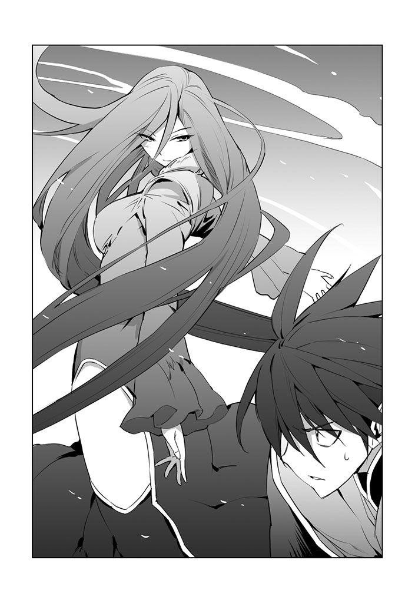
ジュリは腕組みしたままそちらを見た。
聖堂を背景に立つ、まるで異国の装束のような格好をした少女。編み上げた髪、金の飾り、紫水晶の瞳。そしてなにより、その顔半分を飾る、特有の魔導紋。偽者ではない。あんなふうに魔力に反応して光る魔導紋は他にはあり得ない。
「風の魔導師、ジュリ・メイガス......」
名前を呼ばれてジュリは背筋を伸ばした。
「シド......なんでこんなことになっちゃってるわけかしら。私、ギルドの中でも結構 頑 張 ってランク上げていってたのに」
「ああ」
「全部無駄になった上にこれから 裏 街 道 驀 進 ？ 闇ギルドこんにちは？ 黒魔導師として生きていく人生が広がっちゃってるわけっっ？」
「お前、だんだんやつに似てきたな」
「そうね、なんだか生きてるのが楽しくなってきたところ」
ジュリは、立ち上がった金髪の少女に気づいた。ルミナ・エルガフレッサはシドに 愚 弄 された。その目が、危険な光を放っている。
シドはルミナの心の 拠 り 所 、生家を復興するという希望を切って捨てた。だから 復 讐 を受けなければならない。
オゾが立ち上がる。胸元から左の 腰 まで、衣服とともに皮膚が破れている。だらだらと流れる血によって、よりいっそう顔色が悪くなったように見える。そしてオゾは巫女姫に視線をやった。それは何気ないものだったが、シドとジュリを身構えさせた。
「魔導師がふたり、剣士が 俺 ひとりじゃァ、あんまり荷が勝ちすぎる。 姫 さん」
ひどい出血だった。顔色の悪さがよりひどくなっている。
多くの魔導師は、剣士に身を守らせながら、呪文を詠唱する。シドのように呪文が短い魔導師は千人に一人だが、いくら彼が魔法を 駆 使 しようとしても、オゾとルミナが組めば必ず隙を作ることはできる。そう踏んで彼らは襲撃に踏み切ったのだ。
しかしジュリ・メイガスが現れれば話は全く変わってくる。そしてオゾは大怪我を負ってしまった。
事態は変化した。明らかに今は、襲撃者たちの方が、危機を迎えていた。
シドは 既 にそのことを察していた。しかし、オゾの顔からはなんら不安も恐れも感じられない。巫女姫は言うに及ばずだ。
彼らの 余 裕 は計り知れない。ここでわざわざ現れてくれた 牙狼傭兵団 の長を、倒しておくべきではないだろうか、とシドは右手を握った。
未 だ彼らは 憐 れみの目でシドを見ている。
違 う。シドは気づいた。彼らが見ているのは、ルミナだ。
「シド・マスター！ こっちを見なさいよ。私程度の魔導師には、正面切って向かい合う価値もないって言うわけ？」
眼差しに気づかぬまま、ルミナは 叫 ぶ。
「あんたみたいに 恵 まれた魔導師には分かりっこないのよ。全てを失った者の気持ちなんて。私、私は......っ、ただ、帰りたかっただけなのに......！」
巫女姫は不思議な笑みを浮かべていた。まるで、風のような、木のような、自然に宿るものの力を見せられたような。
「ルミナ、お前の 契 約 竜 をいただきます」
え、とルミナが空っぽな声で 反 駁 する。巫女姫が告げたのは単なる事実。 彼 女 は 嘘 も 偽 りも口にしない。ただ、確定した事実を口にしただけだった。
「おそらく、お前の竜はシド・マスターとジュリ・メイガスとの戦いで息絶えることになるでしょうが......喜びなさい。それは必要な 犠 牲 。神様との約束なのですから」
「なに、それ......団長......私、使い捨ての魔導師なんかじゃないって」
オゾはすまなそうに首をかしげた。
「すまんな、ルミナ」
巫女姫にとっても、傭兵団の長にとっても、自分は道で蹴飛ばした石ほどの価値もない。ただ利用され、使い捨てられる、便利な道具。自分の痛みも苦しみも、届かない。そのことを 悟 ったルミナは、震えた。逃げられなかった。足が動かなかった。
オゾが魔導師殺しと呼ばれているのは、理由あることだった。魔導師には固有の呪文がある。それはその魔導師と 契 約 した竜との約束の 言 霊 であり、他の魔導師には使うことができない。
他人の呪文を口にした場合、その魔力が条件を満たせば、契約竜は現前する。そして偽りの魔導師を 滅 ぼすのである。魔導師は皆そんなことにならないよう、間違っても他人の呪文を口にしないようにする。契約竜は偽りの魔導師を決して許さないからだ。
アニスのいた町が 壊 されたのも、そのようにして竜が現れたためだった。
そしてオゾは、おぞましいことに 幾 人 かの魔導師を飼っている。彼らを 恐 怖 でもって支配し、そして敵の魔導師の呪文を詠唱させるのだ。
彼の呪われた赤い剣は、竜すら 滅 することができるものだ。彼は現れた竜に 挑 み、勝利し続けてきた。契約竜を殺された魔導師は、魔導師ではなくなり、簡単に殺すことができた。
本当は彼らはシドの竜を喚び出すつもりだった。竜を喚び出し、滅することができれば、シド・マスターは魔導師ではなくなる。滅ぼすのは簡単なことだ。
しかし彼の竜を喚び出すためには、巫女姫の魔力は足りなかった。
「 暴虐の雲 の 内にあり し太 古の力 狂える大帝よ 今 こ そ舞い降 りよ 」
巫女姫の唇が、 子 守 歌 のように呪文をつむぐ。
「 我 が 敵 を 滅 ぼ せ ......」
「やめてぇぇぇ────っ」
ルミナは 絶 叫 する。心臓を 押 さえて座り込む。
「あ、あああああ、あああああっ！ 私の、私の竜が......あああああっ」
シドとジュリは目の前の光景に動くことができなかった。ルミナの周りに、 魔 導 陣 のような光が浮かぶ。それはあちらとこちらをつなぐための門だった。たくさんの光の 粒 が、そこから生まれ出た。まるで光る虫のようにそれらは倒れたルミナのそばを舞い、そして空に上った。
偽りの言霊による契約行使に 怒 り狂い、正気を失った竜が具現する。
金色の光を身に 纏 った 四 肢 をもつ長竜。八本の角を持つ狂える大帝は、四つの目で地面を 睥 睨 した。神聖なるものを 蹂 躙 した罪は、命をもって 償 わなければならない。殺すべきはどの魔導師か、見定めているようだった。
おそらくアイリーン通りの方でも竜の姿は見えているだろう。あるいは祭りに参加した人々は、これも余興だと感じるのだろうか。しかしシドたちは、町の心配をしている場合ではなかった。
大帝が襲いかかるべきは巫女姫だった。
彼女はなぜ、このような自殺 行 為 に身を投じたのか......というシドの疑問はすぐに氷解した。
巫女姫は全身の魔導具の力を発動させた。それはおそらく、ありとあらゆる魔導の中でも最強の効果を持つと言っていい力。敵を敵でなくすための、最高の戦略。
「 我が愛 し き子よ 」
彼女の全身の魔導具には、「 魅了 」の力が込められていた。それは狂った竜の心ですらなだめ、味方に変える。千年の時を 経 た純金、竜の血を固めたルビー、細かく細かく刺繍のように刻み込まれた魔導陣。そしてそれは、怒りに狂う竜のような、心を失ったものに最高の効果を生み出すものだった。
大帝は巫女姫に囚われたように、空中で頭を垂れた。まるで忠誠を 誓 う子犬のように。
「あ、あ、あんなの反則じゃない......っ」
ジュリがシドの腕を取る。
「逃げないと！」
「どこにだ。風と火の魔導師を片付けるにはあれくらいが適当だと見込んでもらえたんだろ。だったら相応にお返しするのが義務ってもんだ」
腕を振り払われ、ジュリは 唸 った。
二人は空を舞う 雷 竜を見上げた。大きさは、ノアの倍ほどだろうか。すさまじいほどの魔力を感じる。皮膚が帯電し、ぱちりぱちりと空気を震わせる。
八つの角、四つの目、 幾 千もの毛を帯びた 尾 。四肢には黒い爪があり、口には剣のような歯が並んでいる。
怒り。 狂 気 。敵意が 刃 物 のような 鋭 さで二人に 迫 ってくる。
あれを傷つければ、気絶しているルミナはただではすまない。シドもジュリもそのことを分かっていたが、しかしだからといってなんとかできる 状 況 ではなかった。戦わねば、雷に打たれ、倒れることになる。狂える大帝のもとに。
「びびってるんじゃねぇよ。お前の風は、雷くらい切れねぇのか？」
「...... 誰 にもの言ってるのよ。あんたの火は、あいつに届くのかしら？」
かれは、シドとジュリに眼差しを落とした。
その 硝子 のような目は、確実に二人を敵として見定めていた。
エリンたち、そしてジークは川沿いの 捜 索 を続けている。水の中に落ちたノアの 卵 はいくら捜しても見つからなかった。クールデール 卿 は水の中に落ちた卵のことは分からない、と言った。しょげながら 謝 るクールデール卿に、アニスは首を振って気にしないで、と言った。
川のそばで男たちが必死に声を上げ、下流では 網 を張ろうとしている。
「クーちゃんが謝ることじゃないわ。エリンさんたちが 一 生 懸 命 捜してくれてるもの、 大 丈 夫 、きっと大丈夫よ......」
こらえきれずに 涙 がこぼれる。
「アニス様......ふおぉっ？」
クールデール卿が頭を持ち上げる。アニスが異常を感じたのはそのときだった。皮膚がぴりぴりするような感覚、空気が帯電しているような感じを覚えた。不安そうにあたりを見回す。
「あちらです、アニス様！」
「ええええっ？」
空中に金色に光る竜が浮かんでいる。大きい。舞い降りても町が壊れるほどではないだろうが、暴れれば 甚 大 な 被 害 が出るだろう。
「クーちゃん......あの子、苦しんでいるわ。混乱してる。どうして、どうしてって言い続けてる。悲しんでる。なぜ、ルミナ......って」
祭りの 喧 噪 が、恐怖の悲鳴に変わった。通りでは逃げろと叫ぶ声がする。泣き声、 怒 号 、悲鳴、あの騒ぎに巻き込まれなくて良かったとアニスは自分を抱きしめた。 今 頃 踏 みつぶされていたかも知れない。
「あれはルミナの契約竜ね、クーちゃん。雷の......とても強い子だわ。なにか、 目 隠 しみたいな......変な力を受けたみたい。殺す、殺す、殺す、 黒 髪 のチビどもを殺すって！ クーちゃん、まさかあの下にいるのは......」
「可能性は高いですな。あのチビめはよく戦いに巻き込まれていますからして」
「どうしようクーちゃん、シドが、あんな強い子に襲われたら、シドが危ないわ」
アニスの手元からクールデール卿が飛び出た。
川をあさっている男たちは、 騒 動 に気づいていたが、まだ逃げ 出 してはいなかった。指示を飛ばしているのはエリンだ。皆、一生懸命に卵を捜してくれている。 彼 らのことも、守らなければならない。竜に、彼らを傷つけさせたりしない。
アニスは必死に考えた。
「ノアはだめ......、ヴォロも無理......アルファレスたちならどうかしら」
「アルファレスたちの攻撃は届きますまい、雷竜は空中にいますから。雷で 一 網 打 尽 にされるでしょう。アニス様、申し上げましたね。あなたが今までに喚ばれたものは、忠誠心は強いけれど、力は弱いのです。あなたにはもっと強い竜を喚ぶ力がある......だけど、あなたには迷いがありました。力を手に入れることを、恐れていました」
空中の雷竜がのたうった。一瞬、空気を切り 裂 く 巨 大 な風の刃が見えた。 巨 獣 の爪のような形をしたそれは、雷竜の身体から放たれた 幾 筋 もの雷を 叩 き 斬 った。続けざまに放たれた風の魔法が、空を切る。
黄金の竜は空に浮かんだまま、 威 嚇 体勢を取った。
「クーちゃん！ あれ、ビアンカよ。シドと一緒にいるんだわ！ なんでそんなことになってるの？ どうしよう、ねえ、どうすればいい？ どの子なら戦える？」
「今までの竜には、不可能です。狂える雷竜を 抑 えこむことなど」
「でも......それだとシドとビアンカがあの子に 倒 されちゃう......」
「仕方ありますまい」
「クーちゃんっ......」
「仕方ないと申し上げたのは、彼らの命をあきらめろという意味ではありません。あなたの命を賭けなさい、という意味です」
「..................」
透 き 通 った青い目がアニスを見ている。
運命はいつも、決断を迫る。戸惑っていたら簡単に失ってしまう。守る、と言ってくれたのだ。シドも、ビアンカも。
そして自分も誓ったのだ、きっと彼らにこたえる、と。
空を焼き 尽 くさんばかりの炎が生まれた。大地から放たれた炎、大輪の花のようなそれが雷竜を包み込む。城のように巨大な炎だった。 尋 常 の 魔 力 ではない。普通の魔導師の何倍もの魔力、それを操る才能、覚悟、度胸、全てを 兼 ね 備 えた魔導師があそこにいる。
それは竜すら簡単に滅ぼしてしまう力に見えた。
しかし次の瞬間、雷竜は全身から雷を放った。何百もの雷が地面に落ちていく。
人気のない場所を探すのは簡単だった。空の竜に恐怖し、人々は姿を消していた。まるで通りは 廃 墟 のようで、アニスは小さな広場に入り込んだ。遠くに金色の竜が見える。 狂 乱 している。狂いながら、叫んでいる。人には分からない言葉で、ルミナ、ルミナ、ルミナ、悲しい、苦しい、と。
アニスは両手をぐっと 握 りしめた。待ってて、私はあなたも助けたいの。その 呟 きを白竜だけが聞いていた。
「クーちゃん、準備できたわ」
「さあ、アニス様。今までで最大の魔力を練ってください。身体の中にある全ての力を解放するのです。そう、あなたの魔力があれば、本当は今でも幻祖が喚べるのですよ。ですがあの方は手の届く場所にはいらっしゃらない......現在の世界にはおられないのです、アニス様」
「............」
目を閉じ、深く呼吸した。
いつもイメージする太陽では足りない。もっと激しい、もっと大きな力を。
アニスは最強の力を想像した。
それは、赤い炎だった。過去を燃やし尽くし、アニスを未来に駆り 立 てた。運命すら焼き滅ぼす、絶大な力。
誕生と 蘇 生 の炎。
そしてビアンカ......いやジュリが導く、雷すら切り裂く風。
炎と風が生み出す嵐。 薔 薇 のように、心臓のように、生まれ、死に、流れ、根源となって回転する。 奥 底 にあるのはかつてみた 幻 想 。過去、そして未来。
幻祖の不思議な眼差し、巨大な力、時の車輪、開かれた花、伸ばされた手、祭りは始まった、たくさんの言葉。
アニスはいつもよりもっと底まで魔力をすくいあげ、練り上げた。
「アニス様。まだ足りません。まだ......まだです！」
周囲には風が生まれていた。アニスは握っていた両手の力を 抜 いた。こわばることはない、ゆるやかに、自分を 赦 すことで、解放される。
温かな水。優しい涙。遠い、記憶。土のにおい。
積み重なった言葉と記憶のなお奥底、 普 段 は忘れている記憶がある。触れられたことのない宝石のように、その記憶は静かに 眠 りについている。
小さなアニスに額を寄せる、 微笑 む顔。温かな手。笑っている自分。優しかった時間。編まれた赤い髪は、自分と同じ。
だいすきよ、アニス。どうかあなたが、幸せでありますよう。
聞いたことのないはずの子守歌が聞こえる。
その顔はポーラのものになった。アニス、いつでも 戻 ってくるのですよ。ここはあなたの帰る場所です。
アニス。
アニス。
おかあさん、とアニスは呟いた。
次の瞬間アニスの魔力が 増 幅 した。まるで 殻 を破ったように、魔力の 桁 も質も変わった。アニス、アニスと呼ぶ声と共に、力が引き出される。
だめ、いけない、これ以上はお前が死ぬ、滅びてしまう。
火の中に飛び込むんだ。
たすけて。
世界を変えぬよう、お前は選ばれた。運命ではない、すべては意志。
さあ、竜を喚びなよ。あの人を、世界を救うんだ。
アニス、手を伸ばせ。俺はここにいる。
アニス。
花 嫁 。
白竜の言葉か、自分の内側の言葉か、もはや判断ができない。魔力の 渦 の中心で、アニスは 祈 った。
召喚とは祈りだった。
「古き血の盟約に従い
我が呼び声に 応 えよ」
導かれるままに、巨大な門の 扉 が開く。
足元に暗い海が広がる、幻想。そこは暗い水の世界だった。恐ろしいほど深いその海の果ては、時すら 超 えた沈黙の世界につながっている。
アニスは不意に知っていた。ここは、水竜マギストラの居場所。そこには命はひとつしかなかった。彼女だけが、 唯 一 絶対の存在だった。過去も、未来も、この世界が生まれ、滅びるまで。
アニスの魔力は、彼女の存在する場所と自分の場所をつなげ、彼女が通り抜けるだけの大きさの門を開いたのだった。
しかしそれだけではあちらにいるものを喚ぶことはできない。
肉色をした空。生温かい空気。果てにあるのは、水と空がつながる一本の線。視界の果ての向こうまで続いている灰色の海の中に、山が見える。いや、山ではない、穴だ。いや、穴ではない。それは、長大な身体をした、水竜だ。
湖の中で身をくねらせ、こちらの様子をうかがっている。
足元から恐怖が立ち上る。アニスは絶叫しようとした。
「しっ、アニス様、大丈夫です。ただし 騒 いではいけません」
ぴっとりとクールデール卿の身体が口に巻き付いて、悲鳴を止めた。アニスは 馴 染 んだ声に安心し、涙を 拭 いた。
「クーちゃん......どうなってるの、これ。私、こっちに来ちゃったの？」
「そうともいえますし、そうではないともいえます。アニス様、今考えるべきは身体の所在についてではありませんぞ。さあ、水竜マギストラに話しかけてください」
水に沈む彼女の身体は、見たことがないほど巨大だった。そしてマギストラは、アニスの心を感じ取ったかのようにその身を起こした。
まるで川が立ち上がったかのようだった。彼女は下からアニスの身体を飲み込むように、顔面を上向けて迫ってきた。
虚 無 の色をした真円の目が三つ並んでいる。この海しかない世界に 相応 しく、異質な色だった。
水竜の 愉 悦 が分かる。アニスが 怯 えているので、楽しんでいる。アニスの身体はあまりにも小さかった。そのまま口を開ければ、マギストラは簡単にアニスを飲み込むことができた。
『ねぇ、クールデール』
口から出る音ではない。それは心の声だった。
『わたしはその子を飲み込みたい......』
「それは困る、マギストラよ。我が 輩 はあの方の配下として、それを禁止しなければならない」
『ああ...... 憎 い......』
白竜に首をつつかれ、アニスは口を開いた。
「あの、マギストラさん。 差 し 支 えなければ、あなたの力を貸していただきたいのです」
世界に比べ、アニスの身体はあまりに小さかった。その声がマギストラに届いたとは 到 底 思えなかった。
『............』
しかし、 突 然 口を挟んだ人間の小娘に、彼女は明らかに気分を害したようだった。眼球に赤みを帯びた光が宿る。
『竜の花嫁、わたしの 寝 所 を 荒 らしたことを、許してあげましょう。でも、お前の願いをきくいわれはないわ』
「お願い......！」
『うるさいわ。帰りなさい、わたしは眠いの』
マギストラは水中に戻ろうとする。ああ、とアニスは下に向かって手を伸ばす。しかし彼女の 巨 体 を止められるわけもない。
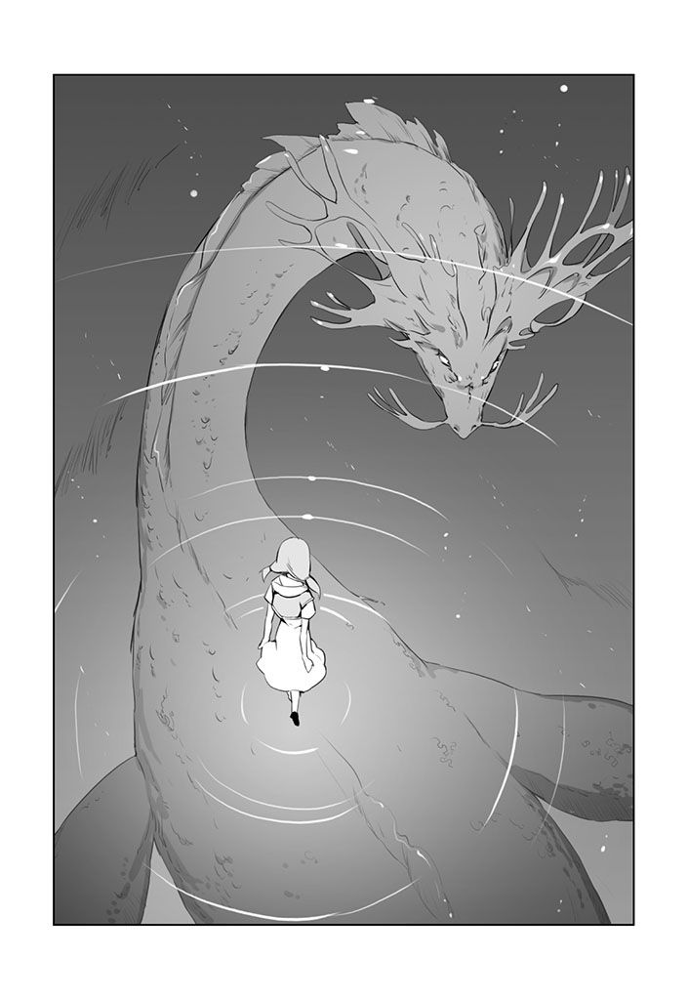
「アニス様。下手に出て 頼 んでも、竜は言うことを聞きません。あなたは、竜の花嫁です。なんのためにあの始末の悪い愛玩竜を召喚したと思いますか？ 支配し、言うことを聞かせる訓練をするためですぞ」
「あれを......支配？」
殺される、とアニスは思った。不可能だ。あんなものを、支配できるわけはない。マギストラは水中に戻ろうとしている。音のない水の中で、再び眠りにつこうとしている。
「早くしなければ、マギストラは二度と耳を 傾 けない。あの黒髪のチビめが雷竜に殺されても、良いのですか。アニス様」
「だ......だめぇぇぇっ！」
アニスの中にある魔力が解放される。それは声となって世界を震わせた。まるで 嵐 のように。灰色の海が荒れ、水竜は身をよじらせた。
竜の世界では、魔力が何よりもものをいう。見かけの巨大さではない、魔力の強いものが強いのだ。アニスは無意識でそれを悟った。自分の中に在る力、それを、マギストラは決して無視できない。
「マギストラ、私を助けて！ 力を貸して。お願い、雷竜がいるの。町で暴れてるんだけど、混乱してるだけなの......あなたなら、あの子を助けられるわ！」
『おぉ......うるさい。 皮 膚 が破れるかと思った』
クールデール卿の挑発は、最も良い形で 報 われた。アニスには竜に命令するという、支配力が欠けている。しかしあのマルスを追いかけながら三 匹 の愛玩竜を喚び出したときは、かれらをうまくあやつってみせた。
アニスは、誰かのためならばその支配力を発揮することができるのだ。
『いいわ、今回は言うことをききましょう。ただし次も同じとは思わないで。竜の花嫁......あなたは 所 詮 、神の道具なのですからね』
さあ。名前を呼んで。
その声に導かれるように、アニスは叫ぶ。
「 門を超えて来たれ ...... 闇 色 の 母 竜 ！」
は、と気づいたときには元の広場に立っていた。アニスは身体の 平 衡 を失い、前に倒れた。下は湖ではない、土だ。勢いよくぶつけたせいで、 口 の 端 を切った。たくさんの魔力を使ったためだろう、ひどい 目 眩 と 脱 力 感に 見 舞 われている。
必死に両手で地面を押しのけ、頭を持ち上げる。
そしてアニスは、空にいる二匹の竜を見た。金色の竜は夜空でもはっきり見えたが、もう一匹の竜はまるで闇が舞い降りたように、一目見ただけでは判然としなかった。しかし、彼女は確かにそこにいた。
雷竜は苦しんでいた。狂気に 引 き裂かれそうになりながら、殺せと命じる声に従おうとする。苦しみの余り、全てを壊してしまおうとする。
闇色をした竜は、雷竜の身体を包み込んだ。足がすくむほど巨大な光景なのに、その竜の動きには全く音がなかった。まるで幻想のように。
闇に包み込まれた雷竜は、 徐 々 に力を失っていく。まるで、 泣 き叫ぶ赤子が母の 抱 擁 を受けたようだった。混乱はなだめられ、狂気は抑えられ、心が 平 穏 を 取 り戻していく。雷竜は再び光の粒になった。幾百もの光が、再び元の場所にかえろうとする。
そしてマギストラも消えていく。あの場所にいるものたちには、事態が飲み込めないかも知れない。あるいはシドならば、あれはアニスの喚んだものだとちゃんと分かってくれるだろうか。
「あの竜は......」
巫 女 姫 は、空を見て絶句していた。闇色の竜は 突 如 現れ、月を 覆 い 隠 した。そして人が聞いたことのない竜の歌をうたいながら、ルミナの竜を包み込んだ。 炎 に焼かれ、風に 切 り裂かれて狂乱していたはずの竜は、見る間に静かになった。闇色の竜はうたいながら、ルミナの竜を眠らせ、そして彼の世界に 還 したのだった。
全てが終わったとき、誰もが沈黙していた。
シドははじめ竜に 猛 火 を浴びせたが、やがてオゾが巫女姫の道具を使い、 怪 我 をした身ながら動けるようになった。シドはオゾの 攻 撃 を防ぎ、ジュリが雷竜の攻撃を防いだ。彼女の 魔 法 が空気を切り裂かなければ、この場に幾百もの 雷 撃 が落ちていただろう。それはもしかしたら、巫女姫の命をも 奪 ったかも知れない。そうなれば大量の 魔 導 師 が同時に息絶えただろう。
巫女姫は賭けてはならないものを賭けていた。彼女は決して 神 殿 の外に出てはならない存在なのだ。
闇色の竜を見たとき、シドも、ジュリも理解した。あれはアニスの喚んだものだと。
「この失敗すらおそらく、神様との約束です」
巫女姫は 軽 やかにそう言い放った。その瞳には敗北の色はない。彼女はただ単に、真実を口にしている。
「いずれ 来 る未来、あなたは敗北する。それは今日ではなかった。それだけのこと......それはもう、どうでもいい。わたくしはいま、このときを待っていました」
川の中にさしのべられたその手に、流れてきた 袋 の 紐 が引っかかった。まるで彼女の言葉通り約束されたことのように、当たり前みたいに起きたことだった。巫女姫がなにか呪文を口にすると、それはふわりと 浮 き 上 がった。袋だけがぱさりと地面に落ちる。
中にあったものが現れる。
「それは......ノアの......？」
ジュリの呟きを聞き、シドが絶句する。
巫女姫が手に入れたのは間違いなく、ノアの卵だった。
シドは目の前の事態についていくのに数秒かかった。ノアの卵が 盗 み出され、水の中に落ちた。川を延々流されて今、巫女姫の手の中にある。その 経 緯 は彼の知るべくもないが、ノアの卵を、たった今巫女姫が手に入れた。それ以上の事実は今のシドには必要なかった。
「わたくしには見えました。 他愛 ない 翼 竜 の子。この子こそは、祝福を受けている。わたくしと、召喚者をつなぐ 絆 となる」
優しい手つきで宙に浮かぶ卵の表面を撫で、巫女姫は目を細めた。
「シド・カルツォーク、あなたは言いましたね、お前の母以降の巫女姫は、お 飾 りだと。......その通りです。お前の母が世界の秘密を抱いて死んだ、その日から神殿の古代竜は目覚めない。あるのは呪わしい予言だけ。これほどまでに世界は歪み、狂っているのに、どうして生きなければならないのでしょうか。この子のように未だ生まれぬ 綺 麗 なものだけが満ちれば、世界は救われるのに。ねぇ、シド・カルツォーク。お前の父親は間違っていたと思います。召喚者が世界を滅ぼしてくれるならば、きっとそのひとはこの世を救う救世主なのです。わたくしは、きっとその方を手に入れてみせましょう」
どこか夢うつつのうわずった口調に、シドは寒さを感じた。巫女姫は 虚 ろな 紫 水 晶 の目でこの世ならぬものを見つめている。そしてその身体があっさりと後ろを向いた。
「待て！」
「おっとそれ以上近寄らないでくれ、シド・マスター。......いや、シド・カルツォークか」
赤い剣がシドの行く手を 阻 む。
オゾ・ガルドレッドは剣を上段に構えている。
「てめぇらとあいつの意見は 華 々 しくまっぷたつに分かれてる気がするんだが、気のせいか。 牙狼傭兵団 」
「そうだねェ。まあ、誰にも欠点はある。 些 細 なことだね」
「ふざけるなよ 尻 軽 野 郎 が。てめぇは自分が 狙 うディルミータを、巫女姫が守ろうとしたらどうするんだ」
「さて」
赤い剣が生き物のように動く。シドは後ろに跳んで避けた。シドを攻撃するとみせ、真に狙われたのはジュリだった。剣の一撃を避け、ジュリは座りこんだ。どうやってもオゾの背後を走り去ることができない。
「どうするべきかねえ。俺たちが実際誰に仕えてるか、知りたいかい、 小 僧 。いや、お前は反逆教皇の 息子 なんだろう？ だとしたらお前は、こちら側の人間じゃないか。シド・カルツォーク」
その言葉はシドの顔色を変えさせた。 即 座 に魔法の 詠 唱 が始まる。
しかし詠唱が完成しても魔法は発動しなかった。
幾 度 も詠唱を 繰 り返した。空を 焦 がすほどの巨大な炎を放った。既に、シドの魔力は尽きていたのだ。
オゾはそのことを悟り、目を見開いて喜んだ。
「はっは！ 好都合だなあ、これで話ができるってもんだ。なあ、シド。お前の力には利用価値がある。俺たちのもとに来ないか」
「人間ならば、犬にしてやると言われて喜ぶか」
オゾは歯を見せて笑った。
「言うねぇ。だがお前は本当に人間様かな。あるいは、誰かの 操 り 人 形 かも知れない。お前のように、疑いを持たない者を操るのは簡単な話さ。操られていることにすら気づかない」
「ご高説というほどでもない説だな。だからなんだ？ それで？」
「つまらんな。......死ね」
オゾの 振 り上げた赤黒い剣身は、血を 塗 りたくったように見える。 肉 食 獣 が口を開いた、あとは閉じるのを待つだけだった。避ける力はもうない。体中の力が 枯 渇 している。この男に、そして雷竜に、魔法を使いすぎた。
紫水晶の目が、彼を見ていた。
それは血の海に 沈 んだ母の姿を思い出させた。
「シドーッ！」
閉じようとした目が見開かれる。 萎 えたと思った足に力が 蘇 り、シドはかろうじて後ろに跳ぶことができた。赤い 牙 が胸元を切り裂いていく。オゾの剣は、本当であればシドの命を絶っていただろう。しかし、彼もまたジュリの魔法によって傷を負わされていた。深くえぐられたその胸元の傷が、本来の剣筋よりも 萎 縮 した小さなものにしたのだった。
「シド、シド、大丈夫？ 血が出てるわ！」
「ばかやろう......来るな」
アニスの手が、倒れようとするシドの身体を受け止める。そしてすぐそばを 駆 けていったのは、ジークだった。
シドを殺そうとした一撃を放った格好のまま、オゾの身体は止まっていた。その振り抜かれた剣を、 斜 め 上 から叩き折るようにジークの一撃が落ちた。く、と 唇 を 噛 みオゾは退いた。
「来るなら来い、シド・カルツォーク！ 最後の教皇にしてやろう、お前こそは正統な後継者なんだからな！」
叫び、オゾは両手を広げて笑った。そして魔力の宿った古代王朝のコインを懐から出した。ジークが再び攻撃を繰り出したが、 剣 を落とした先に、オゾの姿はなかった。魔法の力によって、傭兵団の長の姿は消失してしまった。
「大丈夫？ ビアンカも、立てそう？」
ジュリの姿のまま倒れていたビアンカだったが、ジークの声を聞き、苦痛をおしてビアンカの姿に戻ったのだった。あまりの痛みと 疲 労 にふらふらしている。
「いい、 触 るな。いいかアニス、あいつらがノアの卵をもっていった」
アニスはええっ、と声を上げた。シドはアニスの 肩 をつかむ。斬られた苦痛で、 脂 汗 を流している。
ジークはふと赤い剣が落ちたままだったことを思い出してそちらを見た。すると、そこには赤い水たまりがあるだけで、剣は落ちていなかった。まるで男の手を 離 れた 途 端 、剣が 溶 けてしまったかのようだった。
「アニス。お前、ノアの卵は 喚 べないのか」
「あの......あのね、喚ぶのには名前がいるの。ノアの子にはまだ、名前がないから......」
「そうかぁッ！ 我が 輩 盲 点 でありましたアニス様！ 目つきの悪い少年よ、たまには役に立つこともあるのだな、 褒 めてやろう！ 我が輩の 髭 が抜けちゃったとき、それを 下 賜 してもよいッ」
傷の痛みの最中でも、腹に 据 えかねたらしく、シドは中指の 爪 を 弾 いてクールデール卿の頭を向こうに飛ばした。
「クーちゃんっ！ シドはどうしてそんなにいじめっ子なの！ クーちゃん、ねえ、しっかりして。方法があるなら教えて。クーちゃんっ」
「名前を付ければ良いのです......今、ここで！」
再びアニスは召喚の体勢に入った。あれほどの竜を喚び出した後だ、魔力は残り少ない。しかしノアの卵を喚ぶのにそれほどの力は必要ないでしょう、とクールデール卿が断言した。それよりも、ノアの子が名前を受け入れるかどうかの方が問題です、と。
アニスは首を振る。
たくさんの名前を考えていたはずだった。なのに、今はひとつも思い出せない。 荘 厳 で、 華 麗 で、ロマンチックで、運命を感じさせる美しい名前を！ と意気込んでいた。しかし今は 緊 張 のあまり、どんな名前も浮かばなかった。
「エルパージャ......」
他の者たちが 固 唾 をのんで見守っている。
「え、エルパージャ......」
繰り返される 呪 文 にがくりと肩を落とす。アニスは 焦 った。卵をイメージする。どこにあるんだろう、と意識で追いかける。アニスはさっき、水竜の居場所に飛んだときにコツをつかんでいた。
ノアの卵は、緑色の光としてアニスには見えた。
町を走り去っていく者がいる。フードをかぶり、遠くに遠くに行こうとしている。アニスの意識はその姿をとらえた。
風のように意識を飛ばし、追いかける。手を 伸 ばしながら、必死に叫んだ。
「返して！」
人の世の声ではない。しかし、相手には聞こえたらしい。足を止めた。だが相手にはアニスの姿は見えない。アニスの手が、ノアの卵をつかむ。
少女は、奪われようとしていることを察したらしい。ノアの卵を取られるまいと、なにか呪文を口にしようとした。しかしそれは一秒 遅 かった。
「エルパージャ......ルーシャ！」
悠 長 に名前を考えている時間など、全くなかった。
ルーシャという名前など、リストにもなかった。意識が卵に 触 れた途端、その名前がアニスの中にあふれた。そして 衝 動 のままに、身体は叫んでいた。
消えていこうとする卵を、少女が抱きしめる。そしてその紫水晶の目が、まるでぼんやりと浮かぶアニスの姿をとらえたかのように見開かれた。
「あなた、誰？」
少女には間違いなく、アニスの姿が見えていた。
アニスは 驚 いた。 逃 げなければ、つかまる。この少女に、 捕 らえられる。そう悟り、恐怖した。
次の瞬間元の身体に戻っていた。
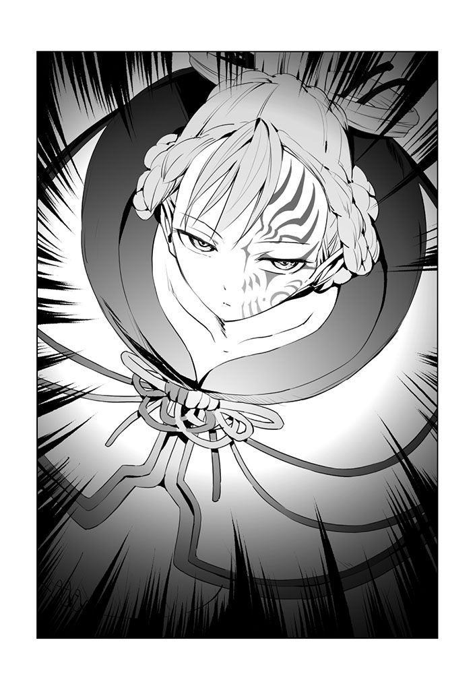
手には、卵を抱いていた。ぺたりと 座 り込んだ。 歓 声 を上げたのは元気なジークばかり、シドもビアンカも安心のあまり脱力し、アニスと同じく座り込んだ。
「やった、やったぜアニス！ 最高だぁ！」
肩を叩かれながらアニスは、
「ごめんね、ルーシャ。 怖 かったね」
とノアの卵を抱きしめ、語りかけた。
戦いの後気を失ったシドが目を覚ましたのは、一日後のことだった。目を開けたまましばらく 天 井 を見つめていたが、頭がはっきりしてくるとともに視線をさまよわせた。ここは、ジークの家だった。
「今日も目が覚めなかったらどうしようかしら」
「その場合は、我が輩と二人で旅に出るといいかと存じます。 素 敵 ですよね、世界の 放 浪 ！ 我が輩は色々な町で曲芸を 披 露 するのですよ。村でも町でも 拍 手 喝 采 。おひねりもらい放題ですぞ。旅の一座の名前は、クールデール卿とアニス様と 愉 快 な仲間たち。そうですな、ビアンカ殿と、マリエル殿であれば、我が輩とアニス様の旅の 邪 魔 になることもないかと存じます。でもロッテ殿は論外ですな」
「あら、クーちゃん。みんなの名前を覚えてくれたのね。すごいわ！」
「でもつり目とたれ目のことは知りません。覚えません。分かりません」
「そこもおいおい覚えていってくれたらいいわ。でもシドとジークってそんなに覚えづらい名前かしら？ むしろ簡単なような気がするけどな」
「............アニス様、我が輩は意地悪でもって覚えないフリをしているだけですから。別に 記 憶 力 に問題があるとかそういうことではございませんから」
「あら、そうだったの。でもシドは意地悪だから、少々やり返したとしてもあんまり良心は痛まないわねぇ。いえ、もちろん 嫌 がらせはしてはいけないわ。そこは 肝 に 銘 じているんだけど、でもそれでもなお 我 慢 できないのが......そうね、 破 滅 への衝動っていうのかしら。ちょっとロマンチックな言い方よね。ほんとは落とし穴を 掘 って自分ではまるような 真 似 なんだけど。最近分かってきたの」
「大人です、アニス様」
「シドが起きたらきっと『お前はあのとき何を喚んだんだこの大 馬 鹿 野 郎 ......』なんて怒り出すんだろうなあ。それを思うともう少し 寝 ていて 欲 しいくらいなんだけど、だめよね、そんなこと祈ってしまっては」
「我が輩、 永 眠 でも構わないかと思います」
「マギストラが来てくれたことはほんとに幸運なんてものじゃなかったけど、まさかレダ通りが竜の現れた名所になるとは思わなかったわ。記念のお 饅 頭 には驚いたわよね。あっという間に売り出されて、売り切れたらしいわ。ディーナさんは 不 味 いって言ってたけど、結構 美 味 しかったわよね」
「あの竜がとぐろを巻いた形は正直、 微 妙 でしたな。茶色いし」
会話はいつまでたっても終わる様子がなかった。最終的にシドは 咳 払 いし、それでも気づかれなかったので二度目の咳払いをし、それでも気づかれなかったのでアニスの後頭部に手刀を落とした。
「きゃあ！ なにするの、シド。寝ぼけてるの？」
「さっきから起きてたんだよ」
アニスは 眉 をつり上げたが、しかしその怒りを収めてしまった。シドの顔を近くでまじまじと 眺 め、
「もう元気になった？ 大丈夫？」
とたずねた。シドは服の上から腹を 撫 で、ああ、と応えた。
「傷はね、エリンさんが連れてきた 治 療 師 の女の人が治してくれたのよ。オレグさん 悔 しがってたわ、あのときシドを一人にしなければこんなことにはならなかったのにって」
「ああ......」
「なんでもあのとき兵舎で態度の悪い兵隊さんに、訓練をつけようとしたんですって。その勢いで、ぎっくり 腰 になってしまったのよ......」
というアニスの説明を聞いてシドの 眉 間 にしわが寄った。
シドがその後オレグの部屋に行くと、 寝 台 の上でオレグが、
「おお、シド、目が覚めたか。俺の方は...... 面 目 ない」
と、悪びれない 笑 顔 で言ったのだった。
「一人にして悪かった。俺も戦いたかったが......」
「いや、気にするな。あれは俺が不注意だった。怪我の方は大丈夫か？」
「 頑 固 なぎっくり腰でな、治療師が言うには剣を持てるまで十日ほどかかるらしい。旅に出る話だが......悪いが少々待ってもらえるか」
「まずは自分の身体を大事にしろ。オレグ」
そう言われ、オレグはむう......と唸った。
オレグの部屋を出たシドに近づいていったのはジークだった。
「もう大丈夫か、怪我」
「ああ、治った」
「じいさん、怪我してただろ。年の割に化けもんじみてるけど、それでもやっぱり年なんだよなあ......んで、シド。単刀直入に言うけど、連れて行くなら俺にしとけよ」
シドはかすかに目を見開いてジークを見つめた。ジークは照れたように笑いながら、
「じいさんには 及 ばないかもしれねぇけど、俺、結構やれると思うぜ？」
「学校はどうした」
「やめてきた。俺の道はあそこにはないってはっきり分かったよ」
家族が聞いたら目をむくようなことを口にしたが、ジークの態度にはもう決めてしまった者の 爽 やかさがあった。まだ、捨てるものの価値を分かっていないかもしれない。単なる 無 謀 かもしれない。
しかし、ジークは 後 悔 しないだろう。
「あー......」
「いやあああジーク──っ！」
シドが返事をする前にジークは背後から 突 撃 を受けて前につんのめった。アヒルの羽をまき散らしたままビアンカの姿になったらしい。涙目でジークに抱きつき 訴 える。
「子供たちが 尾 羽 をむしったのぉ！ 痛いのあれほんとにっ」
「あー、ビアンカ......昔から気になってたんだが......」
「え？ なに？」
「アヒルの尾羽って、人間で言うとどこに当たるんだ？ まさか 尻 ......」
ぱち・ぱちーん！ とジークの 頬 が綺麗な音を立てた。平手打ちの 免 許 皆 伝 と言ってもいいほどの 腕 だった。
「なにが言いたいのよはっきり言いなさいよばかぁ！」
「言った......よな、俺......」
ジークが 膝 をつくのを横目に見ながらため息をつき、シドはその場を離れた。
「シド様ーっ！ シド様シド様シド様！ どうかロッテにお顔を見せてくださいな。あああおいたわしい......シド様がお怪我をなさるなんて、わたくし泣いてしまいそうでしたわ！」
「幼児に抱きつかれると 迷 惑 だと思うわよー？」
廊 下 を進んでいくと、ロッテとマリエルと三姉妹がいた。どうやらマリエルとロッテは代理公の城に戻るところだったようだ。マリエルはシドを見てほっとしたように笑顔を見せた。
「父から至急戻るようにと言われて......出発前にシド様にご 挨 拶 できてよかったです」
「ユージェスにはまたすぐに会いに行く。よろしく言っておいてくれ、エリシアにも」
「はい」
この少女も、最近はかなり表情が豊かになってきた。昔に比べれば、 雲 泥 の差である。きっとこれからも変わり続けていくのだろう。
「シド様。 珍 しいですね、お笑いになるなんて」
「そうか？」
「きっと、アニスの 影 響 ですね」
似たようなことを考えていたとは言えなかった。 慌 てて走ってきたアニスが転びそうになりながらマリエルに受け止められた。二人は 別 離 の言葉を 交 わしつつ、またすぐに会う約束をした。ビアンカも、少し 遅 れてそれに加わった。
シドは無言でマリエルとロッテが竜車に乗り込むのを見ていた。代理公はきっと 諸 手 を挙げて 娘 たちを 迎 えるだろうが......おそらくマリエルはまだ父を許していない。
この数日後、倉の中に永久 封 印 したはずの『イーデンの薔薇 一巻』が流出し、城下町から近辺に住む娘たちのハートを捕らえた。...... 乱 獲 状態だった。
一巻しか存在しない幻の本の作者はすぐにつきとめられ、マリエルは「二巻をお願いします！」「二巻を読まなければ生きていけません！」「アストリッドは、一体どうなるんですかああ」という熱い 声 援 に応えることになる......が、それもこれも父のせいだとマリエルの無表情はいよいよ 凍 りついたのだった。
「すぐにロッテに会いに来てくださいねえええ......」
と泣き声は帯を引きながら、空高く消えていった。シドは 隣 で手を振っていたアニスに、
「俺たちもすぐに帰るぞ」
と告げ、アニスは慌てて準備に走るのだった。
別れのときにはエリンは 真 剣 に悲しそうな顔で、力いっぱいアニスの頭を抱きしめた。
「エリンさん、ユーリさん、ディーナさん。 一 生 懸 命 卵 を捜してくれてありがとう！」
「いいえあんまり役に立てなかったわ。代わりと言ってはなんだけど、マルスの 奴 には死ぬほど、死ぬまで反省してもらうことにしたから心配しないでね」
クールデール卿はユーリに撫でられてまた 硬 直 し、ディーナは「シド君にふられたぁ......」とすみっこで落ち込んでいた。
「また来て。いつでも来て。何度も来て。明日来てくれても構わないわっ！」
エリンはなかなかアニスを離そうとしなかった。未練がましく離れようとしない指を頑張って離し、切ないため息をついた。
「ジーク、あんたも迷惑かけるくらいだったらすぐに舌を噛むのよ。アニスのことは任せたわ。 口 惜 しいにもほどがあるけど。ああ悲しい」
「......って首を絞めるんじゃねぇよ！」
三姉妹は思い思いにジークをいじめ、そしてしばしの別れを告げるのだった。
ちなみに三姉妹はこのときまだ、ジークが軍学校をあっさり 辞 めてしまったことを知らなかった。後にオレグからそのことを知らされたエリンは、
「あいつめ......次に帰って来たときは、 極 刑 ね......」
と呟いたのだった。そのときジークが背筋を 震 わせたかどうかは、不明である。
アニス、ビアンカと竜車に乗り、その次にシドはアニスたちが驚く人物を連れてきた。
ルミナである。ルミナはやけくそのように足音高く竜車に乗り込んだ。そして勢いよく席に座り、しばらくの間尻の痛みに眉をつり上げていた。
「どうして私があなたたちと 一 緒 に行かなければいけないのかしら？ さっさとあの 緋色の女神軍 にでも 突 き出せば良かったんじゃない？ 騒 乱 罪 に、傷害罪、 異 端 罪、罪状にはことかかないと思うけど」
暗い目で言いつのるルミナに、シドは皮肉な口調で答えた。
「別にお前の喜ぶとおりにしてやる義理はない。お前が暴れて逃げ出さないように、俺が 監 視 するだけだ」
ノアはすっかり元気を取り戻していた。いつものように走り出し、そしてたっぷりと風を受け止めると、飛んだ。アニスにはもう慣れたことだったが、ルミナは初めてだったらしい。むっつりした態度をかなぐり捨てて、高い悲鳴を上げた。
空に上り切ってからは自分が悲鳴を上げたことなど忘れたように 沈 黙 していたが、つり上がった眉の角度がもっと険しくなっていた。
「私、どこに連れて行かれるのかしら。もしかして代理公のお城の 牢 屋 の中？ そこにはカイルスが先に行ってるかも知れないわね。それから一緒に 拷 問 でも受けるのかしら。言っておくけど私、ほとんど何も知らないわよ。なにしろ 捨 て 駒 にされたくらいですものね」
「お前程度の情報なんかに期待するほどおちぶれてない」
ルミナはぎっと音がするほどきつい目つきでシドを 睨 みつけた。竜車の荷台の上で暴れればすぐに青空の下に真っ逆さま、と分かっているだけに動きはしなかったが。
ルミナはシドの隣に座っているビアンカ、そしてシドの前、つまり自分の隣に座っているアニスに視線をやった。ビアンカはルミナをじっと見ている。下手に動けばすぐに魔法を詠唱するつもりかもしれない。そこには 警 戒 心 がありありと見て取れる。
しかしアニスの方は、ルミナが 戸 惑 うような 懸 命 さでルミナを見つめていた。
「なによ。じろじろ見るんじゃないわよ、気持ち悪いわね」
「あなた、やっぱり見れば見るほどレイティアにそっくりね」
ルミナははぁ？ と首をかしげた。
「誰よそのレイティアって」
アニスは、ルミナは今回は敵に裏切られ、捨てられた身の上であるという説明を受けていた。そしてまた、アニスはルミナの 契 約 竜の声を聞いていた。世界を 恐 れ、不安に泣いていた、あの竜の悲しい声を。
あれはきっと、ルミナの声でもある。
「あのね、この本なんだけど。これを書いた子が、永久保存用と、普段読み用と、もしもの時用の分をくれるって言ってたの。だからこれはあなたにあげるわ」
アニスが袋から取り出したのは、 革 表 紙 の本だった。物を 贈 られる意味が分からず、ルミナはいらないわよ！ と本をはじき飛ばそうとしたが、目の前の魔導師二人の眼光と、アニスのうむを言わせない 渡 し 方 のせいで、その本を受け取ってしまった。
「『イーデンの薔薇』ぁ......？ きいたことないわね、ふん。 暇 で暇で仕方がないときに読んでやるわ。どうせ牢屋の中じゃあすることないでしょうからね。でも私は物語にはうるさいわよ、古代ものから現代ものまで、たくさん読んできたんだから。特に『イシュラ・ローゼの後悔』なんて」
ルミナはぴたりと舌の動きを止めた。そしてシド、ビアンカ、アニスの順にきつい目を向けると、ふん！ とそっぽを向いた。
ルミナが送られたのは、代理公の城だった。シドの 塔 を移動させ、ルミナを代理公のもとに送り届けたシドは、衛兵に囲まれたルミナがアニスに渡された本を 抱 いているのを見た。ルミナは、行ってしまおうとするシドの背中を一歩追った。
「その......ジークに謝っておいて。この前は、怪我させてすまなかったって」
シドは静かに、分かったと答えた。
代理公との長い話を終え、塔に続く裏庭の道を歩いていると、後ろから声がかかった。
「シド！」
マリエルのところでたくさんもらってきたらしい。アニスは革表紙の本を何冊も 抱 えていた。もちろん 全 て同じ本である。シドはひそかにため息をつくと、扉を開けてやった。アニスはお礼を言いながら中に入る。
「ただいまー！」
と声をあげつつ、アニスは部屋に走っていった。本を置き、それからいつもどおりの家事をこなす。ジークとビアンカも一緒の夕食は、アニスが来てからまるで当然のもののようにシドの塔の光景となっていた。
その夜、シドはアニスの部屋の扉を叩いたが、返事はなかった。もう寝ているのか、と大きな音で扉を叩くが、全く答えが返ってこない。
中を 覗 いたシドは、アニスがいないことに驚いた。ベッドには寝た 形 跡 もない。
通りがかった 風 呂 上がりのビアンカに「お前、アニスを知らないか」と問うたが、ビアンカは首を振った。
「ねぇ、シド。アニスちゃんに何を言うつもり？」
「..................」
「お前には関係ない、アヒル女。なんて言わないようにね。私、一応あなたの命の恩人なんですからね。忘れてるかもしれないから 念 押 ししておくけど」
「ああ、忘れてた。すまないな」
「あのねぇ！」
「ユージェスが、『教皇のそばに、水色の目をした女がいる』という情報を持ってきた。おそらく、セイ・ノーマンに間違いない。あいつは確実に目的のために動いている」
「目的......って、あんたには分かってるの？」
「 俺 の父親、ギュンター・カルツォークの復活。そしてかつての力を取り戻すことだ」
ビアンカは不意をつかれた表情をした。シドは、ほとんど自分の過去を話したことはない。 忌 避 していたといっていい。シドとかつての話をできるとしたら、それはポーラや、マギス・ムルタン、オレグ・クロイデルのような、同じ時を生きた者だけだった。
「私、聞いてもいいわけ？ そのへんの話」
「お前が聞きたいなら、話してやっても良いかもしれない」
「可愛くないわねほんとにーっ！」
「おそらくセイはアニスの力を必要としていると思う。セイ自らあいつを助けに来たことからも、間違いない。どのようにかは分からないが......」
「そんなの！ アニスちゃんの 召 喚 の力に決まってるじゃない。あいつが必要としてるなんて、それ以外にないわ」
シドは緋色の目を細くした。ああ、そうだなと低い声で答えた。もちろん、そうに決まっている。雷竜を押さえ込んだ、あの 闇 色の水竜。アニスの力は恐ろしいほど強くなっている。そしてそれをどこかで見ているセイ・ノーマンは、 悦 んでいるのだ。
「今まで、セイ・ノーマンには好き放題やらせてきた。今度は俺から行く」
「ジークも行くのよね。もちろん私も！ って言いたいんだけど。めちゃくちゃ言いたいんだけど......とりあえず保留にさせていただくわ。アニスちゃんのところ、行くんでしょう？」
ビアンカは、ぱんとシドの背中を叩いた。
「何を言うか、想像つくけど。......間違えないでよね。あんたがアニスちゃんのためにすることって、だいたい少しずれてるんだから。アニスちゃんを泣かせなかったら、あなたにジュリ・メイガスの力を貸してあげる」
「......お 互 い、ギルドからは目をつけられそうだしな。巫女姫と戦った魔導師なんざ、同業に袋だたきにあいそうだ」
ううっ、とビアンカが言葉に 詰 まった 拍 子 にシドは階段を上っていった。
書 斎 にも、台所にも、応接間にもいなかった。考え込み、シドはまさかと思いながらその場所を 訪 れた。
壁 にはかすかにナイフの 刺 さった 痕 が残っていた。指の腹で傷痕を撫で、階段を上っていく。かつて、セイ・ノーマンと楽しい追いかけっこをした場所だ。シドの塔は広く、普段使っている場所以外には明かりを置いていない。 恐 がりのアニスがここを一人で歩いてきたとは思いがたいが、シドは導かれるようにそこを目指した。
扉を開ける。その部屋には家具が置かれていない。ただ、大きな窓にカーテンがかけてあるだけだ。窓の向こうにはかすかに周りを欠いた満月と、草の海が広がっている。
アニスはそこにいた。 髪 を下ろしているので、いつもと違って見えた。
「良かった。いつ来てくれるかなあって思ってたの」
シドの訪れが当たり前のように、アニスは窓 縁 から 床 に飛び降りた。 淑 女 のふるまいではない、とポーラならたしなめたかもしれないが、シドはそうしなかった。
「どうしてここなんだ？ ここは、お前にとって怖い場所だろう」
「うん。扉を開けるときはとても怖かった。あのときの光景が広がってる気がして。でも、シドは負けなかったものね」
この場所は、アニスが初めて召喚に成功した場所だ。
普 通 の人生から足を 踏 み 外 した場所、とも言えるかも知れない。あるいは、運命の糸の一本を 掛 け違うだけで、アニスは今も召喚など知らないままでいられたかもしれない。
「もう怖くないって、確かめたかったのかも」
「......どうだった？」
「ちょっと怖かった。でも、大丈夫だったわ」
何が悪かったのか。どうすれば良かったのか。正しいことだったか。シドは、答えなど出ない問いを、無意識に繰り 返 していた。
「シドは、行ってしまうつもり......なのよね」
「......ああ」
「なんとなく分かったの。シド、いつもの通りにしてるけど、やっぱり違ったわ。この前からちょっと、 優 しかったし。......気を 遣 ってくれなくてもいいのに」
声が震える。アニスは必死に、泣くまいとしているようだった。気を遣ったわけじゃない、とシドは言おうとした。しかしその言葉は出なかった。
「本当に？ 本当に行ってしまうの？」
アニスは涙を浮かべていた。
シドは振り捨てるように 頷 いた。
「ああ。お前には、代理公の城に残ってもらう。ユージェスはお前が気に入っているし、マリエルもいる。俺が戻ってくるまで、おとなしく待っていろ」
窓の向こうの月を背に、アニスは首をかしげた。
「マリエルがいてくれたら、楽しいわ。もしかしたらあのルミナって子とも、仲良くなれるかも知れないし......きっと難しいけど」
「ああ」
「もっと 美 味 しいご飯を作れるようになるわ。もっともっとレシピを増やして、毎日毎日 違 う料理が 食 卓 に並ぶようにするわ」
「ああ」
「それに、召喚しないようにするわ。もちろん、それは当たり前のことよね。シドがいないのに特訓するのは危険きわまりないもの。大丈夫よ、クーちゃんにどれだけお願いされても、私、強い意志で断るわ」
「ああ」
二人の背の高さは同じくらいだった。しかし、シドが戻ってくるときにはそれはもう変わっているかも知れない。
あるいは、二度と互いの顔を見ることはないのかも知れない。
「それに、私......ずっと、毎日、待っ」
「ああ」
アニスは笑おうとして、失敗した。言葉が出ない。唇が震え、涙がこぼれた。そしてアニスはシドの胸に手を伸ばした。長衣を引く。あのときの、小さかった 頃 のアニスと同じように。
「............お願い、お願いだから、置いていかないで......」
それは予想された言葉だった。アニスが泣くことも、そう願うことも分かっていた。しかし、分かっていただけだった。その言葉がこんなにも重く 響 くとは、シドには分からなかった。
小さなアニスに 請 われたときは、当然だと思った。あんな場所に、小さな娘を一人置いていけるものではなかった。あるいは、あのときに全て決められていたとでもいうのだろうか。
違う。
決められていたはずはない。シドは否定するつもりだった。あまりにも危険すぎる、狙われているアニスを連れて行くのは、 愚 か 者 のすることだ。いくら泣かれたからと言って、守るべきものを死地に連れて行く 馬 鹿 がいるものか。だが。
「分かった」
それはたぶん、思い出と呼ぶには短すぎる、この塔での時間がそう言わせたのだった。
すすり泣きが止まった。アニスはびっくりしていた。まさか、連れて行ってくれるなんて、絶対に一万回頼んでもあり得ない、と信じていたのだ。
シドはいつもの 渋 面 で、アニスには内心を 推 し 量 りようがなかった。
「あの、もしかして今、分かったって言った？」
「..................」
「それはもしかして、連れて行ってくれるってことなの？ あの、私今ちょっとぼんやりしてるんだけど......その、夢みたいなんだけど......」
「ああ。いっそ、夢にしてやろうか？」
シドは 一 瞬 にして後悔していた。アニスの喜びは反比例してふくれあがっていく。涙はとうにひっこみ、頭の中では素敵な放浪生活の様々な想像が広がりだしているようだった。
「ありがとう。ありがとうシド！」
抱きつかれたままシドは、扉の向こうで 固 唾 をのんで見守っていたらしい、ビアンカとジークに気がついた。二人は慌てて逃げだそうとしたが、どちらかの足が 滑 り、一緒になって派手に転んだ。二人とともにいたらしいクールデール卿が、 下 敷 きになって 哀 れな悲鳴を上げる。
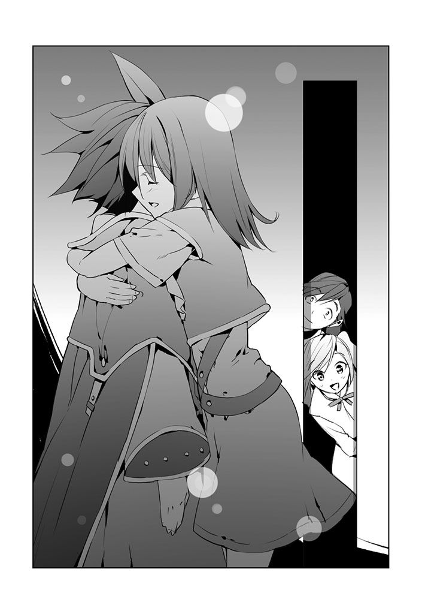
アニスがびっくりして飛び上がる。
「あはは、良かったなアニス！」
「シド、合格っ」
「 我 が輩の高貴な 尻尾 がぁぁ～～！ キェェー」
「大丈夫、クーちゃん、それにふたりとも！」
飛びついていくアニスに、ビアンカが抱きついていく。良かったねぇと頬を撫でられ、アニスははにかんで笑った。クールデール卿は曲がってしまった尻尾を戻そうとしている。ジークが戻そうとして手伝ったが、尻尾はより哀れな格好になってしまった。
いつもどおりの騒ぎを前にして、シドは 不 機 嫌 な顔をし......それから少しだけ口元をゆるめた。
こんにちは、花房牧生です。『アニスと不機嫌な魔法使い』、今回で四巻を 迎 えることができました。一巻の発売は去年の七月でしたから、これで一年と一ヶ月 経 ったことになります。早かったような、あっという間だったような（同じです）
なにがしかの 自 覚 が出てきたかというと、実のところ一巻の頃とあまり変わってないかなあと。しかしＨＪ大賞の 授 賞 式 に呼んでいただいた 際 、美味しいご飯を食べているときに担当さんに「あとがき送ってくださいね！ あとがき！」と言われ、「はて......アトガキ？ ははーん、さては海外のお菓子だな」なんて心の中で思うくらいの 図 太 さは出てきたのですよ！ えっと、もちろん冗談ですよ！
今回は、一巻から名前だけは出ていた女の子の登場です。気に入っていただけると良いのですがー。ビアンカにマリエルにロッテに三姉妹に、女性 陣 の数だけはずんどこ増えていきます。このままだと登場人物紹介ページイラストが集合写真状態になると 恐 れていたんですが、さてどうなってるのか楽しみです。
今回は「さて、これで四回目なんだからそろそろ担当さんにつっこまれることもないに決まっている」なーんて自信を持って 第 一 稿 を提出したんですが。
こっぱみじんに。自信がパウダー状態に。いや......あれは自信ではなかった。 過 信 だった......なんて言ってる場合じゃない。泣きながら修正していると、校正さんからも 怒 濤 のつっこみをいただきました。
もう直すところなんて無い、と私が信じたところから、真の 執 筆 の旅が始まります。皆様いつもどうもありがとうございます。
最近、四コマを描くのが趣味です。 暇 なときにノートに向かうと、「冷血！ マリエルさん」とか「ルミナ、ジークに突撃中☆ 」とか、「クッキング オブ 三姉妹」とか、なんだか 俳 句 を 詠 むように四コマができあがります。
代理公を主人公にしたり、文庫ではできない楽しみを一人で 謳 歌 しています。か、悲しくなんかないですよ？
ちなみに無印良品には四コマ用ノートという、 枠 線 を引くのがスペシャルめんどくさい私向きのアイテムがあるのですよ！ あれはすばらしいです。
んでも私の 画 力 は 崩 壊 の向こう側にあります。へたくそ？ そんな可愛いものではありません。一言で言うと、あり得ない。
「君には観察力がないんだああああああ」
と 指 摘 を受けたことがありますが、その通りだから画力がダメダメなのでしょうか......あのシャウト、もっと 真 摯 に受け止めるべきだった？
色々ゆがんでたり、アニスの髪型が描けなかったり、シドの髪型が描けなかったり、というより誰の髪型も描けなかったり。んでも構わないんだ、と一人でうなづいたり。
まあそんなわけで、せっかくだから四コマをいただいたお手紙の返事用ペーパーとかにしてみたらどうか、なんて考えてたんですが。
「手紙をくれた人に 絶 望 と 落 胆 をプレゼントしてどうするんだ？」
というセルフツッコミのすえ、 門 外 不 出 にしました。あれは、あれはやっぱりよくないと思う。
意外と楽しい四コマ描き、みなさんも趣味の一つに是非どうぞ。 起 承 転 結 をつくることは、なんか頭の 体 操 になります？ すみません 断 言 するのもどうかと思い、クエスチョンマークをあしらってみました。
それはともかく、今回でアニスの物語はここで一段落、という風になっていますが、あれは大団円ラストではありません。序章というか、アニスとシドの出会い編完といったところでしょうか。イーデンの薔薇風にいうと「運命の出会い！ ～嵐と炎のエチュードの巻～」みたいな。
おそらく次の作品は違うタイトルかなと思うのですが、みなさまの 応 援 次 第 でアニスの続きは出せるかな......？ と。すみませんまたクエスチョンマークが。
どうぞ、応援いただければ嬉しいです。
読んでくださった皆様に最大級の 感 謝 を込めまして。
ではでは、願わくば、またお会いしましょう。
平成二十一年 七月 入道雲の日
◆ ご意見、ご感想をお寄せください......ファンレターのあて先◆
〒151-0053 東京都渋谷区代々木2-15-8
 ホビージャパン ＨＪ文庫編集部
ホビージャパン ＨＪ文庫編集部
花房牧生 先生／植田 亮 先生
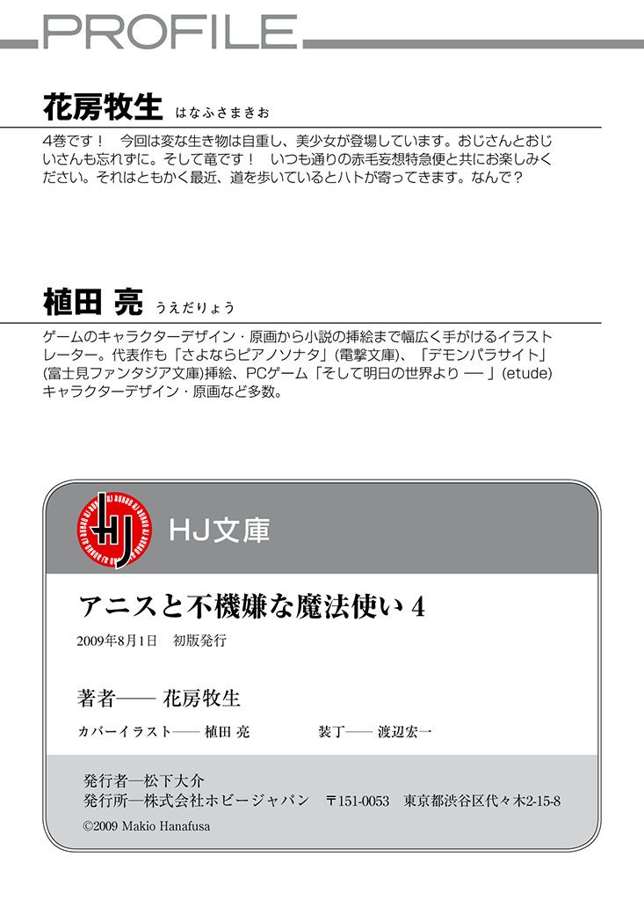